10x-plot-classification-adhoc
Genevieve Housman
May 2021
Last updated: 2021-05-20
Checks: 6 1
Knit directory: human-chimp-skeletal-scRNA/
This reproducible R Markdown analysis was created with workflowr (version 1.6.2). The Checks tab describes the reproducibility checks that were applied when the results were created. The Past versions tab lists the development history.
The R Markdown file has unstaged changes. To know which version of the R Markdown file created these results, you’ll want to first commit it to the Git repo. If you’re still working on the analysis, you can ignore this warning. When you’re finished, you can run wflow_publish to commit the R Markdown file and build the HTML.
Great job! The global environment was empty. Objects defined in the global environment can affect the analysis in your R Markdown file in unknown ways. For reproduciblity it’s best to always run the code in an empty environment.
The command set.seed(20190719) was run prior to running the code in the R Markdown file. Setting a seed ensures that any results that rely on randomness, e.g. subsampling or permutations, are reproducible.
Great job! Recording the operating system, R version, and package versions is critical for reproducibility.
Nice! There were no cached chunks for this analysis, so you can be confident that you successfully produced the results during this run.
Great job! Using relative paths to the files within your workflowr project makes it easier to run your code on other machines.
Great! You are using Git for version control. Tracking code development and connecting the code version to the results is critical for reproducibility.
The results in this page were generated with repository version 325664d. See the Past versions tab to see a history of the changes made to the R Markdown and HTML files.
Note that you need to be careful to ensure that all relevant files for the analysis have been committed to Git prior to generating the results (you can use wflow_publish or wflow_git_commit). workflowr only checks the R Markdown file, but you know if there are other scripts or data files that it depends on. Below is the status of the Git repository when the results were generated:
Ignored files:
Ignored: .Rhistory
Ignored: .Rproj.user/
Untracked files:
Untracked: analysis/10x-plot-enrichment-gom.Rmd
Untracked: analysis/TODO_10x-data-4-classification-t2.Rmd
Untracked: analysis/TODO_10x-data-4-classification.Rmd
Untracked: analysis/TODO_10x-data-4-reclassification-tot.Rmd
Untracked: analysis/TODO_10x-data-5-diffexp.Rmd
Untracked: analysis/TODO_10x-data-6-conservexp.Rmd
Untracked: analysis/TODO_10x-data-6-cormotif-t2.Rmd
Untracked: analysis/TODO_10x-data-6-cormotif-tot.Rmd
Untracked: analysis/TODO_10x-data-6-variance-t2.Rmd
Untracked: analysis/TODO_10x-data-6-variance-tot.Rmd
Untracked: analysis/TODO_10x-data-7-enrichment.Rmd
Untracked: analysis/TODO_10x-data-8-batch-correlation.Rmd
Untracked: analysis/TODO_10x-plot-diffexp.Rmd
Untracked: analysis/TODO_10x-plot-replicate-correlation-t2.Rmd
Untracked: analysis/TODO_10x-plot-replicate-correlation-tot.Rmd
Untracked: analysis/TODO_10x-plot-utf1-tac3.Rmd
Untracked: analysis/TODO_10x-view-batch-effects.Rmd
Untracked: analysis/TODO_10x-view-data-metrics.Rmd
Untracked: analysis/TODO_10x-view-species-assignments.Rmd
Untracked: analysis/TODO_10x-view-validation-data.Rmd
Untracked: analysis/v2/
Untracked: code/FindMarkers.R
Untracked: code/FindMarkers.sh
Untracked: code/FindMarkers_0.1.err
Untracked: code/FindMarkers_0.1.out
Untracked: code/FindMarkers_0.25.err
Untracked: code/FindMarkers_0.25.out
Untracked: code/FindMarkers_0.5.err
Untracked: code/FindMarkers_0.5.out
Untracked: code/FindMarkers_0.75.err
Untracked: code/FindMarkers_0.75.out
Untracked: code/FindMarkers_1.err
Untracked: code/FindMarkers_1.out
Untracked: code/GoM.R
Untracked: code/GoM.sh
Untracked: code/fastTopics.R
Untracked: code/fastTopics.sh
Untracked: code/fastTopicsBC.R
Untracked: code/fastTopicsBC.sh
Untracked: code/fastTopicsBC_3_tot.err
Untracked: code/fastTopicsBC_3_tot.out
Untracked: code/fastTopicsBC_4_tot.err
Untracked: code/fastTopicsBC_4_tot.out
Untracked: code/fastTopicsBC_5_tot.err
Untracked: code/fastTopicsBC_5_tot.out
Untracked: code/fastTopicsBC_6_tot.err
Untracked: code/fastTopicsBC_6_tot.out
Untracked: code/fastTopicsBC_7_tot.err
Untracked: code/fastTopicsBC_7_tot.out
Untracked: code/fastTopicsSpp.R
Untracked: code/fastTopicsSpp.sh
Untracked: code/fastTopicsSppBC.R
Untracked: code/fastTopicsSppBC.sh
Untracked: code/fastTopicsSppBC_3_tot.err
Untracked: code/fastTopicsSppBC_3_tot.out
Untracked: code/fastTopicsSppBC_4_tot.err
Untracked: code/fastTopicsSppBC_4_tot.out
Untracked: code/fastTopicsSppBC_5_tot.err
Untracked: code/fastTopicsSppBC_5_tot.out
Untracked: code/fastTopicsSppBC_6_tot.err
Untracked: code/fastTopicsSppBC_6_tot.out
Untracked: code/fastTopicsSppBC_7_tot.err
Untracked: code/fastTopicsSppBC_7_tot.out
Untracked: code/fastTopicsSpp_3_tot.err
Untracked: code/fastTopicsSpp_3_tot.out
Untracked: code/fastTopicsSpp_4_tot.err
Untracked: code/fastTopicsSpp_4_tot.out
Untracked: code/fastTopicsSpp_5_tot.err
Untracked: code/fastTopicsSpp_5_tot.out
Untracked: code/fastTopicsSpp_6_tot.err
Untracked: code/fastTopicsSpp_6_tot.out
Untracked: code/fastTopicsSpp_7_tot.err
Untracked: code/fastTopicsSpp_7_tot.out
Untracked: code/fastTopics_3_tot.err
Untracked: code/fastTopics_3_tot.out
Untracked: code/fastTopics_4_tot.err
Untracked: code/fastTopics_4_tot.out
Untracked: code/fastTopics_5_tot.err
Untracked: code/fastTopics_5_tot.out
Untracked: code/fastTopics_6_tot.err
Untracked: code/fastTopics_6_tot.out
Untracked: code/fastTopics_7_tot.err
Untracked: code/fastTopics_7_tot.out
Untracked: code/v2/
Untracked: data/HumanPrimaryCellAtlasData-SingleR
Untracked: data/HumanPrimaryCellAtlasDetails-SingleR.csv
Untracked: data/HumanPrimaryCellAtlasLabels-SingleR.csv
Untracked: data/alizarin-red-quant-total.csv
Untracked: data/cell_atlas_ref_panel
Untracked: data/cellranger-data-full/
Untracked: data/corrmatrix.ost
Untracked: data/de-data/
Untracked: data/facs-MSC-collection-summary-sample-avg.csv
Untracked: data/facs-MSC-collection-summary-species-avg.csv
Untracked: data/facs-MSC-collection-summary-total.csv
Untracked: data/gom-data/
Untracked: data/oil-red-quant-total.csv
Untracked: data/scrna-batch-reformat.csv
Untracked: data/scrna-batch.csv
Untracked: output/data-qc-post-subsets-batchcor.pdf
Untracked: output/data-qc-post-subsets-batchviz.pdf
Untracked: output/data-qc-postfilterC-subsets-batchcor.pdf
Untracked: output/data-qc-postfilterC-subsets-batchviz.pdf
Untracked: output/data-qc-postfilterC-subsets-int19k-batchcor.pdf
Untracked: output/data-qc-postfilterC-subsets-int19k-batchviz.pdf
Untracked: output/data-qc-postfilterC-subsets-int19k.reg-batchcor.pdf
Untracked: output/data-qc-postfilterC-subsets-int19k.reg-batchviz.pdf
Untracked: output/data-qc-postfilterC-subsets-intNo0-batchcor.pdf
Untracked: output/data-qc-postfilterC-subsets-intNo0-batchviz.pdf
Untracked: output/data-qc-postfilterC-subsets-intNo0.reg-batchcor.pdf
Untracked: output/data-qc-postfilterC-subsets-intNo0.reg-batchviz.pdf
Untracked: output/data-qc-postfilterC-subsets-merge-batchcor.pdf
Untracked: output/data-qc-postfilterC-subsets-merge-batchviz.pdf
Untracked: output/data-qc-postfilterC.pdf
Untracked: output/data-qc-postfilterL-subsets-batchcor.pdf
Untracked: output/data-qc-postfilterL-subsets-batchviz.pdf
Untracked: output/data-qc-postfilterL-subsets-intNo0.reg-batchcor.pdf
Untracked: output/data-qc-postfilterL-subsets-intNo0.reg-batchviz.pdf
Untracked: output/data-qc-postfilterL-subsets-merge-batchcor.pdf
Untracked: output/data-qc-postfilterL-subsets-merge-batchviz.pdf
Untracked: output/data-qc-postfilterL.pdf
Untracked: output/data-qc-prefilter.pdf
Untracked: output/markers0.05-I.data.filterC.log.indv-cell.intNo0.reg-tot.rds
Untracked: output/markers0.05-M.data.filterC.log.indv-cell.intNo0.reg-tot.rds
Untracked: output/markers0.05-O.data.filterC.log.indv-cell.intNo0.reg-tot.rds
Untracked: output/markers0.05.data.filterC.log.indv-cell.intNo0.reg-tot.rds
Untracked: output/markers0.1.data.filterC.log.indv-cell.intNo0.reg-tot.rds
Untracked: output/markers0.25.data.filterC.log.indv-cell.intNo0.reg-tot.rds
Untracked: output/markers0.5.data.filterC.log.indv-cell.intNo0.reg-tot.rds
Untracked: output/markers0.75.data.filterC.log.indv-cell.intNo0.reg-tot.rds
Untracked: output/markers1.data.filterC.log.indv-cell.intNo0.reg-tot.rds
Untracked: output/markersStage-I.data.filterC.log.indv-cell.intNo0.reg-tot.rds
Untracked: output/markersStage-M.data.filterC.log.indv-cell.intNo0.reg-tot.rds
Untracked: output/markersStage-O.data.filterC.log.indv-cell.intNo0.reg-tot.rds
Untracked: output/v1/
Untracked: output/v2/
Unstaged changes:
Deleted: analysis/10x-data-4-classification-t2.Rmd
Modified: analysis/10x-data-4-classification-tot.Rmd
Deleted: analysis/10x-data-4-classification.Rmd
Deleted: analysis/10x-data-5-diffexp.Rmd
Deleted: analysis/10x-data-6-conservexp.Rmd
Deleted: analysis/10x-data-6-cormotif-t2.Rmd
Deleted: analysis/10x-data-6-cormotif-tot.Rmd
Deleted: analysis/10x-data-6-variance-t2.Rmd
Deleted: analysis/10x-data-6-variance-tot.Rmd
Deleted: analysis/10x-data-7-enrichment.Rmd
Deleted: analysis/10x-data-8-batch-correlation.Rmd
Modified: analysis/10x-plot-classification-adhoc.Rmd
Modified: analysis/10x-plot-classification.Rmd
Deleted: analysis/10x-plot-diffexp.Rmd
Deleted: analysis/10x-plot-replicate-correlation-t2.Rmd
Deleted: analysis/10x-plot-replicate-correlation-tot.Rmd
Deleted: analysis/10x-plot-utf1-tac3.Rmd
Deleted: analysis/10x-view-batch-effects.Rmd
Deleted: analysis/10x-view-data-metrics.Rmd
Deleted: analysis/10x-view-species-assignments.Rmd
Deleted: analysis/10x-view-validation-data.Rmd
Deleted: analysis/asbmr2020-plots.Rmd
Deleted: analysis/ashg2020-plots.Rmd
Modified: analysis/index.Rmd
Deleted: analysis/temp-code.Rmd
Deleted: analysis/v1/index.Rmd
Deleted: analysis/v1/license.Rmd
Modified: code/DEdream.R
Deleted: code/DEdream_totcell.filter.pch20.fml1.nofc.bh_adhoc.err
Deleted: code/DEdream_totcell.filter.pch20.fml1.nofc.bh_adhoc.out
Deleted: code/DEdream_totcell.filter.pch20.fml1.nofc.bh_cluster.err
Deleted: code/DEdream_totcell.filter.pch20.fml1.nofc.bh_cluster.out
Deleted: code/DEdream_totcell.filter.pch20.fml1.nofc.bh_ostadhoc.err
Deleted: code/DEdream_totcell.filter.pch20.fml1.nofc.bh_ostadhoc.out
Deleted: code/DEdream_totcell.filter.pch20.fml1.nofc.bh_stage.err
Deleted: code/DEdream_totcell.filter.pch20.fml1.nofc.bh_stage.out
Deleted: code/DEdream_totcell.filter.pch20.fml2.nofc.bh_adhoc.err
Deleted: code/DEdream_totcell.filter.pch20.fml2.nofc.bh_adhoc.out
Deleted: code/DEdream_totcell.filter.pch20.fml2.nofc.bh_cluster.err
Deleted: code/DEdream_totcell.filter.pch20.fml2.nofc.bh_cluster.out
Deleted: code/DEdream_totcell.filter.pch20.fml2.nofc.bh_ostadhoc.err
Deleted: code/DEdream_totcell.filter.pch20.fml2.nofc.bh_ostadhoc.out
Deleted: code/DEdream_totcell.filter.pch20.fml2.nofc.bh_stage.err
Deleted: code/DEdream_totcell.filter.pch20.fml2.nofc.bh_stage.out
Deleted: code/DEdream_totcell.filter.pch20.fml3.nofc.bh_adhoc.err
Deleted: code/DEdream_totcell.filter.pch20.fml3.nofc.bh_adhoc.out
Deleted: code/DEdream_totcell.filter.pch20.fml3.nofc.bh_cluster.err
Deleted: code/DEdream_totcell.filter.pch20.fml3.nofc.bh_cluster.out
Deleted: code/DEdream_totcell.filter.pch20.fml3.nofc.bh_ostadhoc.err
Deleted: code/DEdream_totcell.filter.pch20.fml3.nofc.bh_ostadhoc.out
Deleted: code/DEdream_totcell.filter.pch20.fml3.nofc.bh_stage.err
Deleted: code/DEdream_totcell.filter.pch20.fml3.nofc.bh_stage.out
Deleted: code/DEdream_totcell.filter.pch20.fml4.nofc.bh_adhoc.err
Deleted: code/DEdream_totcell.filter.pch20.fml4.nofc.bh_adhoc.out
Deleted: code/DEdream_totcell.filter.pch20.fml4.nofc.bh_cluster.err
Deleted: code/DEdream_totcell.filter.pch20.fml4.nofc.bh_cluster.out
Deleted: code/DEdream_totcell.filter.pch20.fml4.nofc.bh_ostadhoc.err
Deleted: code/DEdream_totcell.filter.pch20.fml4.nofc.bh_ostadhoc.out
Deleted: code/DEdream_totcell.filter.pch20.fml4.nofc.bh_stage.err
Deleted: code/DEdream_totcell.filter.pch20.fml4.nofc.bh_stage.out
Deleted: code/DEdream_totcell.filter.pch20.fml5.nofc.bh_adhoc.err
Deleted: code/DEdream_totcell.filter.pch20.fml5.nofc.bh_adhoc.out
Deleted: code/DEdream_totcell.filter.pch20.fml5.nofc.bh_cluster.err
Deleted: code/DEdream_totcell.filter.pch20.fml5.nofc.bh_cluster.out
Deleted: code/DEdream_totcell.filter.pch20.fml5.nofc.bh_ostadhoc.err
Deleted: code/DEdream_totcell.filter.pch20.fml5.nofc.bh_ostadhoc.out
Deleted: code/DEdream_totcell.filter.pch20.fml5.nofc.bh_stage.err
Deleted: code/DEdream_totcell.filter.pch20.fml5.nofc.bh_stage.out
Deleted: code/DEdream_totcell.keepRep1.filter.pch20.fml1.nofc.bh_adhoc.err
Deleted: code/DEdream_totcell.keepRep1.filter.pch20.fml1.nofc.bh_adhoc.out
Deleted: code/DEdream_totcell.keepRep1.filter.pch20.fml1.nofc.bh_cluster.err
Deleted: code/DEdream_totcell.keepRep1.filter.pch20.fml1.nofc.bh_cluster.out
Deleted: code/DEdream_totcell.keepRep1.filter.pch20.fml1.nofc.bh_ostadhoc.err
Deleted: code/DEdream_totcell.keepRep1.filter.pch20.fml1.nofc.bh_ostadhoc.out
Deleted: code/DEdream_totcell.keepRep1.filter.pch20.fml1.nofc.bh_stage.err
Deleted: code/DEdream_totcell.keepRep1.filter.pch20.fml1.nofc.bh_stage.out
Deleted: code/DEdream_totcell.keepRep1.filter.pch20.fml5.nofc.bh_adhoc.err
Deleted: code/DEdream_totcell.keepRep1.filter.pch20.fml5.nofc.bh_adhoc.out
Deleted: code/DEdream_totcell.keepRep1.filter.pch20.fml5.nofc.bh_cluster.err
Deleted: code/DEdream_totcell.keepRep1.filter.pch20.fml5.nofc.bh_cluster.out
Deleted: code/DEdream_totcell.keepRep1.filter.pch20.fml5.nofc.bh_ostadhoc.err
Deleted: code/DEdream_totcell.keepRep1.filter.pch20.fml5.nofc.bh_ostadhoc.out
Deleted: code/DEdream_totcell.keepRep1.filter.pch20.fml5.nofc.bh_stage.err
Deleted: code/DEdream_totcell.keepRep1.filter.pch20.fml5.nofc.bh_stage.out
Deleted: code/DEdream_totcell.keepRep2.filter.pch20.fml1.nofc.bh_FALSE.out
Deleted: code/DEdream_totcell.keepRep2.filter.pch20.fml1.nofc.bh_adhoc.err
Deleted: code/DEdream_totcell.keepRep2.filter.pch20.fml1.nofc.bh_adhoc.out
Deleted: code/DEdream_totcell.keepRep2.filter.pch20.fml1.nofc.bh_cluster.err
Deleted: code/DEdream_totcell.keepRep2.filter.pch20.fml1.nofc.bh_cluster.out
Deleted: code/DEdream_totcell.keepRep2.filter.pch20.fml1.nofc.bh_ostadhoc.err
Deleted: code/DEdream_totcell.keepRep2.filter.pch20.fml1.nofc.bh_ostadhoc.out
Deleted: code/DEdream_totcell.keepRep2.filter.pch20.fml1.nofc.bh_stage.err
Deleted: code/DEdream_totcell.keepRep2.filter.pch20.fml1.nofc.bh_stage.out
Deleted: code/DEdream_totcell.keepRep2.filter.pch20.fml5.nofc.bh_adhoc.err
Deleted: code/DEdream_totcell.keepRep2.filter.pch20.fml5.nofc.bh_adhoc.out
Deleted: code/DEdream_totcell.keepRep2.filter.pch20.fml5.nofc.bh_cluster.err
Deleted: code/DEdream_totcell.keepRep2.filter.pch20.fml5.nofc.bh_cluster.out
Deleted: code/DEdream_totcell.keepRep2.filter.pch20.fml5.nofc.bh_ostadhoc.err
Deleted: code/DEdream_totcell.keepRep2.filter.pch20.fml5.nofc.bh_ostadhoc.out
Deleted: code/DEdream_totcell.keepRep2.filter.pch20.fml5.nofc.bh_stage.err
Deleted: code/DEdream_totcell.keepRep2.filter.pch20.fml5.nofc.bh_stage.out
Deleted: code/DEdream_totcell.pseudo.nofilter.fml1.nofc.bh_adhoc.err
Deleted: code/DEdream_totcell.pseudo.nofilter.fml1.nofc.bh_adhoc.out
Deleted: code/DEdream_totcell.pseudo.nofilter.fml1.nofc.bh_cluster.err
Deleted: code/DEdream_totcell.pseudo.nofilter.fml1.nofc.bh_cluster.out
Deleted: code/DEdream_totcell.pseudo.nofilter.fml1.nofc.bh_ostadhoc.err
Deleted: code/DEdream_totcell.pseudo.nofilter.fml1.nofc.bh_ostadhoc.out
Deleted: code/DEdream_totcell.pseudo.nofilter.fml1.nofc.bh_stage.err
Deleted: code/DEdream_totcell.pseudo.nofilter.fml1.nofc.bh_stage.out
Deleted: code/DEdream_totcell.subNum.filter.pch20.fml1.nofc.bh_adhoc.err
Deleted: code/DEdream_totcell.subNum.filter.pch20.fml1.nofc.bh_adhoc.out
Deleted: code/DEdream_totcell.subNum.filter.pch20.fml1.nofc.bh_cluster.err
Deleted: code/DEdream_totcell.subNum.filter.pch20.fml1.nofc.bh_cluster.out
Deleted: code/DEdream_totcell.subNum.filter.pch20.fml1.nofc.bh_ostadhoc.err
Deleted: code/DEdream_totcell.subNum.filter.pch20.fml1.nofc.bh_ostadhoc.out
Deleted: code/DEdream_totcell.subNum.filter.pch20.fml1.nofc.bh_stage.err
Deleted: code/DEdream_totcell.subNum.filter.pch20.fml1.nofc.bh_stage.out
Deleted: code/DEdream_totcell.subNum.filter.pch20.fml5.nofc.bh_adhoc.err
Deleted: code/DEdream_totcell.subNum.filter.pch20.fml5.nofc.bh_adhoc.out
Deleted: code/DEdream_totcell.subNum.filter.pch20.fml5.nofc.bh_cluster.err
Deleted: code/DEdream_totcell.subNum.filter.pch20.fml5.nofc.bh_cluster.out
Deleted: code/DEdream_totcell.subNum.filter.pch20.fml5.nofc.bh_ostadhoc.err
Deleted: code/DEdream_totcell.subNum.filter.pch20.fml5.nofc.bh_ostadhoc.out
Deleted: code/DEdream_totcell.subNum.filter.pch20.fml5.nofc.bh_stage.err
Deleted: code/DEdream_totcell.subNum.filter.pch20.fml5.nofc.bh_stage.out
Modified: code/DEdreamsubset.R
Deleted: code/DEedgeR_totcell.filter.pch20.fc.bh_adhoc.err
Deleted: code/DEedgeR_totcell.filter.pch20.fc.bh_adhoc.out
Deleted: code/DEedgeR_totcell.filter.pch20.fc.bh_cluster.err
Deleted: code/DEedgeR_totcell.filter.pch20.fc.bh_cluster.out
Deleted: code/DEedgeR_totcell.filter.pch20.fc.bh_ostadhoc.err
Deleted: code/DEedgeR_totcell.filter.pch20.fc.bh_ostadhoc.out
Deleted: code/DEedgeR_totcell.filter.pch20.fc.bh_stage.err
Deleted: code/DEedgeR_totcell.filter.pch20.fc.bh_stage.out
Deleted: code/DEedgeR_totcell.keepRep1.filter.pch20.fc.bh_adhoc.err
Deleted: code/DEedgeR_totcell.keepRep1.filter.pch20.fc.bh_adhoc.out
Deleted: code/DEedgeR_totcell.keepRep1.filter.pch20.fc.bh_cluster.err
Deleted: code/DEedgeR_totcell.keepRep1.filter.pch20.fc.bh_cluster.out
Deleted: code/DEedgeR_totcell.keepRep1.filter.pch20.fc.bh_ostadhoc.err
Deleted: code/DEedgeR_totcell.keepRep1.filter.pch20.fc.bh_ostadhoc.out
Deleted: code/DEedgeR_totcell.keepRep1.filter.pch20.fc.bh_stage.err
Deleted: code/DEedgeR_totcell.keepRep1.filter.pch20.fc.bh_stage.out
Deleted: code/DEedgeR_totcell.keepRep2.filter.pch20.fc.bh_adhoc.err
Deleted: code/DEedgeR_totcell.keepRep2.filter.pch20.fc.bh_adhoc.out
Deleted: code/DEedgeR_totcell.keepRep2.filter.pch20.fc.bh_cluster.err
Deleted: code/DEedgeR_totcell.keepRep2.filter.pch20.fc.bh_cluster.out
Deleted: code/DEedgeR_totcell.keepRep2.filter.pch20.fc.bh_ostadhoc.err
Deleted: code/DEedgeR_totcell.keepRep2.filter.pch20.fc.bh_ostadhoc.out
Deleted: code/DEedgeR_totcell.keepRep2.filter.pch20.fc.bh_stage.err
Deleted: code/DEedgeR_totcell.keepRep2.filter.pch20.fc.bh_stage.out
Deleted: code/DEedgeR_totcell.subNum.filter.pch20.fc.bh_adhoc.err
Deleted: code/DEedgeR_totcell.subNum.filter.pch20.fc.bh_adhoc.out
Deleted: code/DEedgeR_totcell.subNum.filter.pch20.fc.bh_cluster.err
Deleted: code/DEedgeR_totcell.subNum.filter.pch20.fc.bh_cluster.out
Deleted: code/DEedgeR_totcell.subNum.filter.pch20.fc.bh_ostadhoc.err
Deleted: code/DEedgeR_totcell.subNum.filter.pch20.fc.bh_ostadhoc.out
Deleted: code/DEedgeR_totcell.subNum.filter.pch20.fc.bh_stage.err
Deleted: code/DEedgeR_totcell.subNum.filter.pch20.fc.bh_stage.out
Note that any generated files, e.g. HTML, png, CSS, etc., are not included in this status report because it is ok for generated content to have uncommitted changes.
These are the previous versions of the repository in which changes were made to the R Markdown (analysis/10x-plot-classification-adhoc.Rmd) and HTML (docs/10x-plot-classification-adhoc.html) files. If you’ve configured a remote Git repository (see ?wflow_git_remote), click on the hyperlinks in the table below to view the files as they were in that past version.
| File | Version | Author | Date | Message |
|---|---|---|---|---|
| Rmd | 325664d | Genevieve Housman | 2021-05-18 | fixed ad hoc gene 4 |
| Rmd | 1ceaeba | Genevieve Housman | 2021-05-13 | ad hoc classification plots |
| Rmd | f3876a3 | Genevieve Housman | 2021-04-09 | ad hod plots |
10X Data Cellranger Analysis - Visual Cell Classifications (Ad Hoc)
Visualize ad hoc cell classification results.
#Load libraries
library(ggplot2)
library(grid)
library(gridExtra)
library(Seurat)
library(UpSetR)#Load data
#data integrated across individuals - total (conservative cell filter + non-zero genes + regress out UMI/mito)
scrna <- "./data/cellranger-data-full/data.filterC.log.indv-cell.intNo0.reg-tot.assign.rds"
data <- readRDS(scrna)Examine several different candidate genes.
#Look at candidate genes
#Time 0
#diagnostic: POU5F1 (OCT4), TDGF1, SOX2, EPCAM
#additional: NANOG, ALPL, STAT3, PROM1 (CD133), PODXL (TRA-1-60R), LIN28A, ZFP42, UTF1, MYC, BMP4, FGF2, TGFB1, DNMT3B, SALL4
#if needed: FOXD3, FUT4 (SSEA-1), KLF2, KLF4, KLF5, INHBA (Activin A), LIF, PRDM14
genes <- c("POU5F1","TDGF1","SOX2","EPCAM","NANOG","ALPL","STAT3","PROM1","PODXL","LIN28A","ZFP42","UTF1","MYC","BMP4","FGF2","TGFB1","DNMT3B",
"SALL4","FOXD3","FUT4","KLF2","KLF4","KLF5","INHBA","LIF","PRDM14")
data@assays$integrated[genes,1:3]26 x 3 sparse Matrix of class "dgCMatrix"
H1.I_AAACCCAAGCACCCAC H1.I_AAACCCACACAAGTTC H1.I_AAACCCAGTTATGGTC
POU5F1 2.798078217 2.51660479 1.863549078
TDGF1 1.520239162 1.87894360 1.737746456
SOX2 1.048271101 1.02058749 1.214641691
EPCAM 1.651739696 0.75811609 2.021307506
NANOG -0.046057806 0.01741932 0.345511642
ALPL 0.594945484 0.35000939 0.696882374
STAT3 0.536586479 -0.02122065 0.339611509
PROM1 0.036789727 0.32186867 0.679532811
PODXL 1.147653618 1.08087377 0.775115717
LIN28A 1.436888748 1.76813659 0.609968658
ZFP42 0.751225803 0.42821428 0.772189983
UTF1 0.528265371 1.46022101 0.129094176
MYC 0.406532659 0.15987203 -0.069401750
BMP4 0.066492562 0.12057343 0.610845477
FGF2 0.022776684 1.30597507 0.713190094
TGFB1 0.076523109 0.16490522 0.388614321
DNMT3B 0.635101527 1.03439783 0.873605848
SALL4 0.428383656 0.47152789 0.941886213
FOXD3 -0.069116838 0.26336171 -0.063925585
FUT4 -0.030201470 0.04561434 0.598543756
KLF2 -0.018888406 0.01115259 0.009153768
KLF4 0.006657256 0.15993952 0.013116886
KLF5 0.025940839 0.02683706 0.000238281
INHBA -0.002594625 0.16242411 0.001311478
LIF 0.006498922 0.02564360 0.003076011
PRDM14 0.001520537 0.03310564 0.034882129FeaturePlot(data, features=genes[1:4], reduction="umap", pt.size=0.5, order=TRUE) + labs(x="UMAP1",y="UMAP2")
CombinePlots(plots=list((FeaturePlot(data, features=genes[1], reduction="pca", pt.size=0.5, order=TRUE, dims=c(1,2)) + labs(x="PC1",y="PC2")),
(FeaturePlot(data, features=genes[1], reduction="pca", pt.size=0.5, order=TRUE, dims=c(3,4)) + labs(x="PC3",y="PC4")),
(FeaturePlot(data, features=genes[1], reduction="pca", pt.size=0.5, order=TRUE, dims=c(5,6)) + labs(x="PC5",y="PC6")),
(FeaturePlot(data, features=genes[1], reduction="pca", pt.size=0.5, order=TRUE, dims=c(7,8)) + labs(x="PC7",y="PC8")),
(FeaturePlot(data, features=genes[1], reduction="pca", pt.size=0.5, order=TRUE, dims=c(9,10)) + labs(x="PC1",y="PC10"))), ncol=3)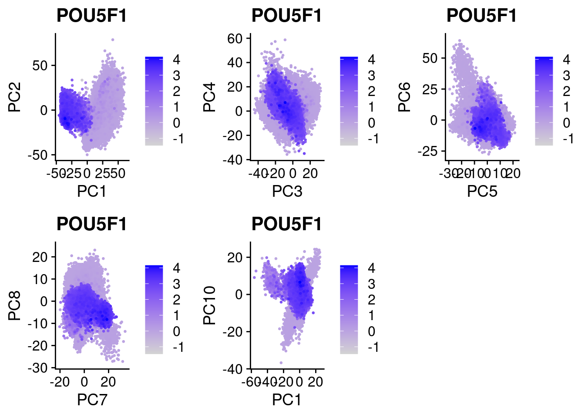
#Time 1
#diagnostic: THY1 (CD90), NT5E (CD73), ENG (CD105), CD44
#additional: ANPEP (CD13), NGFR (CD271), ITGB1 (CD29), NCAM1 (CD56)
#if needed: CD9, CD14, MME (CD10), ITGAL (CD11A), ITGAX (CD11C)*, CD36, ITGA3 (CD49C), ITGA4 (CD49D), ITGAV (CD51), ICAM1 (CD54), CD55, CD59, TFRC (CD71), VCAM1 (CD106), KIT (CD117), TNFRSF1A (CD120a), PDGFRB (CD140B), CDH5 (CD144), MCAM (CD146), ALCAM (CD166), ERBB2 (CD340)
#negative controls: ITGAM (CD11B), CD14, PECAM1 (CD31), CD34, PTPRC (CD45), CD79A, HLA-DRA (HLA-DR)
genes <- c("THY1","NT5E","ENG","CD44","ANPEP","NGFR","ITGB1","NCAM1","CD9","CD14","MME","ITGAL","ITGAX","CD36","ITGA3","ITGA4","ITGAV","ICAM1","CD55",
"CD59","TFRC","VCAM1","KIT","TNFRSF1A","PDGFRB","CDH5","MCAM","ALCAM","ERBB2","ITGAM","CD14","PECAM1","CD34","PTPRC","CD79A","HLA-DRA")
data@assays$integrated[genes,1:3]36 x 3 sparse Matrix of class "dgCMatrix"
H1.I_AAACCCAAGCACCCAC H1.I_AAACCCACACAAGTTC H1.I_AAACCCAGTTATGGTC
THY1 1.8056956651 1.0064000606 1.717243e+00
NT5E 0.0016344875 -0.0011284697 -3.993893e-03
ENG 0.0010470572 -0.0261645787 1.418011e-02
CD44 0.3666295711 0.1899322465 -5.108456e-02
ANPEP -0.0006992446 0.0002564320 1.394606e-03
NGFR 0.4094414555 0.2119181525 8.375434e-03
ITGB1 0.7200204450 0.7797715776 1.212218e+00
NCAM1 -0.0003617822 -0.0100121721 3.085597e-02
CD9 0.7372536489 0.7533108456 7.068716e-01
CD14 0.0024029401 -0.0002103118 7.039878e-03
MME 0.0647563003 -0.0446483703 -3.291410e-02
ITGAL . . .
ITGAX 0.0001220064 -0.0002951383 -7.984323e-06
CD36 0.0005235889 0.2014629083 1.499106e-02
ITGA3 -0.0054410807 0.1479709118 3.119583e-02
ITGA4 -0.0135914122 -0.0037400350 -4.246523e-03
ITGAV 0.3371151002 0.1942692313 -5.266503e-03
ICAM1 0.0033665869 0.0077615398 7.338435e-03
CD55 0.3621202082 0.1835437947 -6.652234e-02
CD59 -0.0022923402 0.0067896531 -1.532220e-03
TFRC 0.4385888214 0.3459803006 1.130907e+00
VCAM1 . . .
KIT 0.0260025716 0.0167045263 -7.267133e-03
TNFRSF1A -0.1533688064 0.2088571724 2.569596e-01
PDGFRB 0.0003062634 -0.0014977606 -6.537862e-04
CDH5 0.0008337504 -0.0003959968 2.367870e-03
MCAM -0.0153017393 -0.0282310070 -5.708994e-02
ALCAM 0.3804743349 0.3923575525 6.567136e-01
ERBB2 0.7442944355 0.1104977133 -5.708196e-02
ITGAM -0.0071306407 0.0000943756 3.093025e-04
CD14 0.0024029401 -0.0002103118 7.039878e-03
PECAM1 . -0.0009087470 4.180841e-03
CD34 -0.0029941817 -0.0003078242 -5.756316e-07
PTPRC . . .
CD79A 0.0008148787 0.0121223240 4.124969e-03
HLA-DRA 0.0048281051 0.0101543711 2.245825e-02FeaturePlot(data, features=genes[1:4], reduction="umap", pt.size=0.5, order=TRUE) + labs(x="UMAP1",y="UMAP2")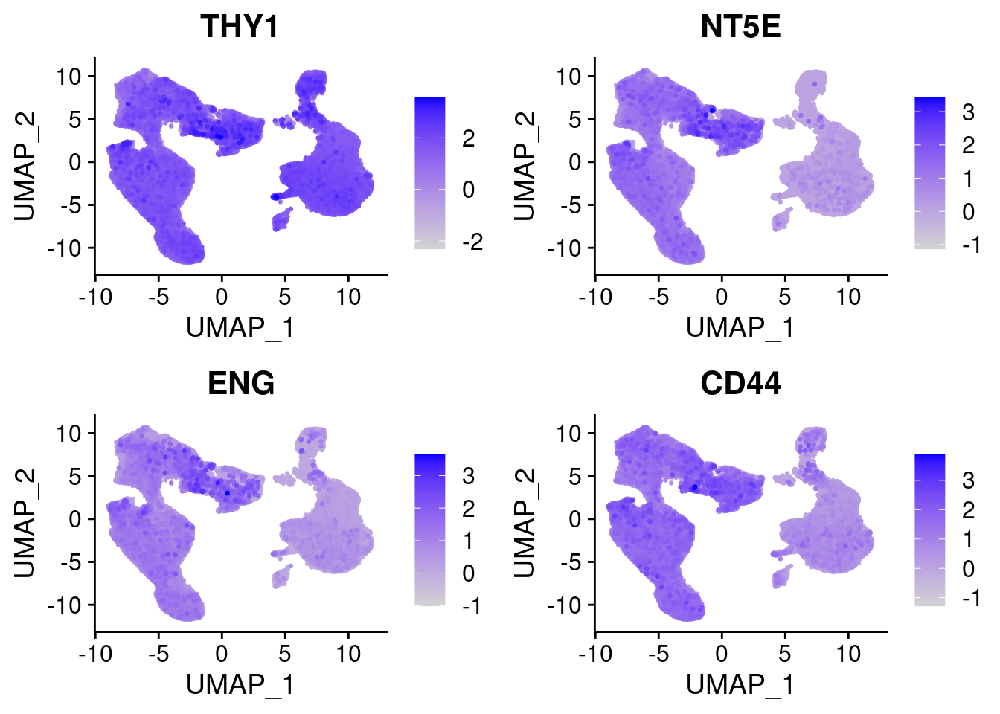
CombinePlots(plots=list((FeaturePlot(data, features=genes[1], reduction="pca", pt.size=0.5, order=TRUE, dims=c(1,2)) + labs(x="PC1",y="PC2")),
(FeaturePlot(data, features=genes[1], reduction="pca", pt.size=0.5, order=TRUE, dims=c(3,4)) + labs(x="PC3",y="PC4")),
(FeaturePlot(data, features=genes[1], reduction="pca", pt.size=0.5, order=TRUE, dims=c(5,6)) + labs(x="PC5",y="PC6")),
(FeaturePlot(data, features=genes[1], reduction="pca", pt.size=0.5, order=TRUE, dims=c(7,8)) + labs(x="PC7",y="PC8")),
(FeaturePlot(data, features=genes[1], reduction="pca", pt.size=0.5, order=TRUE, dims=c(9,10)) + labs(x="PC1",y="PC10"))), ncol=3)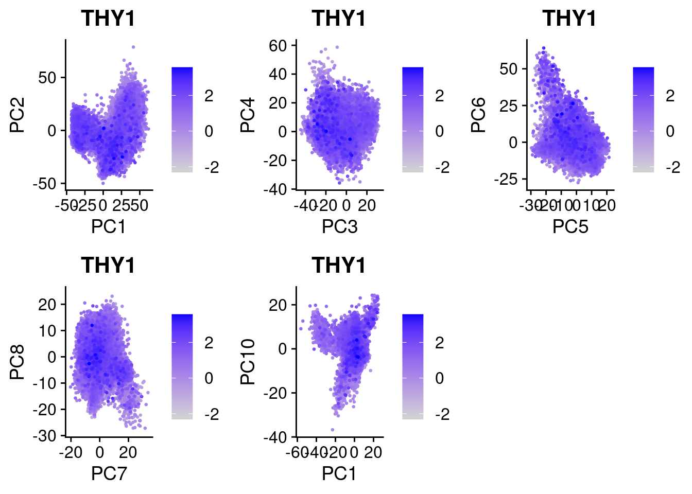
#Time 2
#diagnostic: RUNX2, BGLAP, CAPG, [DMP1], [PHEX], MEPE, [SOST], [HYOU1]
#additional: COL1A1, COL1A2, ALPL, TNFRSF11B (OPG), TNFSF11 (RANKL), CSF1 (M-CSF), DKK1, SFRP1, PTGES2, PTGS2, SPP1 (OPN), SPARC (ONT)
#if needed: E11*
# * not in ortho-exon (osteo)
genes <- c("RUNX2","BGLAP","CAPG","DMP1","PHEX","MEPE","SOST","HYOU1",
"COL1A1","COL1A2","ALPL","TNFRSF11B","TNFSF11",
"CSF1","DKK1","SFRP1","PTGES2","PTGS2","SPP1","SPARC")
data@assays$integrated[genes,1:3]20 x 3 sparse Matrix of class "dgCMatrix"
H1.I_AAACCCAAGCACCCAC H1.I_AAACCCACACAAGTTC
RUNX2 -0.0390322340 3.898102e-03
BGLAP -0.0023869225 -1.840247e-03
CAPG 0.1628959290 7.400590e-02
DMP1 . .
PHEX . .
MEPE . .
SOST 0.0001466093 -5.614374e-04
HYOU1 0.4031999893 1.296851e-01
COL1A1 -0.0045476128 1.160388e+00
COL1A2 0.0932813050 2.732437e-02
ALPL 0.5949454841 3.500094e-01
TNFRSF11B -0.0159073288 -1.509589e-02
TNFSF11 0.0023942070 9.818371e-03
CSF1 0.0064083657 6.737730e-03
DKK1 . -1.799863e-05
SFRP1 0.0942823216 2.654986e-01
PTGES2 0.8540429857 8.741111e-01
PTGS2 0.0029229291 .
SPP1 1.1904574336 1.653171e-01
SPARC 0.1962977497 1.052137e+00
H1.I_AAACCCAGTTATGGTC
RUNX2 -4.359627e-03
BGLAP .
CAPG 4.284833e-01
DMP1 .
PHEX .
MEPE .
SOST 3.409206e-01
HYOU1 3.393876e-01
COL1A1 4.124151e-01
COL1A2 -2.323545e-02
ALPL 6.968824e-01
TNFRSF11B 9.996203e-05
TNFSF11 7.866334e-03
CSF1 2.111324e-03
DKK1 2.189437e-05
SFRP1 8.137779e-01
PTGES2 -2.517990e-01
PTGS2 2.171976e-04
SPP1 1.267911e+00
SPARC 8.429698e-01FeaturePlot(data, features=genes[1:8], reduction="umap", pt.size=0.5, order=TRUE) + labs(x="UMAP1",y="UMAP2")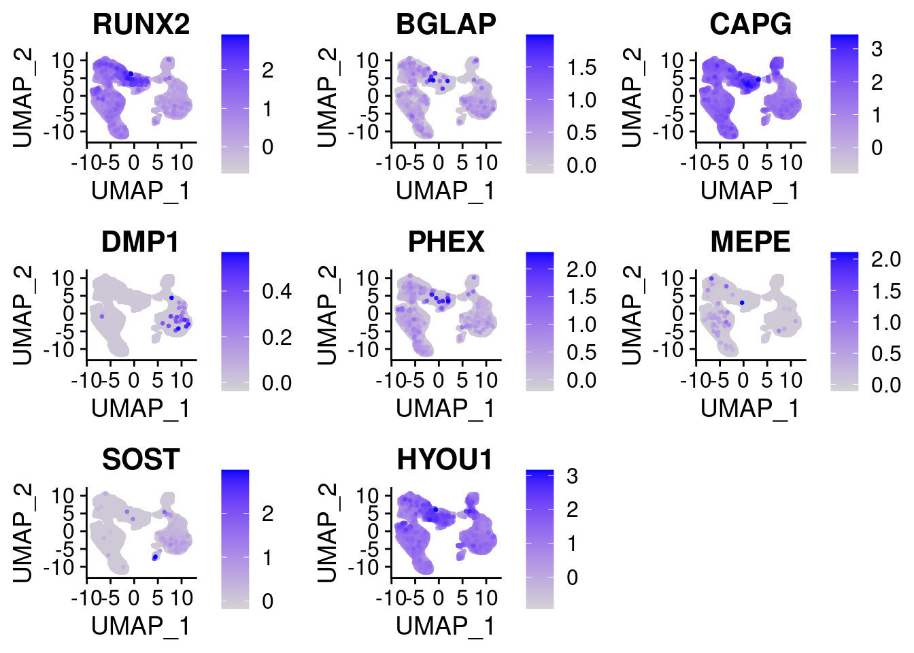
CombinePlots(plots=list((FeaturePlot(data, features=genes[1], reduction="pca", pt.size=0.5, order=TRUE, dims=c(1,2)) + labs(x="PC1",y="PC2")),
(FeaturePlot(data, features=genes[1], reduction="pca", pt.size=0.5, order=TRUE, dims=c(3,4)) + labs(x="PC3",y="PC4")),
(FeaturePlot(data, features=genes[1], reduction="pca", pt.size=0.5, order=TRUE, dims=c(5,6)) + labs(x="PC5",y="PC6")),
(FeaturePlot(data, features=genes[1], reduction="pca", pt.size=0.5, order=TRUE, dims=c(7,8)) + labs(x="PC7",y="PC8")),
(FeaturePlot(data, features=genes[1], reduction="pca", pt.size=0.5, order=TRUE, dims=c(9,10)) + labs(x="PC1",y="PC10"))), ncol=3)
FeaturePlot(data, features=genes[9:20], reduction="umap", pt.size=0.5, order=TRUE) + labs(x="UMAP1",y="UMAP2")
#markers that differentiated BM osteoblasts in Anastasia Tikhonova's research (ASBMR2020)
FeaturePlot(data, features=c("COL11A2","SPARC","SOX9","COMP","CHAD","COL10A1","EDIL3","MMP14","OSTN","COL12A1","ANGPTL2","COL16A1"), reduction="umap", pt.size=0.5, order=TRUE)
#markers used to differentiate different stages of osteogenic differentiation (BGLAP=preosteoblast,TNC=intermediate,PDPN+FBLN7=osteocytes) from Jialiang Wang's research (ASBMR2020)
FeaturePlot(data, features=c("BGLAP","TNC","PDPN","FBLN7"), reduction="umap", pt.size=0.5, order=TRUE) + labs(x="UMAP1",y="UMAP2")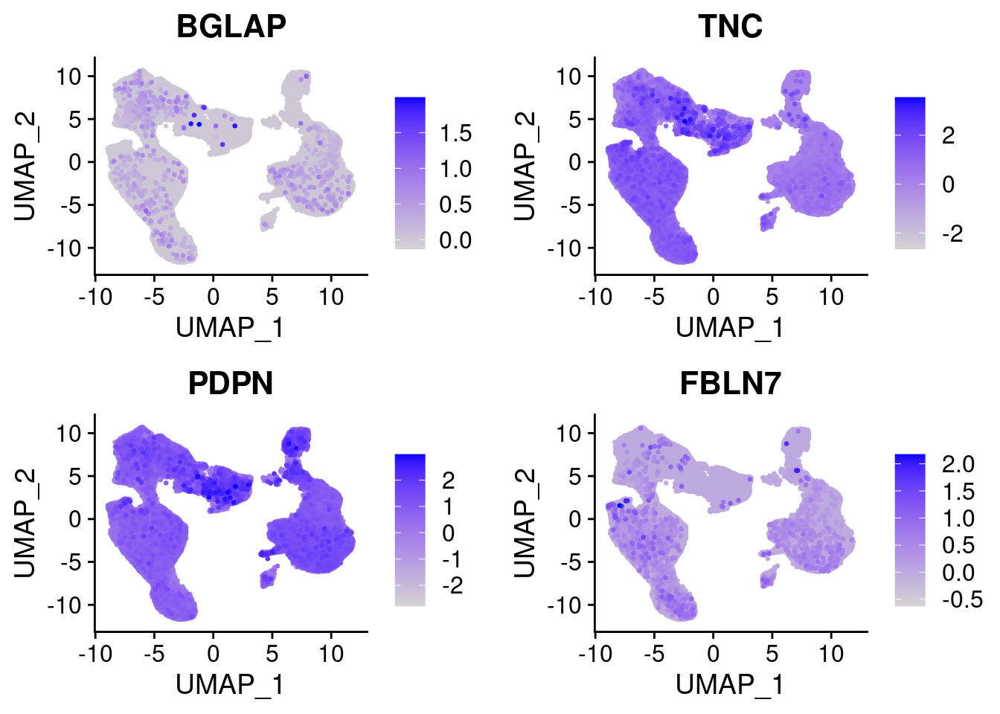
#chondrogenic diagnostic: ACAN, COL2A1, SOX9, COL10A1, COL11A1, SOX5, SOX6
#adipogenic diagnostic: FABP4, PPARG, EBF2, PDGFRA, FGF10, FGF16, FGF19, SLC7A10, SLC36A2, MYF5, P2RX5
genes <- c("ACAN","COL2A1","SOX9","FABP4","PPARG","EBF2",
"COL10A1","COL11A1","SOX5","SOX6",
"PDGFRA","FGF10","FGF16","FGF19","SLC7A10","SLC36A2","P2RX5","MYF5")
data@assays$integrated[genes,1:5]18 x 5 sparse Matrix of class "dgCMatrix"
H1.I_AAACCCAAGCACCCAC H1.I_AAACCCACACAAGTTC H1.I_AAACCCAGTTATGGTC
ACAN 2.223015e-03 1.838462e-05 0.0002911019
COL2A1 -6.137829e-02 -2.835827e-02 -0.0092565978
SOX9 1.234612e-02 7.105216e-03 0.0215782122
FABP4 . -6.831665e-04 .
PPARG -1.280058e-04 -1.199776e-04 -0.0001506700
EBF2 . . .
COL10A1 . . .
COL11A1 2.249341e-01 -5.671492e-02 -0.0468147159
SOX5 1.045803e-03 -6.610886e-03 0.0212454048
SOX6 -6.508033e-06 8.452292e-04 .
PDGFRA -2.821467e-02 1.649151e-02 0.3264076313
FGF10 2.565149e-05 -1.885180e-02 -0.0046276423
FGF16 . -1.591599e-02 -0.0241994760
FGF19 -2.941162e-03 3.910653e-03 -0.0262819145
SLC7A10 -2.926528e-02 1.164786e-02 0.0039641376
SLC36A2 . . .
P2RX5 4.109772e-01 -2.871594e-02 -0.0656065385
MYF5 . . .
H1.I_AAACCCATCGTGGAAG H1.I_AAACCCATCTCGAGTA
ACAN 5.052350e-04 0.0037486529
COL2A1 3.211074e-03 -0.0201081638
SOX9 -2.331751e-02 0.0258032343
FABP4 . .
PPARG -2.089393e-05 -0.0004788232
EBF2 . .
COL10A1 . .
COL11A1 -3.755412e-02 0.0473960043
SOX5 -1.164882e-04 0.0025613792
SOX6 . .
PDGFRA -1.562291e-02 -0.0120072435
FGF10 1.894966e-03 -0.0004052783
FGF16 -3.285272e-02 0.0195014238
FGF19 5.968886e-02 0.0286362809
SLC7A10 -4.705957e-03 0.4670587317
SLC36A2 . .
P2RX5 4.774214e-01 -0.0533861005
MYF5 . . FeaturePlot(data, features=genes[c(1,4,2,5,3,6)], reduction="umap", pt.size=0.5, order=TRUE) + labs(x="UMAP1",y="UMAP2")
Isolate gene expression levels of interest.
#Isolate genes of interest
genes <- c("POU5F1","TDGF1","SOX2","EPCAM",
"THY1","NT5E","ENG","CD44",
"RUNX2","BGLAP","CAPG","DMP1","PHEX","MEPE","SOST","HYOU1",
"COL1A1","COL1A2","ALPL",
"ACAN","COL2A1","SOX9",
"FABP4","PPARG","EBF2",
"TNC","PDPN","FBLN7")Assign Gene Expression Thresholds
Define functions for setting potential ad hoc thresholds.
#Define functions for setting ad hoc thresholds
chk.thres.manual <- function(data, genes, thres) {
assignments <- data
i=1
while(i <= length(genes)) {
assignments[,genes[i]] <- ifelse(data[,genes[i]] > thres[i], 1, 0)
i=i+1
}
return(assignments)
}
chk.thres.median <- function(data, genes, cutoff) {
assignments <- data
i=1
while(i <= length(genes)) {
if(is.na(cutoff)) { thres <- median(data[,genes[i]]) }
else { thres <- median(data[,genes[i]][data[,genes[i]]<cutoff]) }
assignments[,genes[i]] <- ifelse(data[,genes[i]] > thres, 1, 0)
i=i+1
}
return(assignments)
}
chk.thres.q1 <- function(data, genes, cutoff) {
assignments <- data
i=1
while(i <= length(genes)) {
if(is.na(cutoff)) { thres <- quantile(data[,genes[i]],prob=0.25) }
else { thres <- quantile(data[,genes[i]][data[,genes[i]]<cutoff],prob=0.25) }
assignments[,genes[i]] <- ifelse(data[,genes[i]] > thres, 1, 0)
i=i+1
}
return(assignments)
}
chk.thres.q3 <- function(data, genes, cutoff) {
assignments <- data
i=1
while(i <= length(genes)) {
if(is.na(cutoff)) { thres <- quantile(data[,genes[i]],prob=0.75) }
else { thres <- quantile(data[,genes[i]][data[,genes[i]]<cutoff],prob=0.75) }
assignments[,genes[i]] <- ifelse(data[,genes[i]] > thres, 1, 0)
i=i+1
}
return(assignments)
}
chk.thres.mean <- function(data, genes, cutoff) {
assignments <- data
i=1
while(i <= length(genes)) {
if(is.na(cutoff)) { thres <- mean(data[,genes[i]]) }
else { thres <- mean(data[,genes[i]][data[,genes[i]]<cutoff]) }
assignments[,genes[i]] <- ifelse(data[,genes[i]] > thres, 1, 0)
i=i+1
}
return(assignments)
}
chk.thres.meansd <- function(data, genes, cutoff) {
assignments <- data
i=1
while(i <= length(genes)) {
if(is.na(cutoff)) { thres <- sum(mean(data[,genes[i]]),sd(data[,genes[i]])) }
else { thres <- sum(mean(data[,genes[i]][data[,genes[i]]<cutoff]),sd(data[,genes[i]][data[,genes[i]]<cutoff])) }
assignments[,genes[i]] <- ifelse(data[,genes[i]] > thres, 1, 0)
i=i+1
}
return(assignments)
}Calculate if genes reach expression thresholds. Start with several threshold limits.
- scaled integrated data (with confounding variables regressed out)
- log normalized data
- rescaled integrated gene expression data to range from 0 to 1
- rescaled log normalized gene expression data to range from 0 to 1
- non-scaled integrated data (with confounding variables regressed out)
#Scaled integrated data (with confounding variables regressed out)
tot.genes <- cbind(as.data.frame(t(as.matrix(data@assays$integrated@scale.data[genes,]))),data@meta.data[,c("Species","Stage","Sample")])
assign.threshN0.1 <- chk.thres.manual(tot.genes, genes, thres=c(rep(-0.1,length(genes))))
assign.threshN0.05 <- chk.thres.manual(tot.genes, genes, thres=c(rep(-0.05,length(genes))))
assign.threshN0.01 <- chk.thres.manual(tot.genes, genes, thres=c(rep(-0.01,length(genes))))
assign.thresh0 <- chk.thres.manual(tot.genes, genes, thres=c(rep(0,length(genes))))
assign.thresh0.01 <- chk.thres.manual(tot.genes, genes, thres=c(rep(0.01,length(genes))))
assign.thresh0.05 <- chk.thres.manual(tot.genes, genes, thres=c(rep(0.05,length(genes))))
assign.thresh0.1 <- chk.thres.manual(tot.genes, genes, thres=c(rep(0.1,length(genes))))
assign.thresh0.3 <- chk.thres.manual(tot.genes, genes, thres=c(rep(0.3,length(genes))))
assign.thresh0.5 <- chk.thres.manual(tot.genes, genes, thres=c(rep(0.5,length(genes))))
assign.thresh0.7 <- chk.thres.manual(tot.genes, genes, thres=c(rep(0.7,length(genes))))
assign.thresh0.9 <- chk.thres.manual(tot.genes, genes, thres=c(rep(0.9,length(genes))))
assign.thresh1 <- chk.thres.manual(tot.genes, genes, thres=c(rep(1,length(genes))))
assign.threshMulti01 <- chk.thres.manual(tot.genes, genes, thres=c(rep(0.1,8),rep(0.01,8),rep(0.1,9),rep(0.01,3)))
assign.threshMulti0 <- chk.thres.manual(tot.genes, genes, thres=c(rep(0.1,8),rep(0,8),rep(0.1,9),rep(0,3)))
assign.median <- chk.thres.median(tot.genes, genes, cutoff=NA)
assign.median1 <- chk.thres.median(tot.genes, genes, cutoff=1)
assign.q1 <- chk.thres.q1(tot.genes, genes, cutoff=NA)
assign.q3 <- chk.thres.q3(tot.genes, genes, cutoff=NA)
assign.mean <- chk.thres.mean(tot.genes, genes, cutoff=NA)
assign.mean1 <- chk.thres.mean(tot.genes, genes, cutoff=1)
assign.meansd <- chk.thres.meansd(tot.genes, genes, cutoff=NA)
assign.meansd1 <- chk.thres.meansd(tot.genes, genes, cutoff=1)
assign.multi.q1median <- cbind(assign.q1[,1:8],assign.median[,9:16],assign.q1[,17:31])
assign.multi.medianq1 <- cbind(assign.median[,1:8],assign.q1[,9:16],assign.median[,17:31])#Log normalized data
l.tot.genes <- cbind(as.data.frame(t(as.matrix(data@assays$RNA@data[genes,]))),data@meta.data[,c("Species","Stage","Sample")])
l.assign.threshN0.1 <- chk.thres.manual(l.tot.genes, genes, thres=c(rep(-0.1,length(genes))))
l.assign.threshN0.05 <- chk.thres.manual(l.tot.genes, genes, thres=c(rep(-0.05,length(genes))))
l.assign.threshN0.01 <- chk.thres.manual(l.tot.genes, genes, thres=c(rep(-0.01,length(genes))))
l.assign.thresh0 <- chk.thres.manual(l.tot.genes, genes, thres=c(rep(0,length(genes))))
l.assign.thresh0.01 <- chk.thres.manual(l.tot.genes, genes, thres=c(rep(0.01,length(genes))))
l.assign.thresh0.05 <- chk.thres.manual(l.tot.genes, genes, thres=c(rep(0.05,length(genes))))
l.assign.thresh0.1 <- chk.thres.manual(l.tot.genes, genes, thres=c(rep(0.1,length(genes))))
l.assign.thresh0.3 <- chk.thres.manual(l.tot.genes, genes, thres=c(rep(0.3,length(genes))))
l.assign.thresh0.5 <- chk.thres.manual(l.tot.genes, genes, thres=c(rep(0.5,length(genes))))
l.assign.thresh0.7 <- chk.thres.manual(l.tot.genes, genes, thres=c(rep(0.7,length(genes))))
l.assign.thresh0.9 <- chk.thres.manual(l.tot.genes, genes, thres=c(rep(0.9,length(genes))))
l.assign.thresh1 <- chk.thres.manual(l.tot.genes, genes, thres=c(rep(1,length(genes))))
#l.assign.threshMulti01 <- chk.thres.manual(l.tot.genes, genes, thres=c(rep(0.1,8),rep(0.01,8),rep(0.1,9),rep(0.01,3)))
#l.assign.threshMulti0 <- chk.thres.manual(l.tot.genes, genes, thres=c(rep(0.1,8),rep(0,8),rep(0.1,9),rep(0,3)))
l.assign.median <- chk.thres.median(l.tot.genes, genes, cutoff=NA)
l.assign.median1 <- chk.thres.median(l.tot.genes, genes, cutoff=1)
l.assign.q1 <- chk.thres.q1(l.tot.genes, genes, cutoff=NA)
l.assign.q3 <- chk.thres.q3(l.tot.genes, genes, cutoff=NA)
l.assign.mean <- chk.thres.mean(l.tot.genes, genes, cutoff=NA)
l.assign.mean1 <- chk.thres.mean(l.tot.genes, genes, cutoff=1)
l.assign.meansd <- chk.thres.meansd(l.tot.genes, genes, cutoff=NA)
l.assign.meansd1 <- chk.thres.meansd(l.tot.genes, genes, cutoff=1)
#l.assign.multi.q1median <- cbind(assign.q1[,1:8],assign.median[,9:16],assign.q1[,17:31])
#l.assign.multi.medianq1 <- cbind(assign.median[,1:8],assign.q1[,9:16],assign.median[,17:31])#Rescaled integrated gene expression data to range from 0 to 1
z.tot.genes <- as.data.frame(apply(tot.genes[,1:28], MARGIN=2, FUN=function(X)(X-min(X))/diff(range(X))))
z.tot.genes <- cbind(z.tot.genes,data@meta.data[,c("Species","Stage","Sample")])
z.assign.threshN0.1 <- chk.thres.manual(z.tot.genes, genes, thres=c(rep(-0.1,length(genes))))
z.assign.threshN0.05 <- chk.thres.manual(z.tot.genes, genes, thres=c(rep(-0.05,length(genes))))
z.assign.threshN0.01 <- chk.thres.manual(z.tot.genes, genes, thres=c(rep(-0.01,length(genes))))
z.assign.thresh0 <- chk.thres.manual(z.tot.genes, genes, thres=c(rep(0,length(genes))))
z.assign.thresh0.01 <- chk.thres.manual(z.tot.genes, genes, thres=c(rep(0.01,length(genes))))
z.assign.thresh0.05 <- chk.thres.manual(z.tot.genes, genes, thres=c(rep(0.05,length(genes))))
z.assign.thresh0.1 <- chk.thres.manual(z.tot.genes, genes, thres=c(rep(0.1,length(genes))))
z.assign.thresh0.3 <- chk.thres.manual(z.tot.genes, genes, thres=c(rep(0.3,length(genes))))
z.assign.thresh0.5 <- chk.thres.manual(z.tot.genes, genes, thres=c(rep(0.5,length(genes))))
z.assign.thresh0.7 <- chk.thres.manual(z.tot.genes, genes, thres=c(rep(0.7,length(genes))))
z.assign.thresh0.9 <- chk.thres.manual(z.tot.genes, genes, thres=c(rep(0.9,length(genes))))
z.assign.thresh1 <- chk.thres.manual(z.tot.genes, genes, thres=c(rep(1,length(genes))))
z.assign.median <- chk.thres.median(z.tot.genes, genes, cutoff=NA)
z.assign.median1 <- chk.thres.median(z.tot.genes, genes, cutoff=1)
z.assign.mean <- chk.thres.mean(z.tot.genes, genes, cutoff=NA)
z.assign.mean1 <- chk.thres.mean(z.tot.genes, genes, cutoff=1)
z.assign.meansd <- chk.thres.meansd(z.tot.genes, genes, cutoff=NA)
z.assign.meansd1 <- chk.thres.meansd(z.tot.genes, genes, cutoff=1)
z.assign.threshMulti01 <- chk.thres.manual(z.tot.genes, genes, thres=c(rep(0.1,8),rep(0.01,8),rep(0.1,9),rep(0.01,3)))
z.assign.threshMulti0 <- chk.thres.manual(z.tot.genes, genes, thres=c(rep(0.1,8),rep(0,8),rep(0.1,9),rep(0,3)))
#z.assign.median, z.assign.mean, z.assign.meansd -> produce the same results as assign.median, assign.mean, assign.meansd
#z.assign.median1, z.assign.mean1, z.assign.meansd1 -> produce very similar results to z.assign.median, z.assign.mean, z.assign.meansd#Rescaled log normalized gene expression data to range from 0 to 1
z.l.tot.genes <- as.data.frame(apply(l.tot.genes[,1:28], MARGIN=2, FUN=function(X)(X-min(X))/diff(range(X))))
z.l.tot.genes <- cbind(z.l.tot.genes,data@meta.data[,c("Species","Stage","Sample")])
z.l.assign.threshN0.1 <- chk.thres.manual(z.l.tot.genes, genes, thres=c(rep(-0.1,length(genes))))
z.l.assign.threshN0.05 <- chk.thres.manual(z.l.tot.genes, genes, thres=c(rep(-0.05,length(genes))))
z.l.assign.threshN0.01 <- chk.thres.manual(z.l.tot.genes, genes, thres=c(rep(-0.01,length(genes))))
z.l.assign.thresh0 <- chk.thres.manual(z.l.tot.genes, genes, thres=c(rep(0,length(genes))))
z.l.assign.thresh0.01 <- chk.thres.manual(z.l.tot.genes, genes, thres=c(rep(0.01,length(genes))))
z.l.assign.thresh0.05 <- chk.thres.manual(z.l.tot.genes, genes, thres=c(rep(0.05,length(genes))))
z.l.assign.thresh0.1 <- chk.thres.manual(z.l.tot.genes, genes, thres=c(rep(0.1,length(genes))))
z.l.assign.thresh0.3 <- chk.thres.manual(z.l.tot.genes, genes, thres=c(rep(0.3,length(genes))))
z.l.assign.thresh0.5 <- chk.thres.manual(z.l.tot.genes, genes, thres=c(rep(0.5,length(genes))))
z.l.assign.thresh0.7 <- chk.thres.manual(z.l.tot.genes, genes, thres=c(rep(0.7,length(genes))))
z.l.assign.thresh0.9 <- chk.thres.manual(z.l.tot.genes, genes, thres=c(rep(0.9,length(genes))))
z.l.assign.thresh1 <- chk.thres.manual(z.l.tot.genes, genes, thres=c(rep(1,length(genes))))
z.l.assign.median <- chk.thres.median(z.l.tot.genes, genes, cutoff=NA)
z.l.assign.median1 <- chk.thres.median(z.l.tot.genes, genes, cutoff=1)
z.l.assign.mean <- chk.thres.mean(z.l.tot.genes, genes, cutoff=NA)
z.l.assign.mean1 <- chk.thres.mean(z.l.tot.genes, genes, cutoff=1)
z.l.assign.meansd <- chk.thres.meansd(z.l.tot.genes, genes, cutoff=NA)
z.l.assign.meansd1 <- chk.thres.meansd(z.l.tot.genes, genes, cutoff=1)
z.l.assign.threshMulti01 <- chk.thres.manual(z.l.tot.genes, genes, thres=c(rep(0.1,8),rep(0.01,8),rep(0.1,9),rep(0.01,3)))
z.l.assign.threshMulti0 <- chk.thres.manual(z.l.tot.genes, genes, thres=c(rep(0.1,8),rep(0,8),rep(0.1,9),rep(0,3)))
#z.l.assign.median, z.l.assign.mean, z.l.assign.meansd -> produce the same results as assign.median, assign.mean, assign.meansd
#z.l.assign.median1, z.l.assign.mean1, z.l.assign.meansd1 -> produce very similar results to z.assign.median, z.assign.mean, z.assign.meansd#Non-scaled integrated data (with confounding variables regressed out)
d.tot.genes <- cbind(as.data.frame(t(as.matrix(data@assays$integrated@data[genes,]))),data@meta.data[,c("Species","Stage","Sample")])
d.assign.threshN0.1 <- chk.thres.manual(d.tot.genes, genes, thres=c(rep(-0.1,length(genes))))
d.assign.threshN0.05 <- chk.thres.manual(d.tot.genes, genes, thres=c(rep(-0.05,length(genes))))
d.assign.threshN0.01 <- chk.thres.manual(d.tot.genes, genes, thres=c(rep(-0.01,length(genes))))
d.assign.thresh0 <- chk.thres.manual(d.tot.genes, genes, thres=c(rep(0,length(genes))))
d.assign.thresh0.01 <- chk.thres.manual(d.tot.genes, genes, thres=c(rep(0.01,length(genes))))
d.assign.thresh0.05 <- chk.thres.manual(d.tot.genes, genes, thres=c(rep(0.05,length(genes))))
d.assign.thresh0.1 <- chk.thres.manual(d.tot.genes, genes, thres=c(rep(0.1,length(genes))))
d.assign.thresh0.3 <- chk.thres.manual(d.tot.genes, genes, thres=c(rep(0.3,length(genes))))
d.assign.thresh0.5 <- chk.thres.manual(d.tot.genes, genes, thres=c(rep(0.5,length(genes))))
d.assign.thresh0.7 <- chk.thres.manual(d.tot.genes, genes, thres=c(rep(0.7,length(genes))))
d.assign.thresh0.9 <- chk.thres.manual(d.tot.genes, genes, thres=c(rep(0.9,length(genes))))
d.assign.thresh1 <- chk.thres.manual(d.tot.genes, genes, thres=c(rep(1,length(genes))))
d.assign.threshMulti01 <- chk.thres.manual(d.tot.genes, genes, thres=c(rep(0.1,8),rep(0.01,8),rep(0.1,9),rep(0.01,3)))
d.assign.threshMulti0 <- chk.thres.manual(d.tot.genes, genes, thres=c(rep(0.1,8),rep(0,8),rep(0.1,9),rep(0,3)))
d.assign.median <- chk.thres.median(d.tot.genes, genes, cutoff=NA)
d.assign.median1 <- chk.thres.median(d.tot.genes, genes, cutoff=1)
d.assign.q1 <- chk.thres.q1(d.tot.genes, genes, cutoff=NA)
d.assign.q3 <- chk.thres.q3(d.tot.genes, genes, cutoff=NA)
d.assign.mean <- chk.thres.mean(d.tot.genes, genes, cutoff=NA)
d.assign.mean1 <- chk.thres.mean(d.tot.genes, genes, cutoff=1)
d.assign.meansd <- chk.thres.meansd(d.tot.genes, genes, cutoff=NA)
d.assign.meansd1 <- chk.thres.meansd(d.tot.genes, genes, cutoff=1)
d.assign.multi.q1median <- cbind(d.assign.q1[,1:8],d.assign.median[,9:16],d.assign.q1[,17:31])
d.assign.multi.medianq1 <- cbind(d.assign.median[,1:8],d.assign.q1[,9:16],d.assign.median[,17:31])Examine Gene Expression Distributions
Takeaways regarding marker genes:
- for scaled integrated data (with confounding variables regressed out):
- iPSC markers (POU5F1, TDGF1, SOX2, EPCAM): clear bimodal distributions
- MSC markers (THY1, NT5E, ENG, CD44): bimodal distributions squished but still distinct (least clear for CD44)
- Osteogenic markers (COL1A1, COL1A2, ALPL): clear bimodal distributions (relatively squished for ALPL)
- Some specific osteogenic markers (RUNX2, BGLAP, CAPG, PHEX, HYOU1): okay distributions
- Some specific osteogenic markers (DMP1, MEPE, SOST): extremely narrow distributions
- Chondrogenic markers (ACAN, COL2A1, SOX9): narrow distributions (wider for SOX9)
- Adipogenic markers (FABP4, PPARG, EBF2): narrow distributions (wider for PPARG)
- Other osteogenic markers (TNC, PDPN, FBLN7): okay distributions (very narrow for FBLN7)
- for log normalized data:
- iPSC markers (POU5F1, TDGF1, SOX2, EPCAM): zero-inflated
- MSC markers (THY1, NT5E, ENG, CD44): zero-inflated
- Osteogenic markers (COL1A1, COL1A2, ALPL): zero-inflated (bimodal distributions for COL1A1 and COL1A2)
- Some specific osteogenic markers (RUNX2, CAPG, HYOU1): okay distributions
- Some specific osteogenic markers (BGLAP, DMP1, PHEX, MEPE, SOST): only zeros
- Chondrogenic markers (ACAN, COL2A1, SOX9): zero-inflated (only zeros for ACAN)
- Adipogenic markers (FABP4, PPARG, EBF2): only zeros (zero-inflated for PPARG)
- Other osteogenic markers (TNC, PDPN, FBLN7): zero-inflated (only zeros for FBLN7)
- for rescaled integrated gene expression data to range from 0 to 1:
- iPSC markers (POU5F1, TDGF1, SOX2, EPCAM): clear bimodal distributions
- MSC markers (THY1, NT5E, ENG, CD44): skewed distributions
- Osteogenic markers (COL1A1, COL1A2, ALPL): clear bimodal distributions (skewed distribution for ALPL)
- Some specific osteogenic markers (RUNX2, BGLAP, CAPG, PHEX, MEPE, SOST, HYOU1): okay distributions
- Some specific osteogenic markers (DMP1): extremely narrow distributions
- Chondrogenic markers (ACAN, COL2A1, SOX9): narrow distributions (wider for SOX9)
- Adipogenic markers (FABP4, PPARG, EBF2): narrow distributions (wider for PPARG)
- Other osteogenic markers (TNC, PDPN, FBLN7): okay distributions (very narrow for FBLN7)
- for rescaled log normalized gene expression data to range from 0 to 1
- iPSC markers (POU5F1, TDGF1, SOX2, EPCAM): zero-inflated
- MSC markers (THY1, NT5E, ENG, CD44): zero-inflated
- Osteogenic markers (COL1A1, COL1A2, ALPL): zero-inflated (bimodal distributions for COL1A1 and COL1A2)
- Some specific osteogenic markers (RUNX2, CAPG, PHEX, HYOU1): okay distributions
- Some specific osteogenic markers (BGLAP, DMP1, MEPE, SOST): only zeros
- Chondrogenic markers (ACAN, COL2A1, SOX9): zero-inflated (only zeros for ACAN)
- Adipogenic markers (FABP4, PPARG, EBF2): zero-inflated (only zeros for EBF2)
- Other osteogenic markers (TNC, PDPN, FBLN7): zero-inflated (only zeros for FBLN7)
- for non-scaled integrated data (with confounding variables regressed out)
- iPSC markers (POU5F1, TDGF1, SOX2, EPCAM): clear bimodal distributions
- MSC markers (THY1, NT5E, ENG, CD44): bimodal distributions squished but still distinct (least clear for CD44)
- Osteogenic markers (COL1A1, COL1A2, ALPL): clear bimodal distributions (relatively squished for ALPL)
- Some specific osteogenic markers (RUNX2, CAPG, HYOU1): okay distributions
- Some specific osteogenic markers (BGLAP, DMP1, PHEX, MEPE, SOST): extremely narrow distributions
- Chondrogenic markers (ACAN, COL2A1, SOX9): narrow distributions (wider for SOX9)
- Adipogenic markers (FABP4, PPARG, EBF2): narrow distributions (wider for PPARG)
- Other osteogenic markers (TNC, PDPN, FBLN7): okay distributions (very narrow for FBLN7)
NEED TO FIX THIS:
- Variable numbers of cells express iPSC markers depending on the threshold (POU5F1 + TDGF1 + SOX2 + EPCAM) (bad markers)
- for TDGF1 + SOX2, the distribution is so narrow that minor changes in the cutoff drastically change the number of positive cells
- Large proportion of cells express MSC markers (THY1 + NT5E + ENG + CD44) (okay markers)
- most cells express at least 1 MSC marker
- Large proportion of cells express general osteogenic markers (COL1A1 + COL1A2 + ALPL) (okay markers)
- most cells express ALPL (most important marker to be called osteogenic)
- some cells only express COL1A1+COL1A2
- Proportion of cells expressing more specific osteogenic markers (RUNX2 + BGLAP + CAPG + DMP1 + PHEX + MEPE + SOST + HYOU1) hard to discern (okay markers)
- should exclude DMP1 because it is not expressed in any cell
- should exclude SOST because it is only expressed in 1 cell
- should exclude HYOU1 because it is a heat shock protein and may get turned on for any number of reasons aside from osteogenic differentiation
- Variable numbers of cells express chondrogenic markers (ACAN + COL2A1 + SOX9)
- for ACAN + COL2A1, the distribution is so narrow that minor changes in the cutoff drastically change the number of positive cells
- Variable numbers of cells express adipogenic markers depending on the threshold (FABP4 + PPARG + EBF2)
- for EBF2, the distribution is so narrow that minor changes in the cutoff drastically change the number of positive cells
While several thresholds were assigned, some cutoffs make more sense than others given the gene expression distributions.
- for scaled integrated data (with confounding variables regressed out):
- the mean is always 0
- aside from COL1A1 and COL1A2, the median is always less than the mean
- for log normalized data:
- using a cutoff of > 0 may be sufficient
- the lowest value is 0, so do not use negative thresholds
- however, confounding variables are not regressed out of these data
- for rescaled integrated gene expression data to range from 0 to 1:
- the lowest value is 0, so do not use negative thresholds
- rescaling already scaled data seems unnecessary
- also the rescaling squishes the data making it harder to pick an optimal cutoff
- for rescaled log normalized gene expression data to range from 0 to 1
- seems okay
- using a cutoff of > 0 may be sufficient
- the lowest value is 0, so do not use negative thresholds
- any cutoff that exceed 0.25 may be too conservative
- however, confounding variables are not regressed out of these data
- for non-scaled integrated data (with confounding variables regressed out)
- using the mean may make more sense than the median based on how the distributions look
- do not consider using different cutoffs for different genes
- using a cutoff based on the mean calculated from all values >1 seems too conservative
- using a cutoff that adds the standard deviation to the mean seems too conservative
Scaled integrated data (with confounding variables regressed out)
#Scaled integrated data (with confounding variables regressed out)
ggplot(tot.genes, aes(x=POU5F1)) +
geom_histogram(binwidth=0.05, color="black", fill="white") +
geom_vline(aes(xintercept=mean(POU5F1)), color="blue", linetype="dashed", size=0.5) +
geom_vline(aes(xintercept=median(POU5F1)), color="red", linetype="dashed", size=0.5) +
geom_vline(aes(xintercept=quantile(POU5F1,prob=0.25)), color="red", linetype="solid", size=0.5) +
geom_vline(aes(xintercept=quantile(POU5F1,prob=0.75)), color="red", linetype="solid", size=0.5)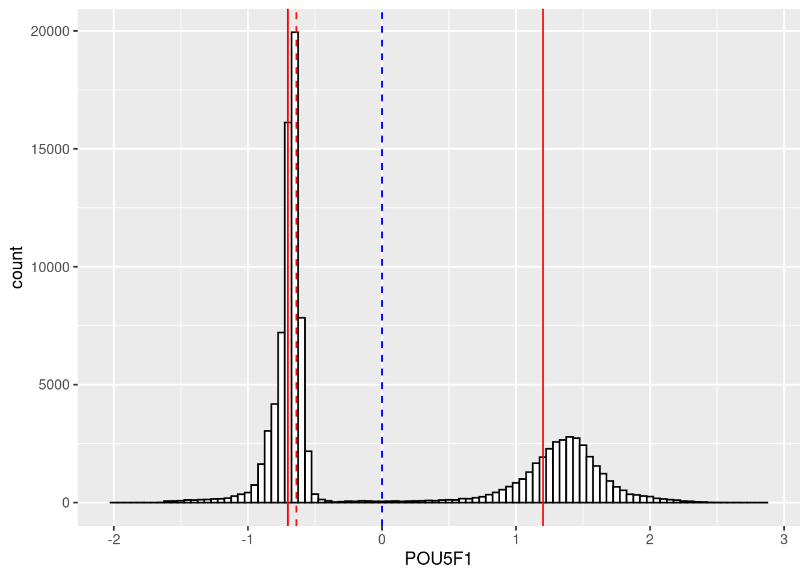
ggplot(tot.genes, aes(x=TDGF1)) +
geom_histogram(binwidth=0.05, color="black", fill="white") +
geom_vline(aes(xintercept=mean(TDGF1)), color="blue", linetype="dashed", size=0.5) +
geom_vline(aes(xintercept=median(TDGF1)), color="red", linetype="dashed", size=0.5) +
geom_vline(aes(xintercept=quantile(TDGF1,prob=0.25)), color="red", linetype="solid", size=0.5) +
geom_vline(aes(xintercept=quantile(TDGF1,prob=0.75)), color="red", linetype="solid", size=0.5)
ggplot(tot.genes, aes(x=SOX2)) +
geom_histogram(binwidth=0.05, color="black", fill="white") +
geom_vline(aes(xintercept=mean(SOX2)), color="blue", linetype="dashed", size=0.5) +
geom_vline(aes(xintercept=median(SOX2)), color="red", linetype="dashed", size=0.5) +
geom_vline(aes(xintercept=quantile(SOX2,prob=0.25)), color="red", linetype="solid", size=0.5) +
geom_vline(aes(xintercept=quantile(SOX2,prob=0.75)), color="red", linetype="solid", size=0.5)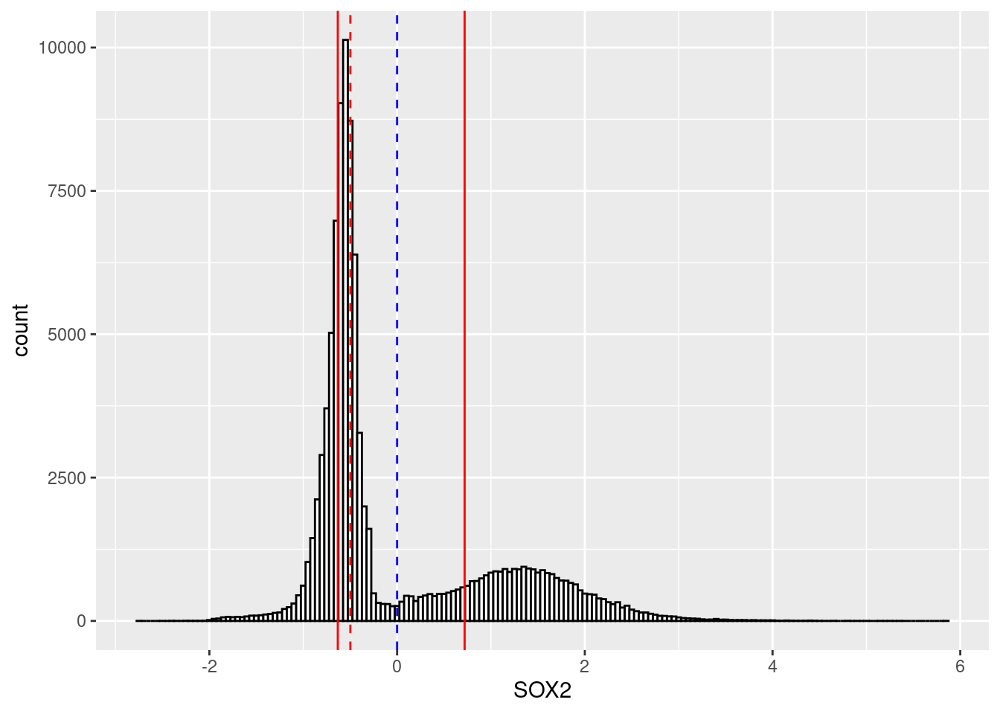
ggplot(tot.genes, aes(x=EPCAM)) +
geom_histogram(binwidth=0.05, color="black", fill="white") +
geom_vline(aes(xintercept=mean(EPCAM)), color="blue", linetype="dashed", size=0.5) +
geom_vline(aes(xintercept=median(EPCAM)), color="red", linetype="dashed", size=0.5) +
geom_vline(aes(xintercept=quantile(EPCAM,prob=0.25)), color="red", linetype="solid", size=0.5) +
geom_vline(aes(xintercept=quantile(EPCAM,prob=0.75)), color="red", linetype="solid", size=0.5)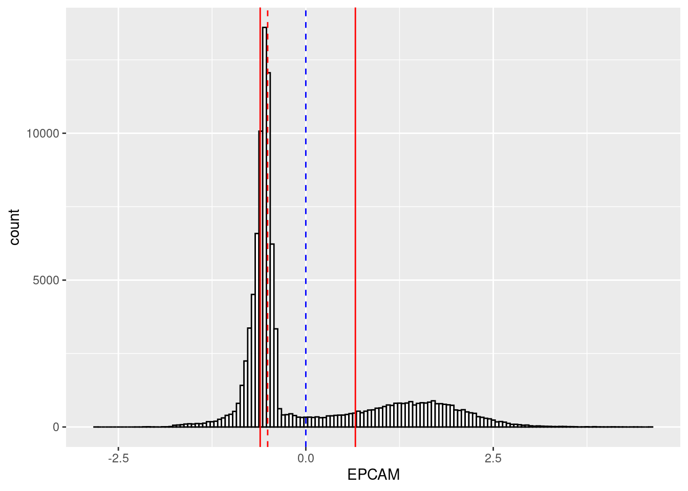
ggplot(tot.genes, aes(x=THY1)) +
geom_histogram(binwidth=0.05, color="black", fill="white") +
geom_vline(aes(xintercept=mean(THY1)), color="blue", linetype="dashed", size=0.5) +
geom_vline(aes(xintercept=median(THY1)), color="red", linetype="dashed", size=0.5) +
geom_vline(aes(xintercept=quantile(THY1,prob=0.25)), color="red", linetype="solid", size=0.5) +
geom_vline(aes(xintercept=quantile(THY1,prob=0.75)), color="red", linetype="solid", size=0.5)
ggplot(tot.genes, aes(x=NT5E)) +
geom_histogram(binwidth=0.05, color="black", fill="white") +
geom_vline(aes(xintercept=mean(NT5E)), color="blue", linetype="dashed", size=0.5) +
geom_vline(aes(xintercept=median(NT5E)), color="red", linetype="dashed", size=0.5) +
geom_vline(aes(xintercept=quantile(NT5E,prob=0.25)), color="red", linetype="solid", size=0.5) +
geom_vline(aes(xintercept=quantile(NT5E,prob=0.75)), color="red", linetype="solid", size=0.5)
ggplot(tot.genes, aes(x=ENG)) +
geom_histogram(binwidth=0.05, color="black", fill="white") +
geom_vline(aes(xintercept=mean(ENG)), color="blue", linetype="dashed", size=0.5) +
geom_vline(aes(xintercept=median(ENG)), color="red", linetype="dashed", size=0.5) +
geom_vline(aes(xintercept=quantile(ENG,prob=0.25)), color="red", linetype="solid", size=0.5) +
geom_vline(aes(xintercept=quantile(ENG,prob=0.75)), color="red", linetype="solid", size=0.5)
ggplot(tot.genes, aes(x=CD44)) +
geom_histogram(binwidth=0.05, color="black", fill="white") +
geom_vline(aes(xintercept=mean(CD44)), color="blue", linetype="dashed", size=0.5) +
geom_vline(aes(xintercept=median(CD44)), color="red", linetype="dashed", size=0.5) +
geom_vline(aes(xintercept=quantile(CD44,prob=0.25)), color="red", linetype="solid", size=0.5) +
geom_vline(aes(xintercept=quantile(CD44,prob=0.75)), color="red", linetype="solid", size=0.5)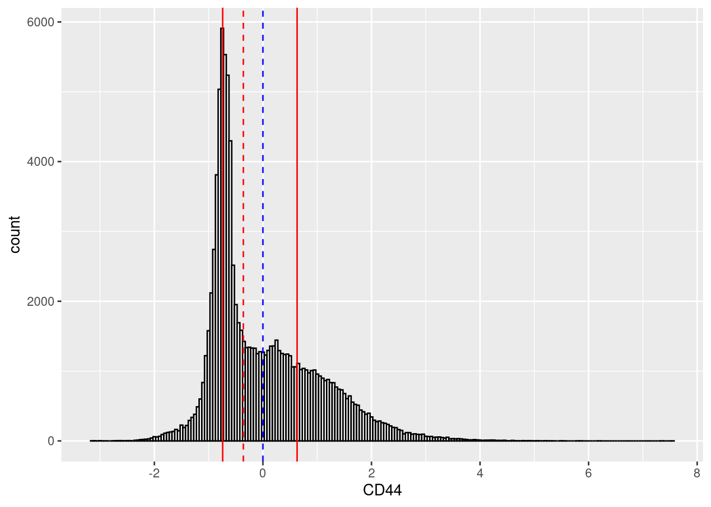
ggplot(tot.genes, aes(x=COL1A1)) +
geom_histogram(binwidth=0.05, color="black", fill="white") +
geom_vline(aes(xintercept=mean(COL1A1)), color="blue", linetype="dashed", size=0.5) +
geom_vline(aes(xintercept=median(COL1A1)), color="red", linetype="dashed", size=0.5) +
geom_vline(aes(xintercept=quantile(COL1A1,prob=0.25)), color="red", linetype="solid", size=0.5) +
geom_vline(aes(xintercept=quantile(COL1A1,prob=0.75)), color="red", linetype="solid", size=0.5)
ggplot(tot.genes, aes(x=COL1A2)) +
geom_histogram(binwidth=0.05, color="black", fill="white") +
geom_vline(aes(xintercept=mean(COL1A2)), color="blue", linetype="dashed", size=0.5) +
geom_vline(aes(xintercept=median(COL1A2)), color="red", linetype="dashed", size=0.5) +
geom_vline(aes(xintercept=quantile(COL1A2,prob=0.25)), color="red", linetype="solid", size=0.5) +
geom_vline(aes(xintercept=quantile(COL1A2,prob=0.75)), color="red", linetype="solid", size=0.5)
ggplot(tot.genes, aes(x=ALPL)) +
geom_histogram(binwidth=0.05, color="black", fill="white") +
geom_vline(aes(xintercept=mean(ALPL)), color="blue", linetype="dashed", size=0.5) +
geom_vline(aes(xintercept=median(ALPL)), color="red", linetype="dashed", size=0.5) +
geom_vline(aes(xintercept=quantile(ALPL,prob=0.25)), color="red", linetype="solid", size=0.5) +
geom_vline(aes(xintercept=quantile(ALPL,prob=0.75)), color="red", linetype="solid", size=0.5)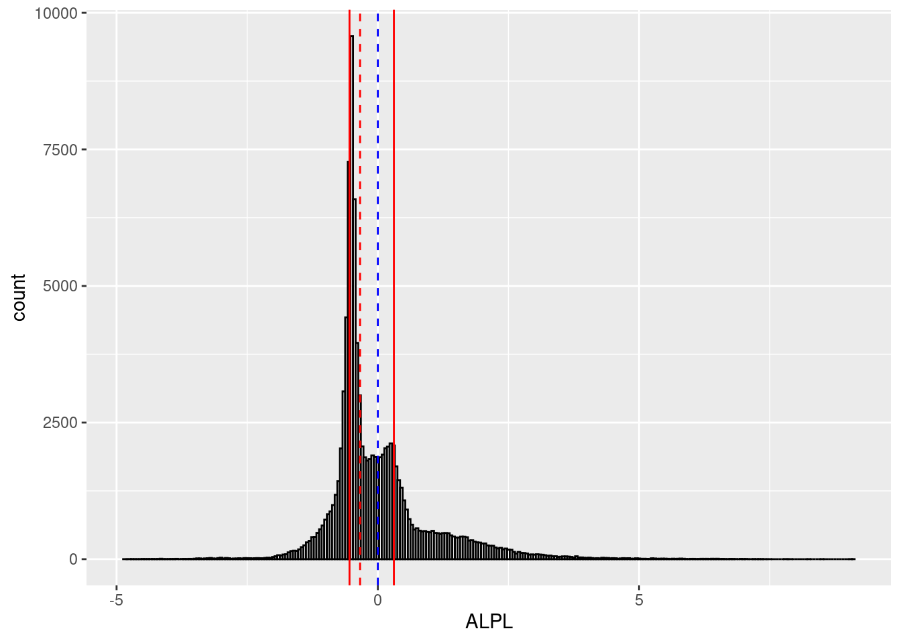
ggplot(tot.genes, aes(x=RUNX2)) +
geom_histogram(binwidth=0.05, color="black", fill="white") +
geom_vline(aes(xintercept=mean(RUNX2)), color="blue", linetype="dashed", size=0.5) +
geom_vline(aes(xintercept=median(RUNX2)), color="red", linetype="dashed", size=0.5) +
geom_vline(aes(xintercept=quantile(RUNX2,prob=0.25)), color="red", linetype="solid", size=0.5) +
geom_vline(aes(xintercept=quantile(RUNX2,prob=0.75)), color="red", linetype="solid", size=0.5)
ggplot(tot.genes, aes(x=BGLAP)) +
geom_histogram(binwidth=0.05, color="black", fill="white") +
geom_vline(aes(xintercept=mean(BGLAP)), color="blue", linetype="dashed", size=0.5) +
geom_vline(aes(xintercept=median(BGLAP)), color="red", linetype="dashed", size=0.5) +
geom_vline(aes(xintercept=quantile(BGLAP,prob=0.25)), color="red", linetype="solid", size=0.5) +
geom_vline(aes(xintercept=quantile(BGLAP,prob=0.75)), color="red", linetype="solid", size=0.5)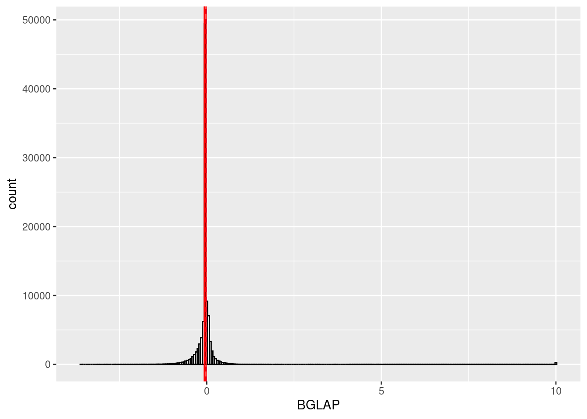
ggplot(tot.genes, aes(x=CAPG)) +
geom_histogram(binwidth=0.05, color="black", fill="white") +
geom_vline(aes(xintercept=mean(CAPG)), color="blue", linetype="dashed", size=0.5) +
geom_vline(aes(xintercept=median(CAPG)), color="red", linetype="dashed", size=0.5) +
geom_vline(aes(xintercept=quantile(CAPG,prob=0.25)), color="red", linetype="solid", size=0.5) +
geom_vline(aes(xintercept=quantile(CAPG,prob=0.75)), color="red", linetype="solid", size=0.5)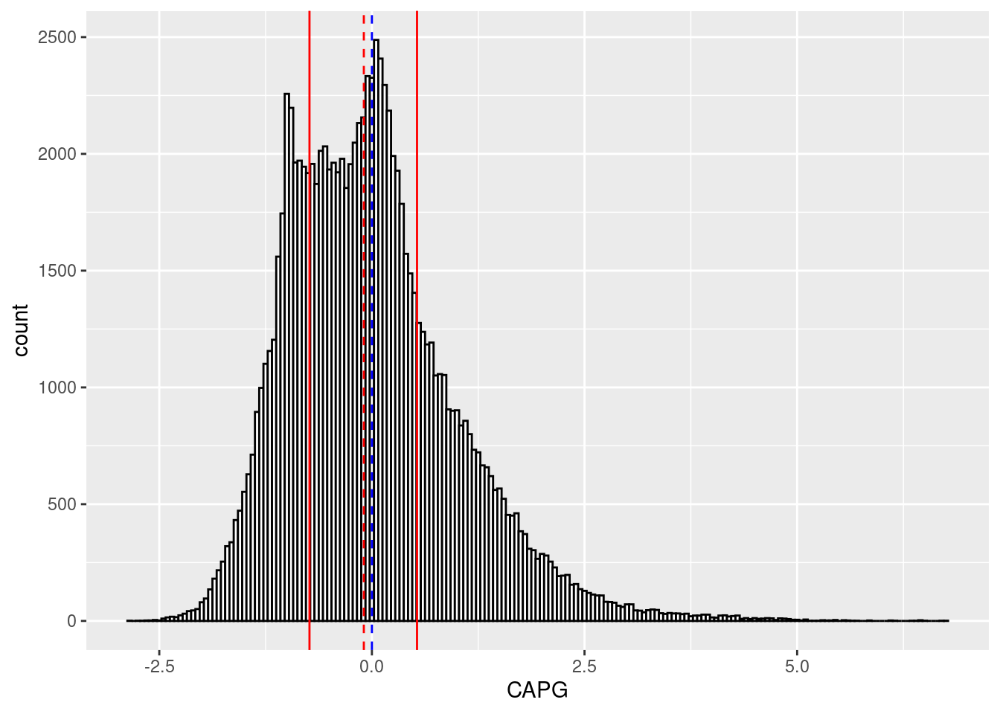
ggplot(tot.genes, aes(x=DMP1)) +
geom_histogram(binwidth=0.05, color="black", fill="white") +
geom_vline(aes(xintercept=mean(DMP1)), color="blue", linetype="dashed", size=0.5) +
geom_vline(aes(xintercept=median(DMP1)), color="red", linetype="dashed", size=0.5) +
geom_vline(aes(xintercept=quantile(DMP1,prob=0.25)), color="red", linetype="solid", size=0.5) +
geom_vline(aes(xintercept=quantile(DMP1,prob=0.75)), color="red", linetype="solid", size=0.5)
ggplot(tot.genes, aes(x=PHEX)) +
geom_histogram(binwidth=0.05, color="black", fill="white") +
geom_vline(aes(xintercept=mean(PHEX)), color="blue", linetype="dashed", size=0.5) +
geom_vline(aes(xintercept=median(PHEX)), color="red", linetype="dashed", size=0.5) +
geom_vline(aes(xintercept=quantile(PHEX,prob=0.25)), color="red", linetype="solid", size=0.5) +
geom_vline(aes(xintercept=quantile(PHEX,prob=0.75)), color="red", linetype="solid", size=0.5)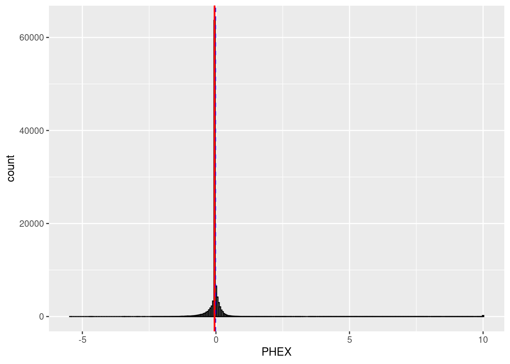
ggplot(tot.genes, aes(x=MEPE)) +
geom_histogram(binwidth=0.05, color="black", fill="white") +
geom_vline(aes(xintercept=mean(MEPE)), color="blue", linetype="dashed", size=0.5) +
geom_vline(aes(xintercept=median(MEPE)), color="red", linetype="dashed", size=0.5) +
geom_vline(aes(xintercept=quantile(MEPE,prob=0.25)), color="red", linetype="solid", size=0.5) +
geom_vline(aes(xintercept=quantile(MEPE,prob=0.75)), color="red", linetype="solid", size=0.5)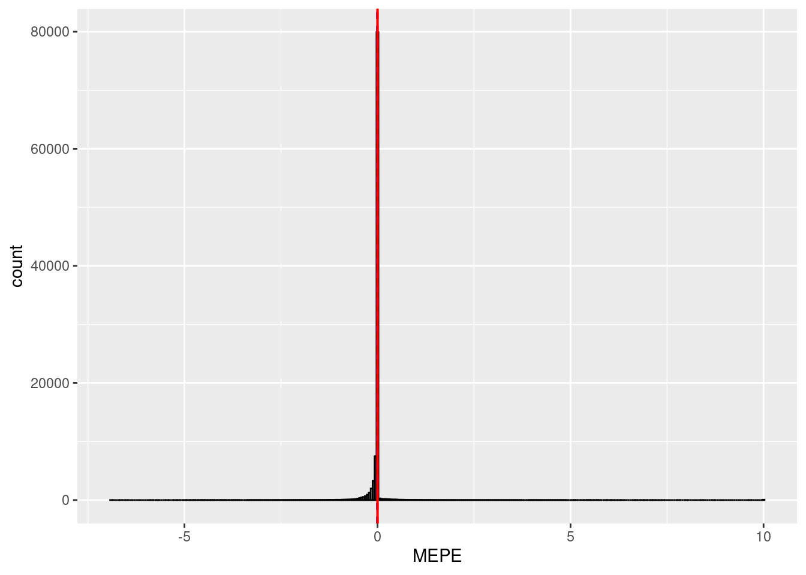
ggplot(tot.genes, aes(x=SOST)) +
geom_histogram(binwidth=0.05, color="black", fill="white") +
geom_vline(aes(xintercept=mean(SOST)), color="blue", linetype="dashed", size=0.5) +
geom_vline(aes(xintercept=median(SOST)), color="red", linetype="dashed", size=0.5) +
geom_vline(aes(xintercept=quantile(SOST,prob=0.25)), color="red", linetype="solid", size=0.5) +
geom_vline(aes(xintercept=quantile(SOST,prob=0.75)), color="red", linetype="solid", size=0.5)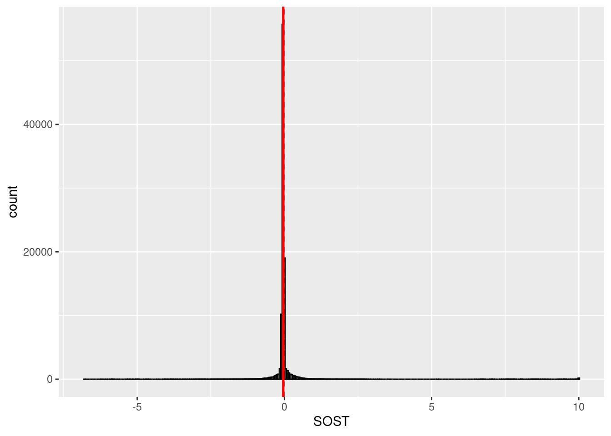
ggplot(tot.genes, aes(x=HYOU1)) +
geom_histogram(binwidth=0.05, color="black", fill="white") +
geom_vline(aes(xintercept=mean(HYOU1)), color="blue", linetype="dashed", size=0.5) +
geom_vline(aes(xintercept=median(HYOU1)), color="red", linetype="dashed", size=0.5) +
geom_vline(aes(xintercept=quantile(HYOU1,prob=0.25)), color="red", linetype="solid", size=0.5) +
geom_vline(aes(xintercept=quantile(HYOU1,prob=0.75)), color="red", linetype="solid", size=0.5)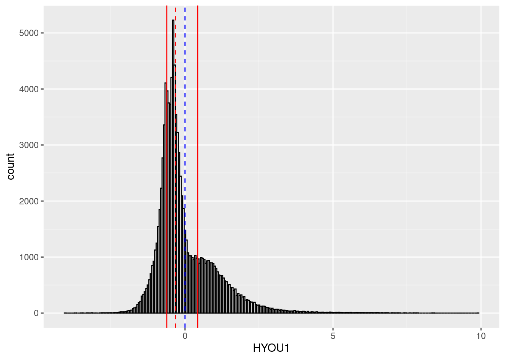
ggplot(tot.genes, aes(x=ACAN)) +
geom_histogram(binwidth=0.05, color="black", fill="white") +
geom_vline(aes(xintercept=mean(ACAN)), color="blue", linetype="dashed", size=0.5) +
geom_vline(aes(xintercept=median(ACAN)), color="red", linetype="dashed", size=0.5) +
geom_vline(aes(xintercept=quantile(ACAN,prob=0.25)), color="red", linetype="solid", size=0.5) +
geom_vline(aes(xintercept=quantile(ACAN,prob=0.75)), color="red", linetype="solid", size=0.5)
ggplot(tot.genes, aes(x=COL2A1)) +
geom_histogram(binwidth=0.05, color="black", fill="white") +
geom_vline(aes(xintercept=mean(COL2A1)), color="blue", linetype="dashed", size=0.5) +
geom_vline(aes(xintercept=median(COL2A1)), color="red", linetype="dashed", size=0.5) +
geom_vline(aes(xintercept=quantile(COL2A1,prob=0.25)), color="red", linetype="solid", size=0.5) +
geom_vline(aes(xintercept=quantile(COL2A1,prob=0.75)), color="red", linetype="solid", size=0.5)
ggplot(tot.genes, aes(x=SOX9)) +
geom_histogram(binwidth=0.05, color="black", fill="white") +
geom_vline(aes(xintercept=mean(SOX9)), color="blue", linetype="dashed", size=0.5) +
geom_vline(aes(xintercept=median(SOX9)), color="red", linetype="dashed", size=0.5) +
geom_vline(aes(xintercept=quantile(SOX9,prob=0.25)), color="red", linetype="solid", size=0.5) +
geom_vline(aes(xintercept=quantile(SOX9,prob=0.75)), color="red", linetype="solid", size=0.5)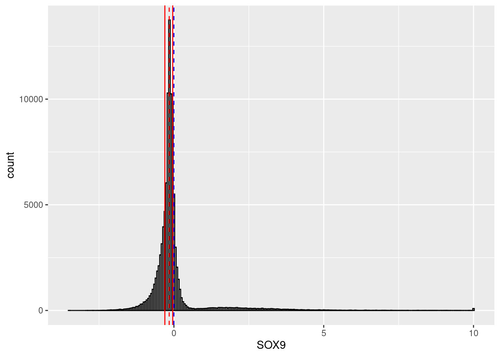
ggplot(tot.genes, aes(x=FABP4)) +
geom_histogram(binwidth=0.05, color="black", fill="white") +
geom_vline(aes(xintercept=mean(FABP4)), color="blue", linetype="dashed", size=0.5) +
geom_vline(aes(xintercept=median(FABP4)), color="red", linetype="dashed", size=0.5) +
geom_vline(aes(xintercept=quantile(FABP4,prob=0.25)), color="red", linetype="solid", size=0.5) +
geom_vline(aes(xintercept=quantile(FABP4,prob=0.75)), color="red", linetype="solid", size=0.5)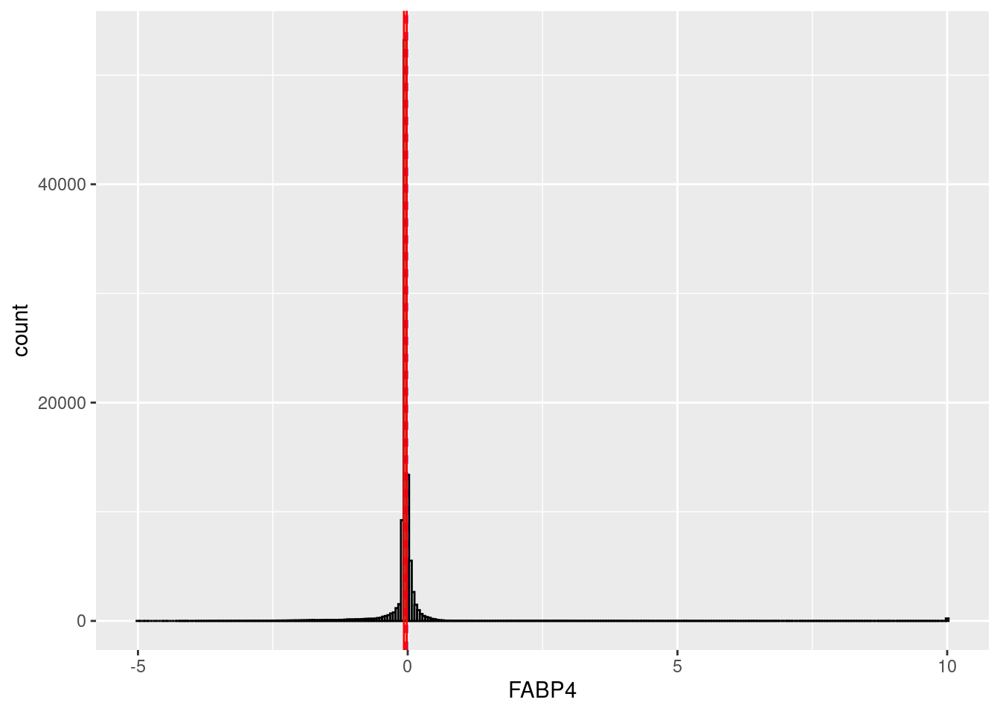
ggplot(tot.genes, aes(x=PPARG)) +
geom_histogram(binwidth=0.05, color="black", fill="white") +
geom_vline(aes(xintercept=mean(PPARG)), color="blue", linetype="dashed", size=0.5) +
geom_vline(aes(xintercept=median(PPARG)), color="red", linetype="dashed", size=0.5) +
geom_vline(aes(xintercept=quantile(PPARG,prob=0.25)), color="red", linetype="solid", size=0.5) +
geom_vline(aes(xintercept=quantile(PPARG,prob=0.75)), color="red", linetype="solid", size=0.5)
ggplot(tot.genes, aes(x=EBF2)) +
geom_histogram(binwidth=0.05, color="black", fill="white") +
geom_vline(aes(xintercept=mean(EBF2)), color="blue", linetype="dashed", size=0.5) +
geom_vline(aes(xintercept=median(EBF2)), color="red", linetype="dashed", size=0.5) +
geom_vline(aes(xintercept=quantile(EBF2,prob=0.25)), color="red", linetype="solid", size=0.5) +
geom_vline(aes(xintercept=quantile(EBF2,prob=0.75)), color="red", linetype="solid", size=0.5)
ggplot(tot.genes, aes(x=TNC)) +
geom_histogram(binwidth=0.05, color="black", fill="white") +
geom_vline(aes(xintercept=mean(TNC)), color="blue", linetype="dashed", size=0.5) +
geom_vline(aes(xintercept=median(TNC)), color="red", linetype="dashed", size=0.5) +
geom_vline(aes(xintercept=quantile(TNC,prob=0.25)), color="red", linetype="solid", size=0.5) +
geom_vline(aes(xintercept=quantile(TNC,prob=0.75)), color="red", linetype="solid", size=0.5)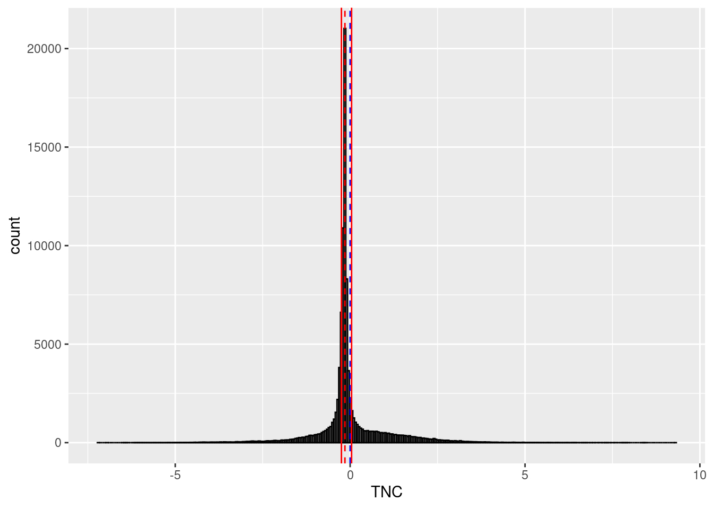
ggplot(tot.genes, aes(x=PDPN)) +
geom_histogram(binwidth=0.05, color="black", fill="white") +
geom_vline(aes(xintercept=mean(PDPN)), color="blue", linetype="dashed", size=0.5) +
geom_vline(aes(xintercept=median(PDPN)), color="red", linetype="dashed", size=0.5) +
geom_vline(aes(xintercept=quantile(PDPN,prob=0.25)), color="red", linetype="solid", size=0.5) +
geom_vline(aes(xintercept=quantile(PDPN,prob=0.75)), color="red", linetype="solid", size=0.5)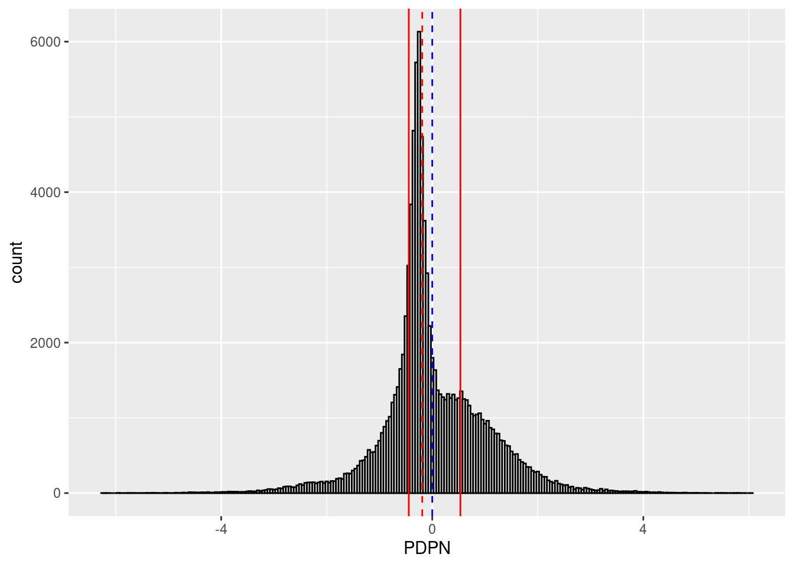
ggplot(tot.genes, aes(x=FBLN7)) +
geom_histogram(binwidth=0.05, color="black", fill="white") +
geom_vline(aes(xintercept=mean(FBLN7)), color="blue", linetype="dashed", size=0.5) +
geom_vline(aes(xintercept=median(FBLN7)), color="red", linetype="dashed", size=0.5) +
geom_vline(aes(xintercept=quantile(FBLN7,prob=0.25)), color="red", linetype="solid", size=0.5) +
geom_vline(aes(xintercept=quantile(FBLN7,prob=0.75)), color="red", linetype="solid", size=0.5)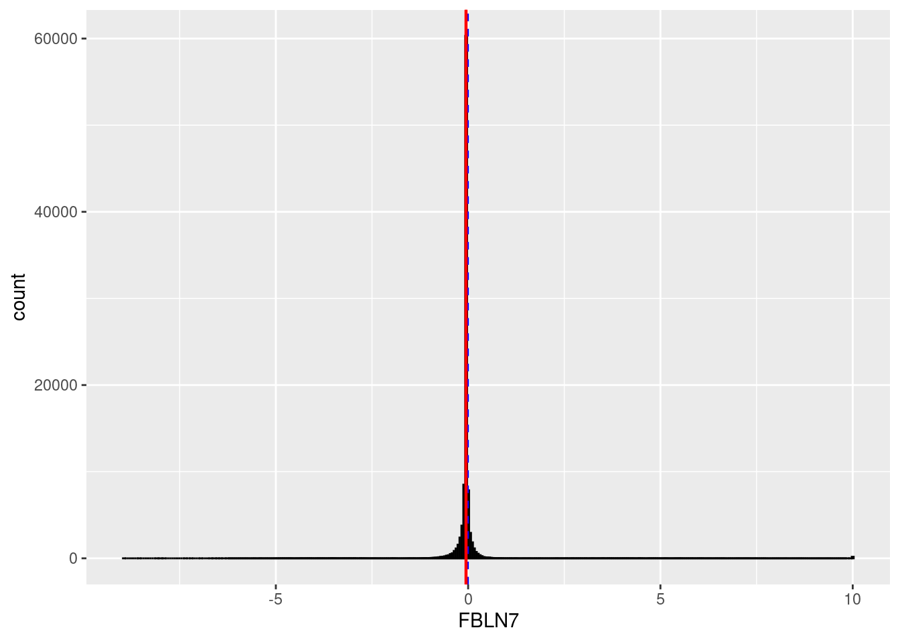
Log normalized data
#Log normalized data
ggplot(l.tot.genes, aes(x=POU5F1)) +
geom_histogram(binwidth=0.05, color="black", fill="white") +
geom_vline(aes(xintercept=mean(POU5F1)), color="blue", linetype="dashed", size=0.5) +
geom_vline(aes(xintercept=median(POU5F1)), color="red", linetype="dashed", size=0.5) +
geom_vline(aes(xintercept=quantile(POU5F1,prob=0.25)), color="red", linetype="solid", size=0.5) +
geom_vline(aes(xintercept=quantile(POU5F1,prob=0.75)), color="red", linetype="solid", size=0.5)
ggplot(l.tot.genes, aes(x=TDGF1)) +
geom_histogram(binwidth=0.05, color="black", fill="white") +
geom_vline(aes(xintercept=mean(TDGF1)), color="blue", linetype="dashed", size=0.5) +
geom_vline(aes(xintercept=median(TDGF1)), color="red", linetype="dashed", size=0.5) +
geom_vline(aes(xintercept=quantile(TDGF1,prob=0.25)), color="red", linetype="solid", size=0.5) +
geom_vline(aes(xintercept=quantile(TDGF1,prob=0.75)), color="red", linetype="solid", size=0.5)
ggplot(l.tot.genes, aes(x=SOX2)) +
geom_histogram(binwidth=0.05, color="black", fill="white") +
geom_vline(aes(xintercept=mean(SOX2)), color="blue", linetype="dashed", size=0.5) +
geom_vline(aes(xintercept=median(SOX2)), color="red", linetype="dashed", size=0.5) +
geom_vline(aes(xintercept=quantile(SOX2,prob=0.25)), color="red", linetype="solid", size=0.5) +
geom_vline(aes(xintercept=quantile(SOX2,prob=0.75)), color="red", linetype="solid", size=0.5)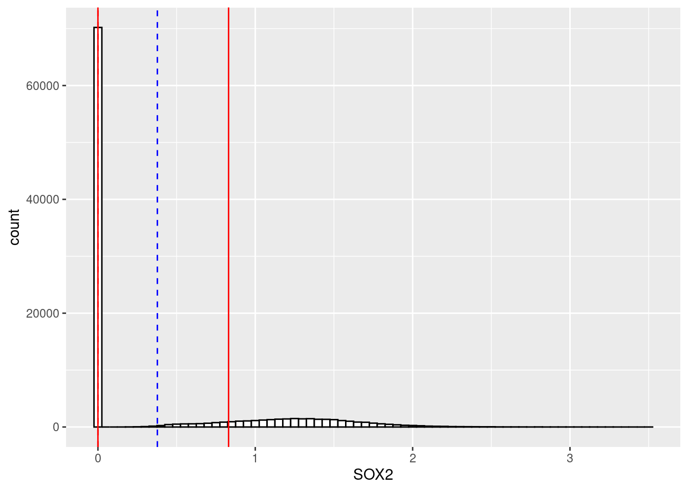
ggplot(l.tot.genes, aes(x=EPCAM)) +
geom_histogram(binwidth=0.05, color="black", fill="white") +
geom_vline(aes(xintercept=mean(EPCAM)), color="blue", linetype="dashed", size=0.5) +
geom_vline(aes(xintercept=median(EPCAM)), color="red", linetype="dashed", size=0.5) +
geom_vline(aes(xintercept=quantile(EPCAM,prob=0.25)), color="red", linetype="solid", size=0.5) +
geom_vline(aes(xintercept=quantile(EPCAM,prob=0.75)), color="red", linetype="solid", size=0.5)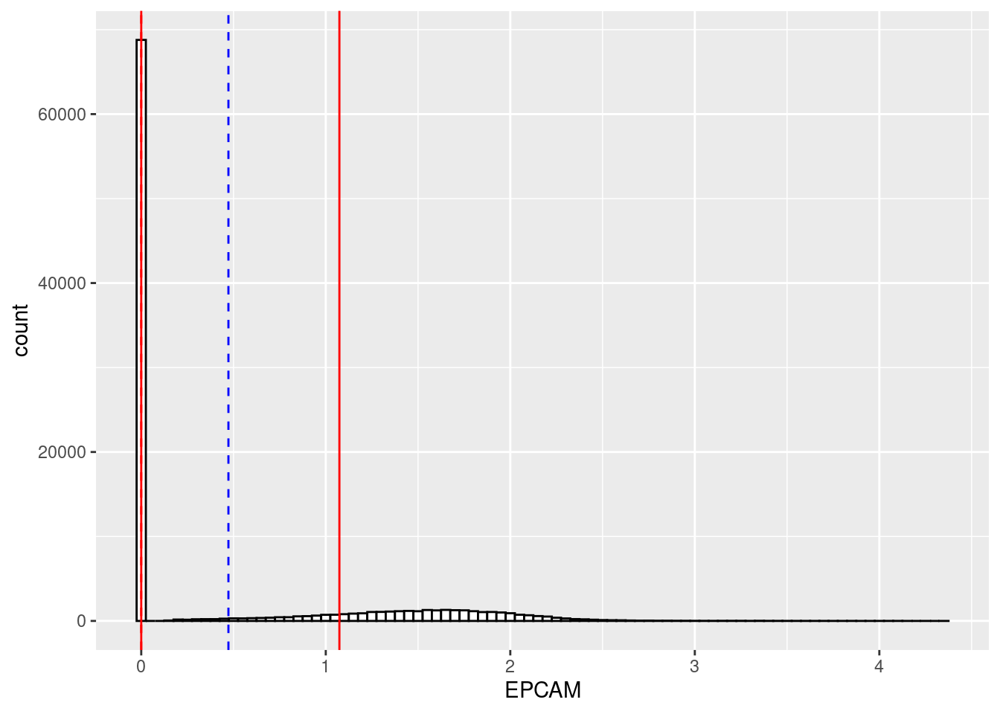
ggplot(l.tot.genes, aes(x=THY1)) +
geom_histogram(binwidth=0.05, color="black", fill="white") +
geom_vline(aes(xintercept=mean(THY1)), color="blue", linetype="dashed", size=0.5) +
geom_vline(aes(xintercept=median(THY1)), color="red", linetype="dashed", size=0.5) +
geom_vline(aes(xintercept=quantile(THY1,prob=0.25)), color="red", linetype="solid", size=0.5) +
geom_vline(aes(xintercept=quantile(THY1,prob=0.75)), color="red", linetype="solid", size=0.5)
ggplot(l.tot.genes, aes(x=NT5E)) +
geom_histogram(binwidth=0.05, color="black", fill="white") +
geom_vline(aes(xintercept=mean(NT5E)), color="blue", linetype="dashed", size=0.5) +
geom_vline(aes(xintercept=median(NT5E)), color="red", linetype="dashed", size=0.5) +
geom_vline(aes(xintercept=quantile(NT5E,prob=0.25)), color="red", linetype="solid", size=0.5) +
geom_vline(aes(xintercept=quantile(NT5E,prob=0.75)), color="red", linetype="solid", size=0.5)
ggplot(l.tot.genes, aes(x=ENG)) +
geom_histogram(binwidth=0.05, color="black", fill="white") +
geom_vline(aes(xintercept=mean(ENG)), color="blue", linetype="dashed", size=0.5) +
geom_vline(aes(xintercept=median(ENG)), color="red", linetype="dashed", size=0.5) +
geom_vline(aes(xintercept=quantile(ENG,prob=0.25)), color="red", linetype="solid", size=0.5) +
geom_vline(aes(xintercept=quantile(ENG,prob=0.75)), color="red", linetype="solid", size=0.5)
ggplot(l.tot.genes, aes(x=CD44)) +
geom_histogram(binwidth=0.05, color="black", fill="white") +
geom_vline(aes(xintercept=mean(CD44)), color="blue", linetype="dashed", size=0.5) +
geom_vline(aes(xintercept=median(CD44)), color="red", linetype="dashed", size=0.5) +
geom_vline(aes(xintercept=quantile(CD44,prob=0.25)), color="red", linetype="solid", size=0.5) +
geom_vline(aes(xintercept=quantile(CD44,prob=0.75)), color="red", linetype="solid", size=0.5)
ggplot(l.tot.genes, aes(x=COL1A1)) +
geom_histogram(binwidth=0.05, color="black", fill="white") +
geom_vline(aes(xintercept=mean(COL1A1)), color="blue", linetype="dashed", size=0.5) +
geom_vline(aes(xintercept=median(COL1A1)), color="red", linetype="dashed", size=0.5) +
geom_vline(aes(xintercept=quantile(COL1A1,prob=0.25)), color="red", linetype="solid", size=0.5) +
geom_vline(aes(xintercept=quantile(COL1A1,prob=0.75)), color="red", linetype="solid", size=0.5)
ggplot(l.tot.genes, aes(x=COL1A2)) +
geom_histogram(binwidth=0.05, color="black", fill="white") +
geom_vline(aes(xintercept=mean(COL1A2)), color="blue", linetype="dashed", size=0.5) +
geom_vline(aes(xintercept=median(COL1A2)), color="red", linetype="dashed", size=0.5) +
geom_vline(aes(xintercept=quantile(COL1A2,prob=0.25)), color="red", linetype="solid", size=0.5) +
geom_vline(aes(xintercept=quantile(COL1A2,prob=0.75)), color="red", linetype="solid", size=0.5)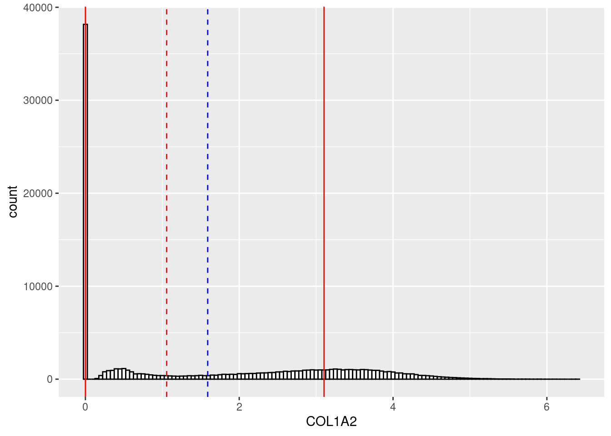
ggplot(l.tot.genes, aes(x=ALPL)) +
geom_histogram(binwidth=0.05, color="black", fill="white") +
geom_vline(aes(xintercept=mean(ALPL)), color="blue", linetype="dashed", size=0.5) +
geom_vline(aes(xintercept=median(ALPL)), color="red", linetype="dashed", size=0.5) +
geom_vline(aes(xintercept=quantile(ALPL,prob=0.25)), color="red", linetype="solid", size=0.5) +
geom_vline(aes(xintercept=quantile(ALPL,prob=0.75)), color="red", linetype="solid", size=0.5)
ggplot(l.tot.genes, aes(x=RUNX2)) +
geom_histogram(binwidth=0.05, color="black", fill="white") +
geom_vline(aes(xintercept=mean(RUNX2)), color="blue", linetype="dashed", size=0.5) +
geom_vline(aes(xintercept=median(RUNX2)), color="red", linetype="dashed", size=0.5) +
geom_vline(aes(xintercept=quantile(RUNX2,prob=0.25)), color="red", linetype="solid", size=0.5) +
geom_vline(aes(xintercept=quantile(RUNX2,prob=0.75)), color="red", linetype="solid", size=0.5)
ggplot(l.tot.genes, aes(x=BGLAP)) +
geom_histogram(binwidth=0.05, color="black", fill="white") +
geom_vline(aes(xintercept=mean(BGLAP)), color="blue", linetype="dashed", size=0.5) +
geom_vline(aes(xintercept=median(BGLAP)), color="red", linetype="dashed", size=0.5) +
geom_vline(aes(xintercept=quantile(BGLAP,prob=0.25)), color="red", linetype="solid", size=0.5) +
geom_vline(aes(xintercept=quantile(BGLAP,prob=0.75)), color="red", linetype="solid", size=0.5)
ggplot(l.tot.genes, aes(x=CAPG)) +
geom_histogram(binwidth=0.05, color="black", fill="white") +
geom_vline(aes(xintercept=mean(CAPG)), color="blue", linetype="dashed", size=0.5) +
geom_vline(aes(xintercept=median(CAPG)), color="red", linetype="dashed", size=0.5) +
geom_vline(aes(xintercept=quantile(CAPG,prob=0.25)), color="red", linetype="solid", size=0.5) +
geom_vline(aes(xintercept=quantile(CAPG,prob=0.75)), color="red", linetype="solid", size=0.5)
ggplot(l.tot.genes, aes(x=DMP1)) +
geom_histogram(binwidth=0.05, color="black", fill="white") +
geom_vline(aes(xintercept=mean(DMP1)), color="blue", linetype="dashed", size=0.5) +
geom_vline(aes(xintercept=median(DMP1)), color="red", linetype="dashed", size=0.5) +
geom_vline(aes(xintercept=quantile(DMP1,prob=0.25)), color="red", linetype="solid", size=0.5) +
geom_vline(aes(xintercept=quantile(DMP1,prob=0.75)), color="red", linetype="solid", size=0.5)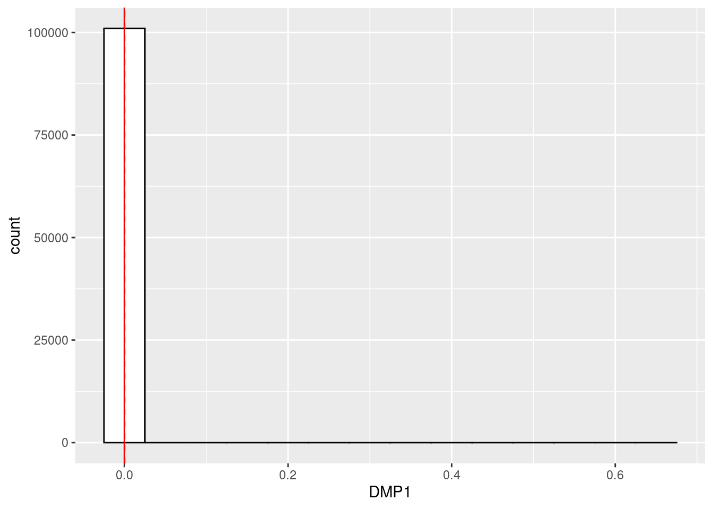
ggplot(l.tot.genes, aes(x=PHEX)) +
geom_histogram(binwidth=0.05, color="black", fill="white") +
geom_vline(aes(xintercept=mean(PHEX)), color="blue", linetype="dashed", size=0.5) +
geom_vline(aes(xintercept=median(PHEX)), color="red", linetype="dashed", size=0.5) +
geom_vline(aes(xintercept=quantile(PHEX,prob=0.25)), color="red", linetype="solid", size=0.5) +
geom_vline(aes(xintercept=quantile(PHEX,prob=0.75)), color="red", linetype="solid", size=0.5)
ggplot(l.tot.genes, aes(x=MEPE)) +
geom_histogram(binwidth=0.05, color="black", fill="white") +
geom_vline(aes(xintercept=mean(MEPE)), color="blue", linetype="dashed", size=0.5) +
geom_vline(aes(xintercept=median(MEPE)), color="red", linetype="dashed", size=0.5) +
geom_vline(aes(xintercept=quantile(MEPE,prob=0.25)), color="red", linetype="solid", size=0.5) +
geom_vline(aes(xintercept=quantile(MEPE,prob=0.75)), color="red", linetype="solid", size=0.5)
ggplot(l.tot.genes, aes(x=SOST)) +
geom_histogram(binwidth=0.05, color="black", fill="white") +
geom_vline(aes(xintercept=mean(SOST)), color="blue", linetype="dashed", size=0.5) +
geom_vline(aes(xintercept=median(SOST)), color="red", linetype="dashed", size=0.5) +
geom_vline(aes(xintercept=quantile(SOST,prob=0.25)), color="red", linetype="solid", size=0.5) +
geom_vline(aes(xintercept=quantile(SOST,prob=0.75)), color="red", linetype="solid", size=0.5)
ggplot(l.tot.genes, aes(x=HYOU1)) +
geom_histogram(binwidth=0.05, color="black", fill="white") +
geom_vline(aes(xintercept=mean(HYOU1)), color="blue", linetype="dashed", size=0.5) +
geom_vline(aes(xintercept=median(HYOU1)), color="red", linetype="dashed", size=0.5) +
geom_vline(aes(xintercept=quantile(HYOU1,prob=0.25)), color="red", linetype="solid", size=0.5) +
geom_vline(aes(xintercept=quantile(HYOU1,prob=0.75)), color="red", linetype="solid", size=0.5)
ggplot(l.tot.genes, aes(x=ACAN)) +
geom_histogram(binwidth=0.05, color="black", fill="white") +
geom_vline(aes(xintercept=mean(ACAN)), color="blue", linetype="dashed", size=0.5) +
geom_vline(aes(xintercept=median(ACAN)), color="red", linetype="dashed", size=0.5) +
geom_vline(aes(xintercept=quantile(ACAN,prob=0.25)), color="red", linetype="solid", size=0.5) +
geom_vline(aes(xintercept=quantile(ACAN,prob=0.75)), color="red", linetype="solid", size=0.5)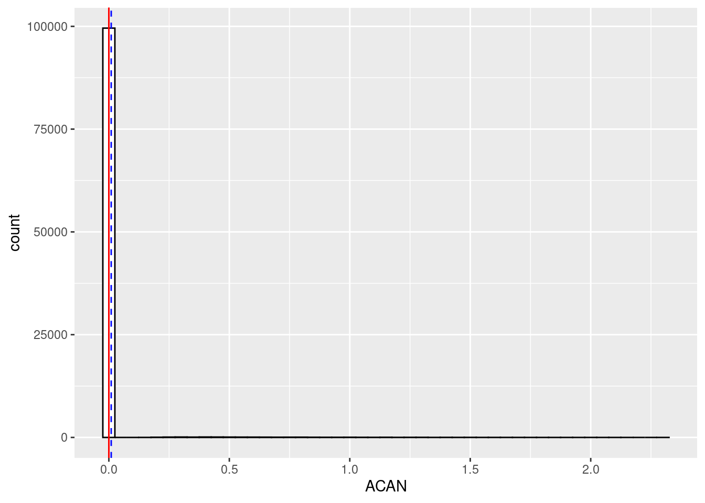
ggplot(l.tot.genes, aes(x=COL2A1)) +
geom_histogram(binwidth=0.05, color="black", fill="white") +
geom_vline(aes(xintercept=mean(COL2A1)), color="blue", linetype="dashed", size=0.5) +
geom_vline(aes(xintercept=median(COL2A1)), color="red", linetype="dashed", size=0.5) +
geom_vline(aes(xintercept=quantile(COL2A1,prob=0.25)), color="red", linetype="solid", size=0.5) +
geom_vline(aes(xintercept=quantile(COL2A1,prob=0.75)), color="red", linetype="solid", size=0.5)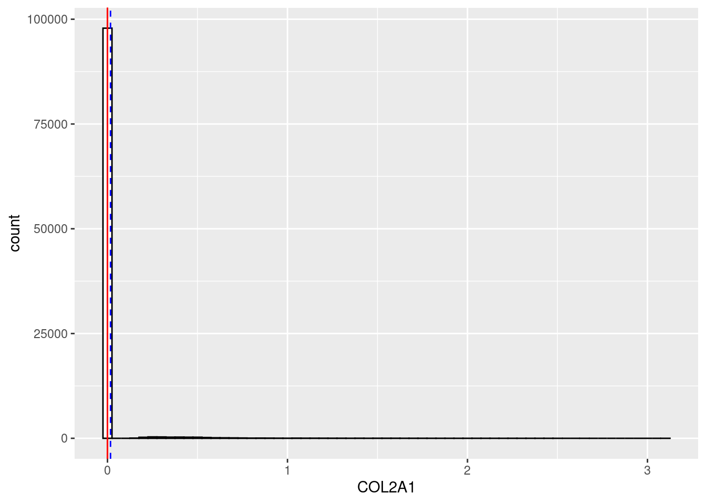
ggplot(l.tot.genes, aes(x=SOX9)) +
geom_histogram(binwidth=0.05, color="black", fill="white") +
geom_vline(aes(xintercept=mean(SOX9)), color="blue", linetype="dashed", size=0.5) +
geom_vline(aes(xintercept=median(SOX9)), color="red", linetype="dashed", size=0.5) +
geom_vline(aes(xintercept=quantile(SOX9,prob=0.25)), color="red", linetype="solid", size=0.5) +
geom_vline(aes(xintercept=quantile(SOX9,prob=0.75)), color="red", linetype="solid", size=0.5)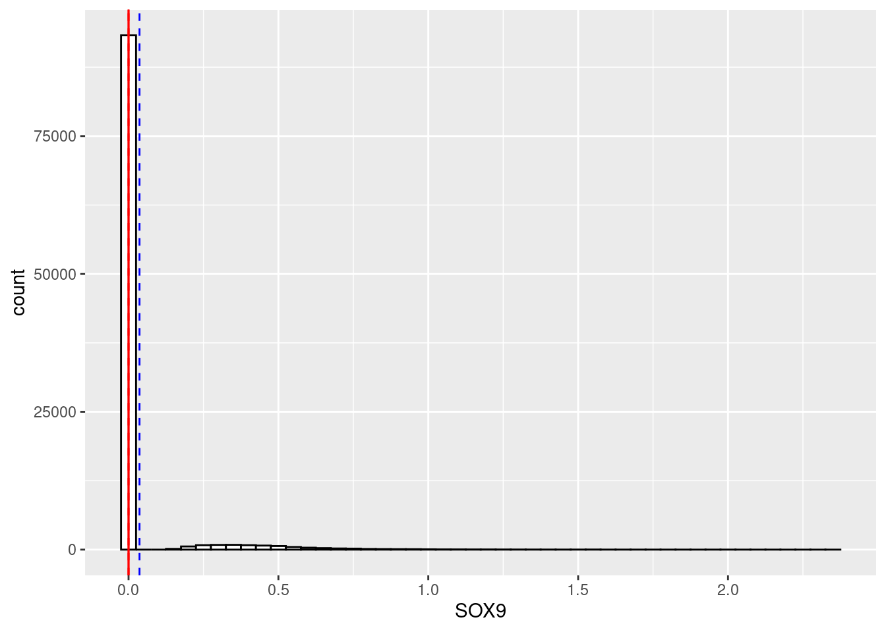
ggplot(l.tot.genes, aes(x=FABP4)) +
geom_histogram(binwidth=0.05, color="black", fill="white") +
geom_vline(aes(xintercept=mean(FABP4)), color="blue", linetype="dashed", size=0.5) +
geom_vline(aes(xintercept=median(FABP4)), color="red", linetype="dashed", size=0.5) +
geom_vline(aes(xintercept=quantile(FABP4,prob=0.25)), color="red", linetype="solid", size=0.5) +
geom_vline(aes(xintercept=quantile(FABP4,prob=0.75)), color="red", linetype="solid", size=0.5)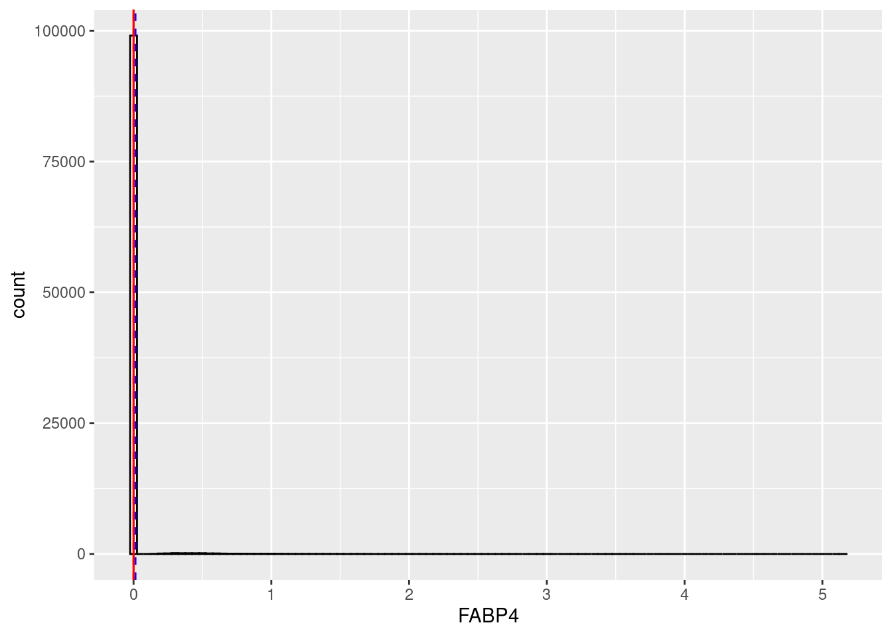
ggplot(l.tot.genes, aes(x=PPARG)) +
geom_histogram(binwidth=0.05, color="black", fill="white") +
geom_vline(aes(xintercept=mean(PPARG)), color="blue", linetype="dashed", size=0.5) +
geom_vline(aes(xintercept=median(PPARG)), color="red", linetype="dashed", size=0.5) +
geom_vline(aes(xintercept=quantile(PPARG,prob=0.25)), color="red", linetype="solid", size=0.5) +
geom_vline(aes(xintercept=quantile(PPARG,prob=0.75)), color="red", linetype="solid", size=0.5)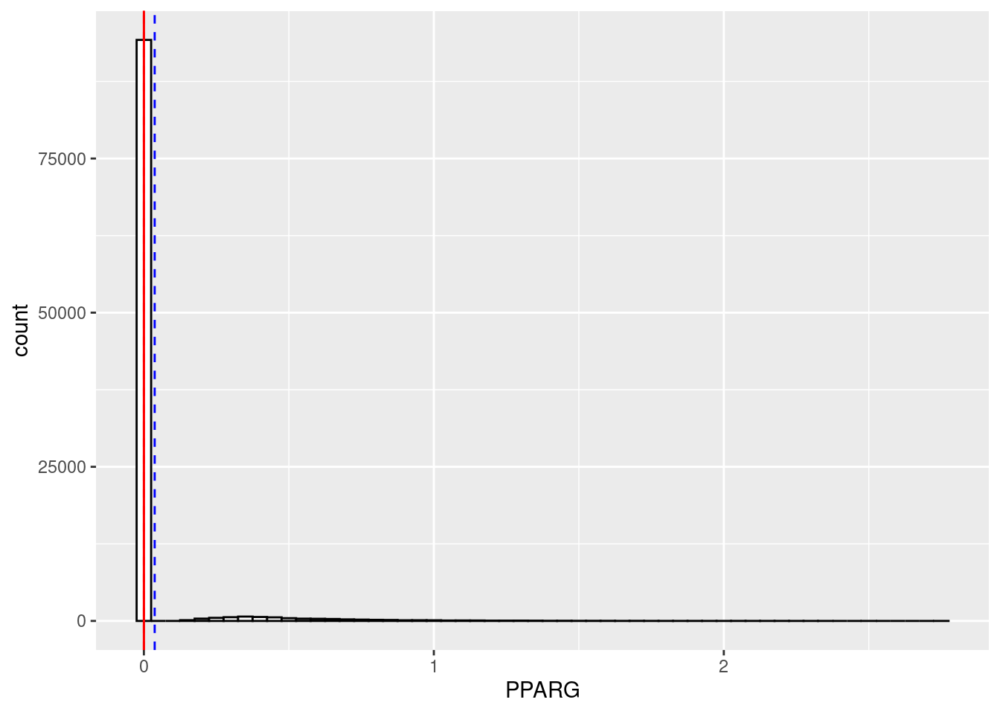
ggplot(l.tot.genes, aes(x=EBF2)) +
geom_histogram(binwidth=0.05, color="black", fill="white") +
geom_vline(aes(xintercept=mean(EBF2)), color="blue", linetype="dashed", size=0.5) +
geom_vline(aes(xintercept=median(EBF2)), color="red", linetype="dashed", size=0.5) +
geom_vline(aes(xintercept=quantile(EBF2,prob=0.25)), color="red", linetype="solid", size=0.5) +
geom_vline(aes(xintercept=quantile(EBF2,prob=0.75)), color="red", linetype="solid", size=0.5)ggplot(l.tot.genes, aes(x=TNC)) +
geom_histogram(binwidth=0.05, color="black", fill="white") +
geom_vline(aes(xintercept=mean(TNC)), color="blue", linetype="dashed", size=0.5) +
geom_vline(aes(xintercept=median(TNC)), color="red", linetype="dashed", size=0.5) +
geom_vline(aes(xintercept=quantile(TNC,prob=0.25)), color="red", linetype="solid", size=0.5) +
geom_vline(aes(xintercept=quantile(TNC,prob=0.75)), color="red", linetype="solid", size=0.5)
ggplot(l.tot.genes, aes(x=PDPN)) +
geom_histogram(binwidth=0.05, color="black", fill="white") +
geom_vline(aes(xintercept=mean(PDPN)), color="blue", linetype="dashed", size=0.5) +
geom_vline(aes(xintercept=median(PDPN)), color="red", linetype="dashed", size=0.5) +
geom_vline(aes(xintercept=quantile(PDPN,prob=0.25)), color="red", linetype="solid", size=0.5) +
geom_vline(aes(xintercept=quantile(PDPN,prob=0.75)), color="red", linetype="solid", size=0.5)
ggplot(l.tot.genes, aes(x=FBLN7)) +
geom_histogram(binwidth=0.05, color="black", fill="white") +
geom_vline(aes(xintercept=mean(FBLN7)), color="blue", linetype="dashed", size=0.5) +
geom_vline(aes(xintercept=median(FBLN7)), color="red", linetype="dashed", size=0.5) +
geom_vline(aes(xintercept=quantile(FBLN7,prob=0.25)), color="red", linetype="solid", size=0.5) +
geom_vline(aes(xintercept=quantile(FBLN7,prob=0.75)), color="red", linetype="solid", size=0.5)
Rescaled integrated gene expression data to range from 0 to 1
#Rescaled integrated gene expression data to range from 0 to 1
ggplot(z.tot.genes, aes(x=POU5F1)) +
geom_histogram(binwidth=0.05, color="black", fill="white") +
geom_vline(aes(xintercept=mean(POU5F1)), color="blue", linetype="dashed", size=0.5) +
geom_vline(aes(xintercept=median(POU5F1)), color="red", linetype="dashed", size=0.5) +
geom_vline(aes(xintercept=quantile(POU5F1,prob=0.25)), color="red", linetype="solid", size=0.5) +
geom_vline(aes(xintercept=quantile(POU5F1,prob=0.75)), color="red", linetype="solid", size=0.5)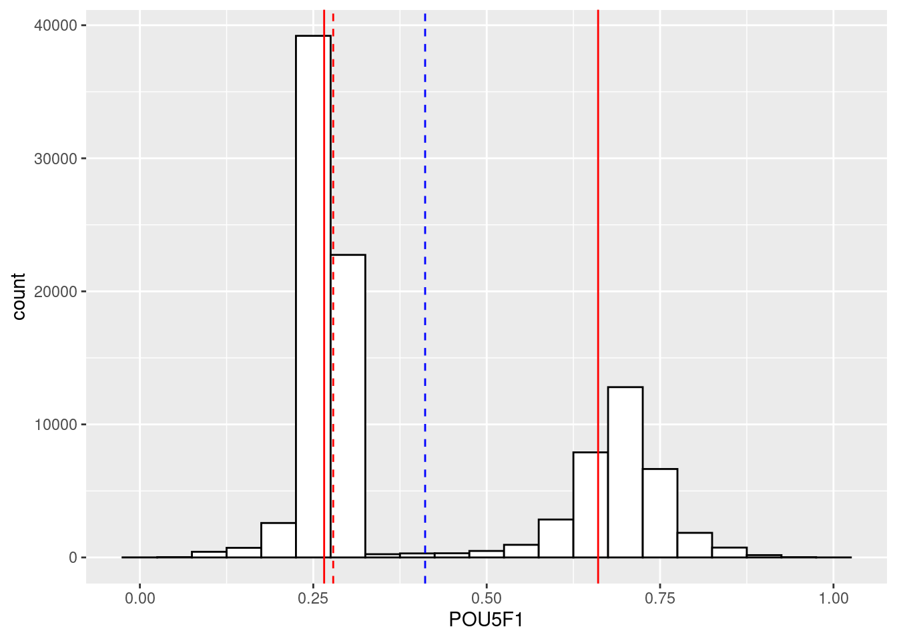
ggplot(z.tot.genes, aes(x=TDGF1)) +
geom_histogram(binwidth=0.05, color="black", fill="white") +
geom_vline(aes(xintercept=mean(TDGF1)), color="blue", linetype="dashed", size=0.5) +
geom_vline(aes(xintercept=median(TDGF1)), color="red", linetype="dashed", size=0.5) +
geom_vline(aes(xintercept=quantile(TDGF1,prob=0.25)), color="red", linetype="solid", size=0.5) +
geom_vline(aes(xintercept=quantile(TDGF1,prob=0.75)), color="red", linetype="solid", size=0.5)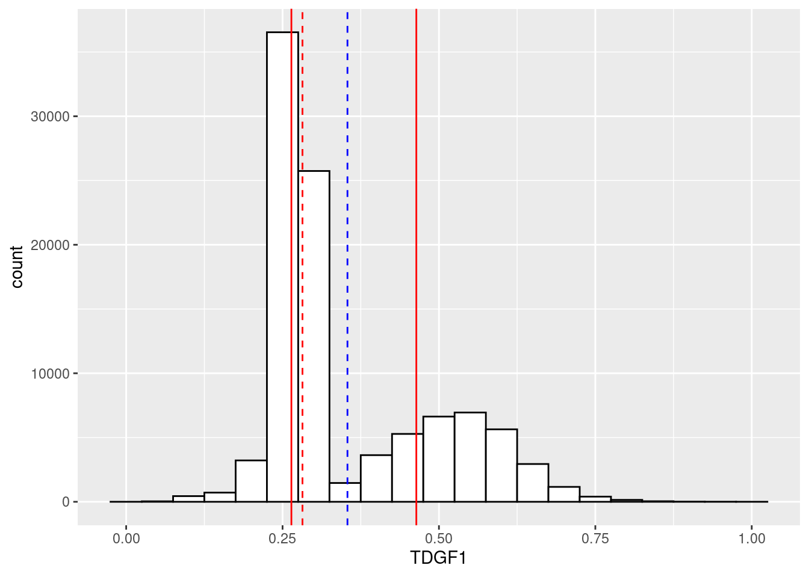
ggplot(z.tot.genes, aes(x=SOX2)) +
geom_histogram(binwidth=0.05, color="black", fill="white") +
geom_vline(aes(xintercept=mean(SOX2)), color="blue", linetype="dashed", size=0.5) +
geom_vline(aes(xintercept=median(SOX2)), color="red", linetype="dashed", size=0.5) +
geom_vline(aes(xintercept=quantile(SOX2,prob=0.25)), color="red", linetype="solid", size=0.5) +
geom_vline(aes(xintercept=quantile(SOX2,prob=0.75)), color="red", linetype="solid", size=0.5)
ggplot(z.tot.genes, aes(x=EPCAM)) +
geom_histogram(binwidth=0.05, color="black", fill="white") +
geom_vline(aes(xintercept=mean(EPCAM)), color="blue", linetype="dashed", size=0.5) +
geom_vline(aes(xintercept=median(EPCAM)), color="red", linetype="dashed", size=0.5) +
geom_vline(aes(xintercept=quantile(EPCAM,prob=0.25)), color="red", linetype="solid", size=0.5) +
geom_vline(aes(xintercept=quantile(EPCAM,prob=0.75)), color="red", linetype="solid", size=0.5)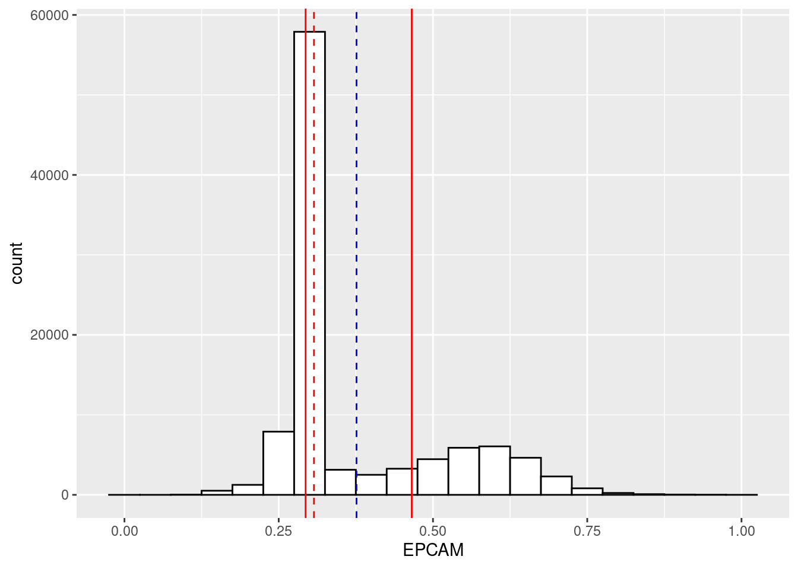
ggplot(z.tot.genes, aes(x=THY1)) +
geom_histogram(binwidth=0.05, color="black", fill="white") +
geom_vline(aes(xintercept=mean(THY1)), color="blue", linetype="dashed", size=0.5) +
geom_vline(aes(xintercept=median(THY1)), color="red", linetype="dashed", size=0.5) +
geom_vline(aes(xintercept=quantile(THY1,prob=0.25)), color="red", linetype="solid", size=0.5) +
geom_vline(aes(xintercept=quantile(THY1,prob=0.75)), color="red", linetype="solid", size=0.5)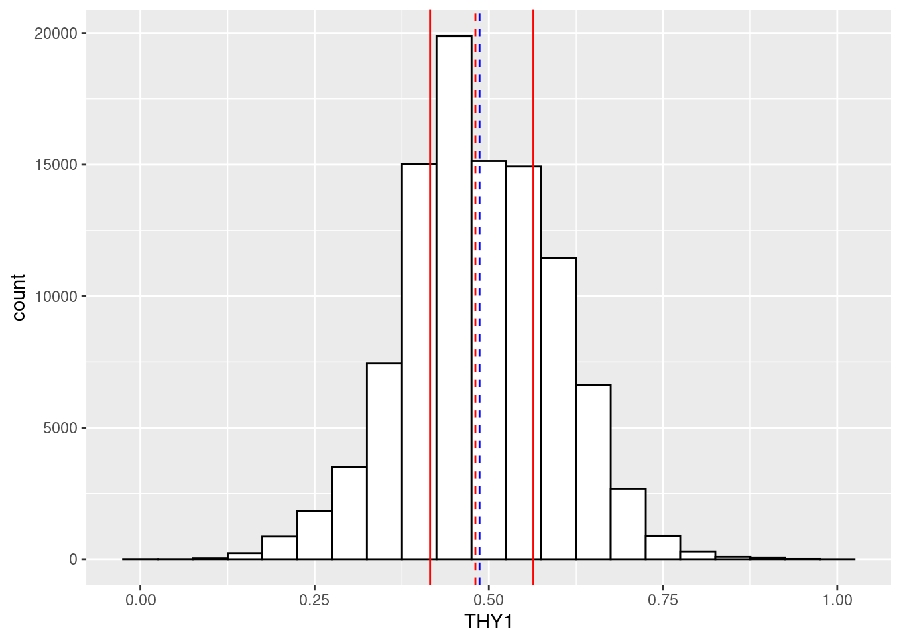
ggplot(z.tot.genes, aes(x=NT5E)) +
geom_histogram(binwidth=0.05, color="black", fill="white") +
geom_vline(aes(xintercept=mean(NT5E)), color="blue", linetype="dashed", size=0.5) +
geom_vline(aes(xintercept=median(NT5E)), color="red", linetype="dashed", size=0.5) +
geom_vline(aes(xintercept=quantile(NT5E,prob=0.25)), color="red", linetype="solid", size=0.5) +
geom_vline(aes(xintercept=quantile(NT5E,prob=0.75)), color="red", linetype="solid", size=0.5)
ggplot(z.tot.genes, aes(x=ENG)) +
geom_histogram(binwidth=0.05, color="black", fill="white") +
geom_vline(aes(xintercept=mean(ENG)), color="blue", linetype="dashed", size=0.5) +
geom_vline(aes(xintercept=median(ENG)), color="red", linetype="dashed", size=0.5) +
geom_vline(aes(xintercept=quantile(ENG,prob=0.25)), color="red", linetype="solid", size=0.5) +
geom_vline(aes(xintercept=quantile(ENG,prob=0.75)), color="red", linetype="solid", size=0.5)
ggplot(z.tot.genes, aes(x=CD44)) +
geom_histogram(binwidth=0.05, color="black", fill="white") +
geom_vline(aes(xintercept=mean(CD44)), color="blue", linetype="dashed", size=0.5) +
geom_vline(aes(xintercept=median(CD44)), color="red", linetype="dashed", size=0.5) +
geom_vline(aes(xintercept=quantile(CD44,prob=0.25)), color="red", linetype="solid", size=0.5) +
geom_vline(aes(xintercept=quantile(CD44,prob=0.75)), color="red", linetype="solid", size=0.5)
ggplot(z.tot.genes, aes(x=COL1A1)) +
geom_histogram(binwidth=0.05, color="black", fill="white") +
geom_vline(aes(xintercept=mean(COL1A1)), color="blue", linetype="dashed", size=0.5) +
geom_vline(aes(xintercept=median(COL1A1)), color="red", linetype="dashed", size=0.5) +
geom_vline(aes(xintercept=quantile(COL1A1,prob=0.25)), color="red", linetype="solid", size=0.5) +
geom_vline(aes(xintercept=quantile(COL1A1,prob=0.75)), color="red", linetype="solid", size=0.5)
ggplot(z.tot.genes, aes(x=COL1A2)) +
geom_histogram(binwidth=0.05, color="black", fill="white") +
geom_vline(aes(xintercept=mean(COL1A2)), color="blue", linetype="dashed", size=0.5) +
geom_vline(aes(xintercept=median(COL1A2)), color="red", linetype="dashed", size=0.5) +
geom_vline(aes(xintercept=quantile(COL1A2,prob=0.25)), color="red", linetype="solid", size=0.5) +
geom_vline(aes(xintercept=quantile(COL1A2,prob=0.75)), color="red", linetype="solid", size=0.5)
ggplot(z.tot.genes, aes(x=ALPL)) +
geom_histogram(binwidth=0.05, color="black", fill="white") +
geom_vline(aes(xintercept=mean(ALPL)), color="blue", linetype="dashed", size=0.5) +
geom_vline(aes(xintercept=median(ALPL)), color="red", linetype="dashed", size=0.5) +
geom_vline(aes(xintercept=quantile(ALPL,prob=0.25)), color="red", linetype="solid", size=0.5) +
geom_vline(aes(xintercept=quantile(ALPL,prob=0.75)), color="red", linetype="solid", size=0.5)
ggplot(z.tot.genes, aes(x=RUNX2)) +
geom_histogram(binwidth=0.05, color="black", fill="white") +
geom_vline(aes(xintercept=mean(RUNX2)), color="blue", linetype="dashed", size=0.5) +
geom_vline(aes(xintercept=median(RUNX2)), color="red", linetype="dashed", size=0.5) +
geom_vline(aes(xintercept=quantile(RUNX2,prob=0.25)), color="red", linetype="solid", size=0.5) +
geom_vline(aes(xintercept=quantile(RUNX2,prob=0.75)), color="red", linetype="solid", size=0.5)
ggplot(z.tot.genes, aes(x=BGLAP)) +
geom_histogram(binwidth=0.05, color="black", fill="white") +
geom_vline(aes(xintercept=mean(BGLAP)), color="blue", linetype="dashed", size=0.5) +
geom_vline(aes(xintercept=median(BGLAP)), color="red", linetype="dashed", size=0.5) +
geom_vline(aes(xintercept=quantile(BGLAP,prob=0.25)), color="red", linetype="solid", size=0.5) +
geom_vline(aes(xintercept=quantile(BGLAP,prob=0.75)), color="red", linetype="solid", size=0.5)
ggplot(z.tot.genes, aes(x=CAPG)) +
geom_histogram(binwidth=0.05, color="black", fill="white") +
geom_vline(aes(xintercept=mean(CAPG)), color="blue", linetype="dashed", size=0.5) +
geom_vline(aes(xintercept=median(CAPG)), color="red", linetype="dashed", size=0.5) +
geom_vline(aes(xintercept=quantile(CAPG,prob=0.25)), color="red", linetype="solid", size=0.5) +
geom_vline(aes(xintercept=quantile(CAPG,prob=0.75)), color="red", linetype="solid", size=0.5)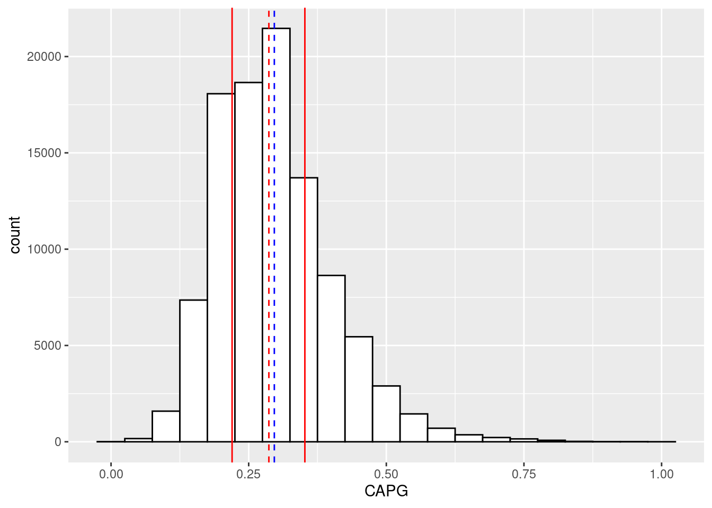
ggplot(z.tot.genes, aes(x=DMP1)) +
geom_histogram(binwidth=0.05, color="black", fill="white") +
geom_vline(aes(xintercept=mean(DMP1)), color="blue", linetype="dashed", size=0.5) +
geom_vline(aes(xintercept=median(DMP1)), color="red", linetype="dashed", size=0.5) +
geom_vline(aes(xintercept=quantile(DMP1,prob=0.25)), color="red", linetype="solid", size=0.5) +
geom_vline(aes(xintercept=quantile(DMP1,prob=0.75)), color="red", linetype="solid", size=0.5)
ggplot(z.tot.genes, aes(x=PHEX)) +
geom_histogram(binwidth=0.05, color="black", fill="white") +
geom_vline(aes(xintercept=mean(PHEX)), color="blue", linetype="dashed", size=0.5) +
geom_vline(aes(xintercept=median(PHEX)), color="red", linetype="dashed", size=0.5) +
geom_vline(aes(xintercept=quantile(PHEX,prob=0.25)), color="red", linetype="solid", size=0.5) +
geom_vline(aes(xintercept=quantile(PHEX,prob=0.75)), color="red", linetype="solid", size=0.5)
ggplot(z.tot.genes, aes(x=MEPE)) +
geom_histogram(binwidth=0.05, color="black", fill="white") +
geom_vline(aes(xintercept=mean(MEPE)), color="blue", linetype="dashed", size=0.5) +
geom_vline(aes(xintercept=median(MEPE)), color="red", linetype="dashed", size=0.5) +
geom_vline(aes(xintercept=quantile(MEPE,prob=0.25)), color="red", linetype="solid", size=0.5) +
geom_vline(aes(xintercept=quantile(MEPE,prob=0.75)), color="red", linetype="solid", size=0.5)ggplot(z.tot.genes, aes(x=SOST)) +
geom_histogram(binwidth=0.05, color="black", fill="white") +
geom_vline(aes(xintercept=mean(SOST)), color="blue", linetype="dashed", size=0.5) +
geom_vline(aes(xintercept=median(SOST)), color="red", linetype="dashed", size=0.5) +
geom_vline(aes(xintercept=quantile(SOST,prob=0.25)), color="red", linetype="solid", size=0.5) +
geom_vline(aes(xintercept=quantile(SOST,prob=0.75)), color="red", linetype="solid", size=0.5)
ggplot(z.tot.genes, aes(x=HYOU1)) +
geom_histogram(binwidth=0.05, color="black", fill="white") +
geom_vline(aes(xintercept=mean(HYOU1)), color="blue", linetype="dashed", size=0.5) +
geom_vline(aes(xintercept=median(HYOU1)), color="red", linetype="dashed", size=0.5) +
geom_vline(aes(xintercept=quantile(HYOU1,prob=0.25)), color="red", linetype="solid", size=0.5) +
geom_vline(aes(xintercept=quantile(HYOU1,prob=0.75)), color="red", linetype="solid", size=0.5)
ggplot(z.tot.genes, aes(x=ACAN)) +
geom_histogram(binwidth=0.05, color="black", fill="white") +
geom_vline(aes(xintercept=mean(ACAN)), color="blue", linetype="dashed", size=0.5) +
geom_vline(aes(xintercept=median(ACAN)), color="red", linetype="dashed", size=0.5) +
geom_vline(aes(xintercept=quantile(ACAN,prob=0.25)), color="red", linetype="solid", size=0.5) +
geom_vline(aes(xintercept=quantile(ACAN,prob=0.75)), color="red", linetype="solid", size=0.5)
ggplot(z.tot.genes, aes(x=COL2A1)) +
geom_histogram(binwidth=0.05, color="black", fill="white") +
geom_vline(aes(xintercept=mean(COL2A1)), color="blue", linetype="dashed", size=0.5) +
geom_vline(aes(xintercept=median(COL2A1)), color="red", linetype="dashed", size=0.5) +
geom_vline(aes(xintercept=quantile(COL2A1,prob=0.25)), color="red", linetype="solid", size=0.5) +
geom_vline(aes(xintercept=quantile(COL2A1,prob=0.75)), color="red", linetype="solid", size=0.5)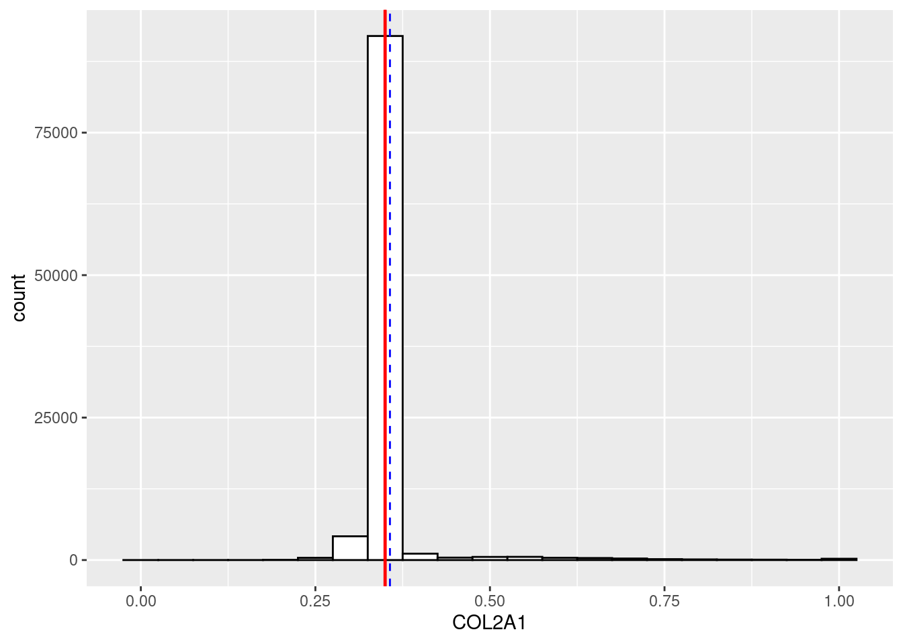
ggplot(z.tot.genes, aes(x=SOX9)) +
geom_histogram(binwidth=0.05, color="black", fill="white") +
geom_vline(aes(xintercept=mean(SOX9)), color="blue", linetype="dashed", size=0.5) +
geom_vline(aes(xintercept=median(SOX9)), color="red", linetype="dashed", size=0.5) +
geom_vline(aes(xintercept=quantile(SOX9,prob=0.25)), color="red", linetype="solid", size=0.5) +
geom_vline(aes(xintercept=quantile(SOX9,prob=0.75)), color="red", linetype="solid", size=0.5)
ggplot(z.tot.genes, aes(x=FABP4)) +
geom_histogram(binwidth=0.05, color="black", fill="white") +
geom_vline(aes(xintercept=mean(FABP4)), color="blue", linetype="dashed", size=0.5) +
geom_vline(aes(xintercept=median(FABP4)), color="red", linetype="dashed", size=0.5) +
geom_vline(aes(xintercept=quantile(FABP4,prob=0.25)), color="red", linetype="solid", size=0.5) +
geom_vline(aes(xintercept=quantile(FABP4,prob=0.75)), color="red", linetype="solid", size=0.5)
ggplot(z.tot.genes, aes(x=PPARG)) +
geom_histogram(binwidth=0.05, color="black", fill="white") +
geom_vline(aes(xintercept=mean(PPARG)), color="blue", linetype="dashed", size=0.5) +
geom_vline(aes(xintercept=median(PPARG)), color="red", linetype="dashed", size=0.5) +
geom_vline(aes(xintercept=quantile(PPARG,prob=0.25)), color="red", linetype="solid", size=0.5) +
geom_vline(aes(xintercept=quantile(PPARG,prob=0.75)), color="red", linetype="solid", size=0.5)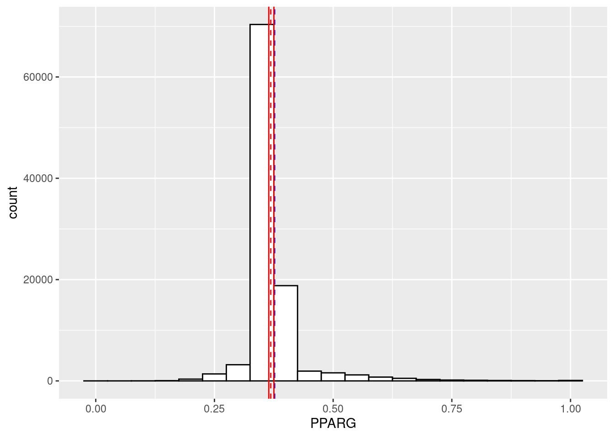
ggplot(z.tot.genes, aes(x=EBF2)) +
geom_histogram(binwidth=0.05, color="black", fill="white") +
geom_vline(aes(xintercept=mean(EBF2)), color="blue", linetype="dashed", size=0.5) +
geom_vline(aes(xintercept=median(EBF2)), color="red", linetype="dashed", size=0.5) +
geom_vline(aes(xintercept=quantile(EBF2,prob=0.25)), color="red", linetype="solid", size=0.5) +
geom_vline(aes(xintercept=quantile(EBF2,prob=0.75)), color="red", linetype="solid", size=0.5)
ggplot(z.tot.genes, aes(x=TNC)) +
geom_histogram(binwidth=0.05, color="black", fill="white") +
geom_vline(aes(xintercept=mean(TNC)), color="blue", linetype="dashed", size=0.5) +
geom_vline(aes(xintercept=median(TNC)), color="red", linetype="dashed", size=0.5) +
geom_vline(aes(xintercept=quantile(TNC,prob=0.25)), color="red", linetype="solid", size=0.5) +
geom_vline(aes(xintercept=quantile(TNC,prob=0.75)), color="red", linetype="solid", size=0.5)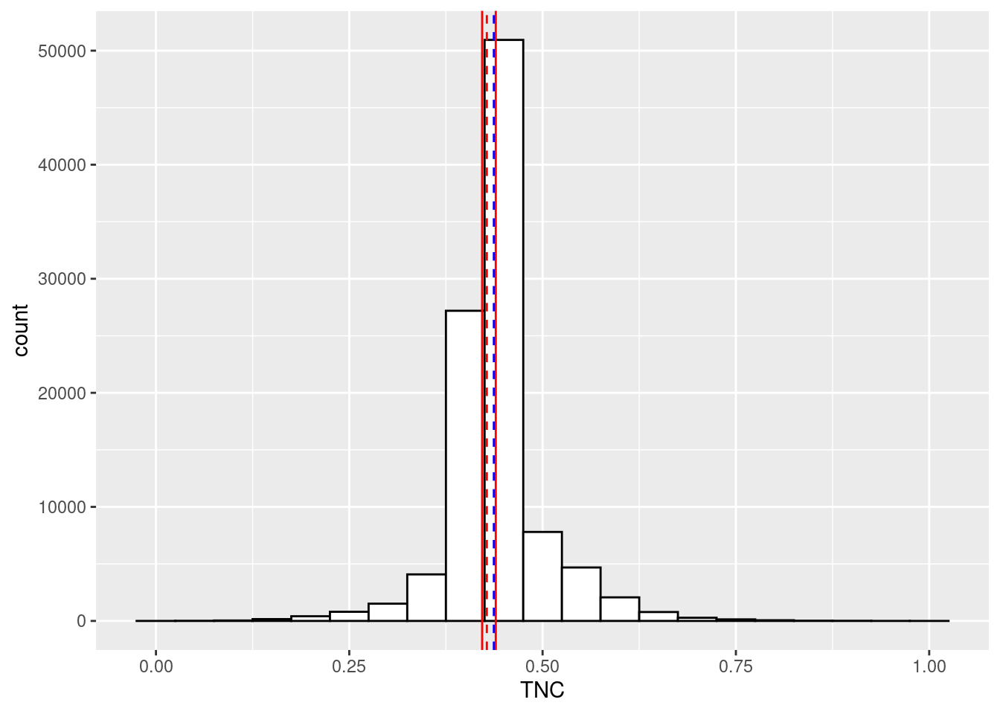
ggplot(z.tot.genes, aes(x=PDPN)) +
geom_histogram(binwidth=0.05, color="black", fill="white") +
geom_vline(aes(xintercept=mean(PDPN)), color="blue", linetype="dashed", size=0.5) +
geom_vline(aes(xintercept=median(PDPN)), color="red", linetype="dashed", size=0.5) +
geom_vline(aes(xintercept=quantile(PDPN,prob=0.25)), color="red", linetype="solid", size=0.5) +
geom_vline(aes(xintercept=quantile(PDPN,prob=0.75)), color="red", linetype="solid", size=0.5)
ggplot(z.tot.genes, aes(x=FBLN7)) +
geom_histogram(binwidth=0.05, color="black", fill="white") +
geom_vline(aes(xintercept=mean(FBLN7)), color="blue", linetype="dashed", size=0.5) +
geom_vline(aes(xintercept=median(FBLN7)), color="red", linetype="dashed", size=0.5) +
geom_vline(aes(xintercept=quantile(FBLN7,prob=0.25)), color="red", linetype="solid", size=0.5) +
geom_vline(aes(xintercept=quantile(FBLN7,prob=0.75)), color="red", linetype="solid", size=0.5)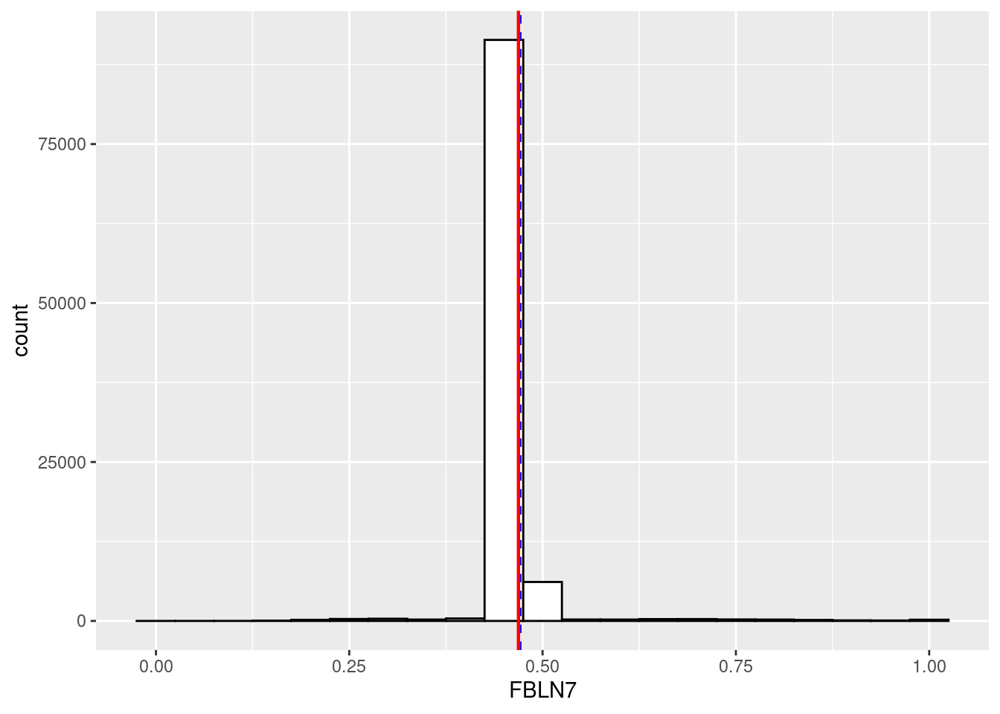
Rescaled log normalized gene expression data to range from 0 to 1
#Rescaled log normalized gene expression data to range from 0 to 1
ggplot(z.l.tot.genes, aes(x=POU5F1)) +
geom_histogram(binwidth=0.05, color="black", fill="white") +
geom_vline(aes(xintercept=mean(POU5F1)), color="blue", linetype="dashed", size=0.5) +
geom_vline(aes(xintercept=median(POU5F1)), color="red", linetype="dashed", size=0.5) +
geom_vline(aes(xintercept=quantile(POU5F1,prob=0.25)), color="red", linetype="solid", size=0.5) +
geom_vline(aes(xintercept=quantile(POU5F1,prob=0.75)), color="red", linetype="solid", size=0.5)
ggplot(z.l.tot.genes, aes(x=TDGF1)) +
geom_histogram(binwidth=0.05, color="black", fill="white") +
geom_vline(aes(xintercept=mean(TDGF1)), color="blue", linetype="dashed", size=0.5) +
geom_vline(aes(xintercept=median(TDGF1)), color="red", linetype="dashed", size=0.5) +
geom_vline(aes(xintercept=quantile(TDGF1,prob=0.25)), color="red", linetype="solid", size=0.5) +
geom_vline(aes(xintercept=quantile(TDGF1,prob=0.75)), color="red", linetype="solid", size=0.5)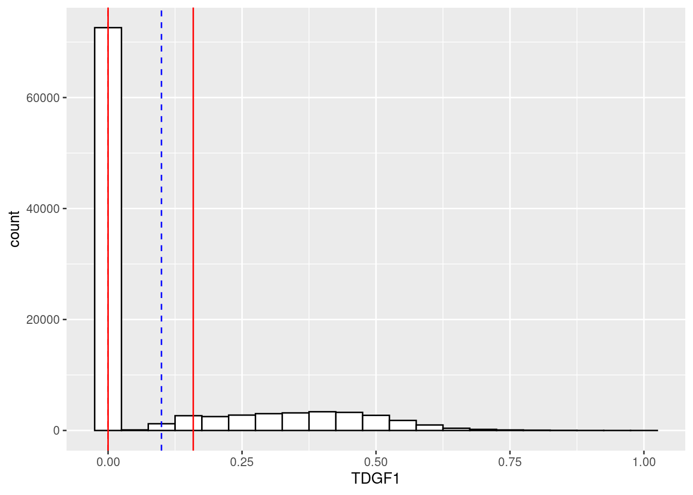
ggplot(z.l.tot.genes, aes(x=SOX2)) +
geom_histogram(binwidth=0.05, color="black", fill="white") +
geom_vline(aes(xintercept=mean(SOX2)), color="blue", linetype="dashed", size=0.5) +
geom_vline(aes(xintercept=median(SOX2)), color="red", linetype="dashed", size=0.5) +
geom_vline(aes(xintercept=quantile(SOX2,prob=0.25)), color="red", linetype="solid", size=0.5) +
geom_vline(aes(xintercept=quantile(SOX2,prob=0.75)), color="red", linetype="solid", size=0.5)
ggplot(z.l.tot.genes, aes(x=EPCAM)) +
geom_histogram(binwidth=0.05, color="black", fill="white") +
geom_vline(aes(xintercept=mean(EPCAM)), color="blue", linetype="dashed", size=0.5) +
geom_vline(aes(xintercept=median(EPCAM)), color="red", linetype="dashed", size=0.5) +
geom_vline(aes(xintercept=quantile(EPCAM,prob=0.25)), color="red", linetype="solid", size=0.5) +
geom_vline(aes(xintercept=quantile(EPCAM,prob=0.75)), color="red", linetype="solid", size=0.5)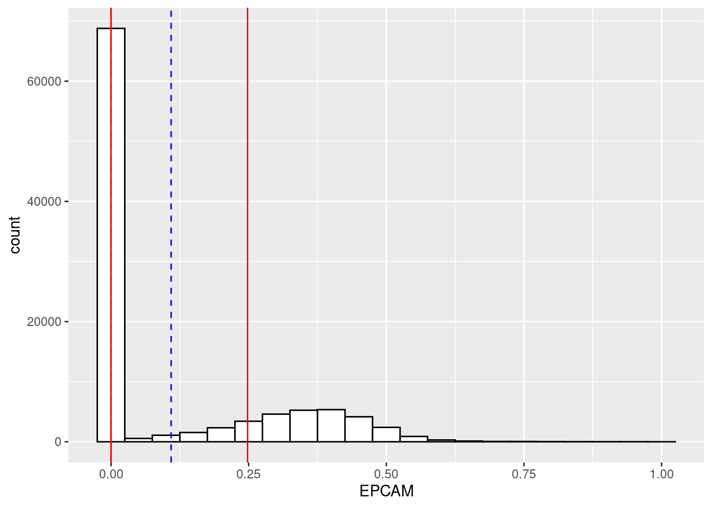
ggplot(z.l.tot.genes, aes(x=THY1)) +
geom_histogram(binwidth=0.05, color="black", fill="white") +
geom_vline(aes(xintercept=mean(THY1)), color="blue", linetype="dashed", size=0.5) +
geom_vline(aes(xintercept=median(THY1)), color="red", linetype="dashed", size=0.5) +
geom_vline(aes(xintercept=quantile(THY1,prob=0.25)), color="red", linetype="solid", size=0.5) +
geom_vline(aes(xintercept=quantile(THY1,prob=0.75)), color="red", linetype="solid", size=0.5)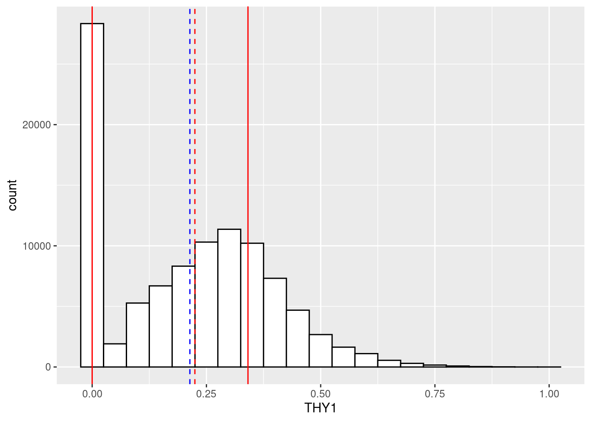
ggplot(z.l.tot.genes, aes(x=NT5E)) +
geom_histogram(binwidth=0.05, color="black", fill="white") +
geom_vline(aes(xintercept=mean(NT5E)), color="blue", linetype="dashed", size=0.5) +
geom_vline(aes(xintercept=median(NT5E)), color="red", linetype="dashed", size=0.5) +
geom_vline(aes(xintercept=quantile(NT5E,prob=0.25)), color="red", linetype="solid", size=0.5) +
geom_vline(aes(xintercept=quantile(NT5E,prob=0.75)), color="red", linetype="solid", size=0.5)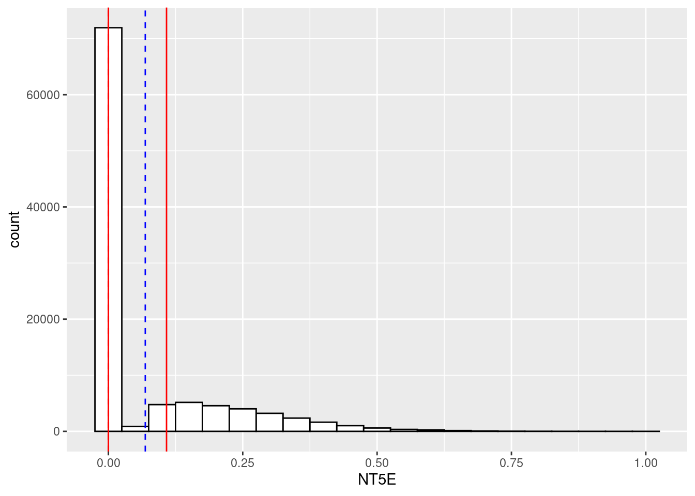
ggplot(z.l.tot.genes, aes(x=ENG)) +
geom_histogram(binwidth=0.05, color="black", fill="white") +
geom_vline(aes(xintercept=mean(ENG)), color="blue", linetype="dashed", size=0.5) +
geom_vline(aes(xintercept=median(ENG)), color="red", linetype="dashed", size=0.5) +
geom_vline(aes(xintercept=quantile(ENG,prob=0.25)), color="red", linetype="solid", size=0.5) +
geom_vline(aes(xintercept=quantile(ENG,prob=0.75)), color="red", linetype="solid", size=0.5)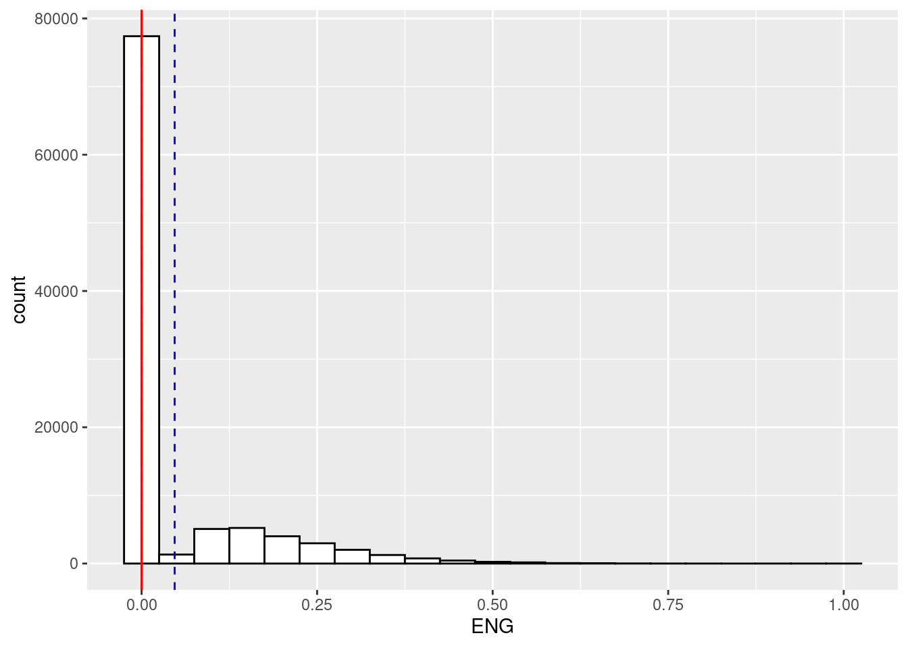
ggplot(z.l.tot.genes, aes(x=CD44)) +
geom_histogram(binwidth=0.05, color="black", fill="white") +
geom_vline(aes(xintercept=mean(CD44)), color="blue", linetype="dashed", size=0.5) +
geom_vline(aes(xintercept=median(CD44)), color="red", linetype="dashed", size=0.5) +
geom_vline(aes(xintercept=quantile(CD44,prob=0.25)), color="red", linetype="solid", size=0.5) +
geom_vline(aes(xintercept=quantile(CD44,prob=0.75)), color="red", linetype="solid", size=0.5)
ggplot(z.l.tot.genes, aes(x=COL1A1)) +
geom_histogram(binwidth=0.05, color="black", fill="white") +
geom_vline(aes(xintercept=mean(COL1A1)), color="blue", linetype="dashed", size=0.5) +
geom_vline(aes(xintercept=median(COL1A1)), color="red", linetype="dashed", size=0.5) +
geom_vline(aes(xintercept=quantile(COL1A1,prob=0.25)), color="red", linetype="solid", size=0.5) +
geom_vline(aes(xintercept=quantile(COL1A1,prob=0.75)), color="red", linetype="solid", size=0.5)
ggplot(z.l.tot.genes, aes(x=COL1A2)) +
geom_histogram(binwidth=0.05, color="black", fill="white") +
geom_vline(aes(xintercept=mean(COL1A2)), color="blue", linetype="dashed", size=0.5) +
geom_vline(aes(xintercept=median(COL1A2)), color="red", linetype="dashed", size=0.5) +
geom_vline(aes(xintercept=quantile(COL1A2,prob=0.25)), color="red", linetype="solid", size=0.5) +
geom_vline(aes(xintercept=quantile(COL1A2,prob=0.75)), color="red", linetype="solid", size=0.5)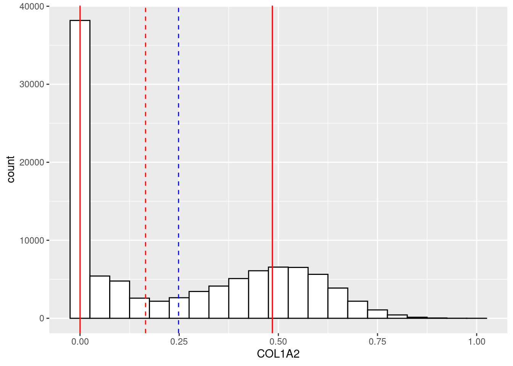
ggplot(z.l.tot.genes, aes(x=ALPL)) +
geom_histogram(binwidth=0.05, color="black", fill="white") +
geom_vline(aes(xintercept=mean(ALPL)), color="blue", linetype="dashed", size=0.5) +
geom_vline(aes(xintercept=median(ALPL)), color="red", linetype="dashed", size=0.5) +
geom_vline(aes(xintercept=quantile(ALPL,prob=0.25)), color="red", linetype="solid", size=0.5) +
geom_vline(aes(xintercept=quantile(ALPL,prob=0.75)), color="red", linetype="solid", size=0.5)
ggplot(z.l.tot.genes, aes(x=RUNX2)) +
geom_histogram(binwidth=0.05, color="black", fill="white") +
geom_vline(aes(xintercept=mean(RUNX2)), color="blue", linetype="dashed", size=0.5) +
geom_vline(aes(xintercept=median(RUNX2)), color="red", linetype="dashed", size=0.5) +
geom_vline(aes(xintercept=quantile(RUNX2,prob=0.25)), color="red", linetype="solid", size=0.5) +
geom_vline(aes(xintercept=quantile(RUNX2,prob=0.75)), color="red", linetype="solid", size=0.5)
ggplot(z.l.tot.genes, aes(x=BGLAP)) +
geom_histogram(binwidth=0.05, color="black", fill="white") +
geom_vline(aes(xintercept=mean(BGLAP)), color="blue", linetype="dashed", size=0.5) +
geom_vline(aes(xintercept=median(BGLAP)), color="red", linetype="dashed", size=0.5) +
geom_vline(aes(xintercept=quantile(BGLAP,prob=0.25)), color="red", linetype="solid", size=0.5) +
geom_vline(aes(xintercept=quantile(BGLAP,prob=0.75)), color="red", linetype="solid", size=0.5)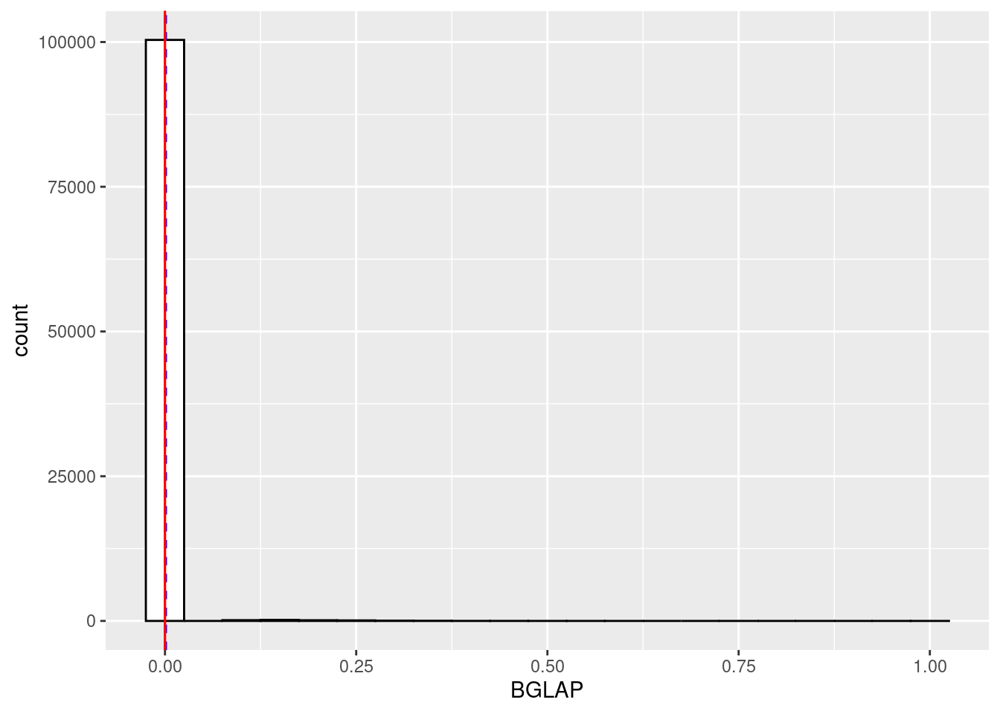
ggplot(z.l.tot.genes, aes(x=CAPG)) +
geom_histogram(binwidth=0.05, color="black", fill="white") +
geom_vline(aes(xintercept=mean(CAPG)), color="blue", linetype="dashed", size=0.5) +
geom_vline(aes(xintercept=median(CAPG)), color="red", linetype="dashed", size=0.5) +
geom_vline(aes(xintercept=quantile(CAPG,prob=0.25)), color="red", linetype="solid", size=0.5) +
geom_vline(aes(xintercept=quantile(CAPG,prob=0.75)), color="red", linetype="solid", size=0.5)
ggplot(z.l.tot.genes, aes(x=DMP1)) +
geom_histogram(binwidth=0.05, color="black", fill="white") +
geom_vline(aes(xintercept=mean(DMP1)), color="blue", linetype="dashed", size=0.5) +
geom_vline(aes(xintercept=median(DMP1)), color="red", linetype="dashed", size=0.5) +
geom_vline(aes(xintercept=quantile(DMP1,prob=0.25)), color="red", linetype="solid", size=0.5) +
geom_vline(aes(xintercept=quantile(DMP1,prob=0.75)), color="red", linetype="solid", size=0.5)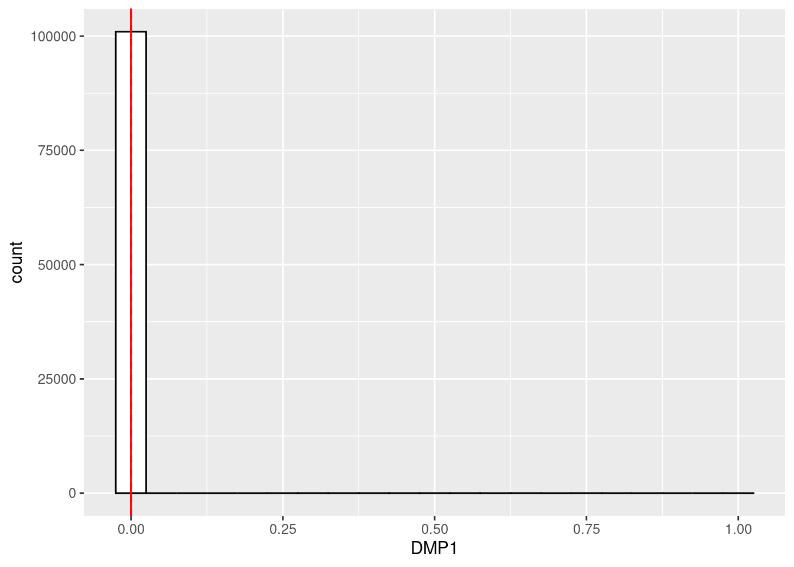
ggplot(z.l.tot.genes, aes(x=PHEX)) +
geom_histogram(binwidth=0.05, color="black", fill="white") +
geom_vline(aes(xintercept=mean(PHEX)), color="blue", linetype="dashed", size=0.5) +
geom_vline(aes(xintercept=median(PHEX)), color="red", linetype="dashed", size=0.5) +
geom_vline(aes(xintercept=quantile(PHEX,prob=0.25)), color="red", linetype="solid", size=0.5) +
geom_vline(aes(xintercept=quantile(PHEX,prob=0.75)), color="red", linetype="solid", size=0.5)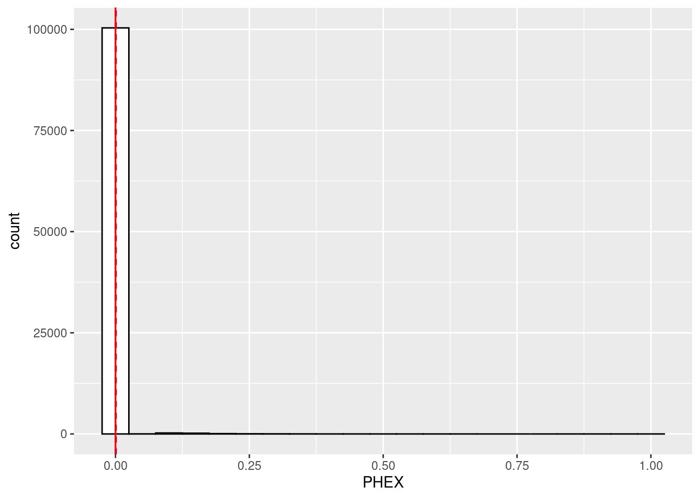
ggplot(z.l.tot.genes, aes(x=MEPE)) +
geom_histogram(binwidth=0.05, color="black", fill="white") +
geom_vline(aes(xintercept=mean(MEPE)), color="blue", linetype="dashed", size=0.5) +
geom_vline(aes(xintercept=median(MEPE)), color="red", linetype="dashed", size=0.5) +
geom_vline(aes(xintercept=quantile(MEPE,prob=0.25)), color="red", linetype="solid", size=0.5) +
geom_vline(aes(xintercept=quantile(MEPE,prob=0.75)), color="red", linetype="solid", size=0.5)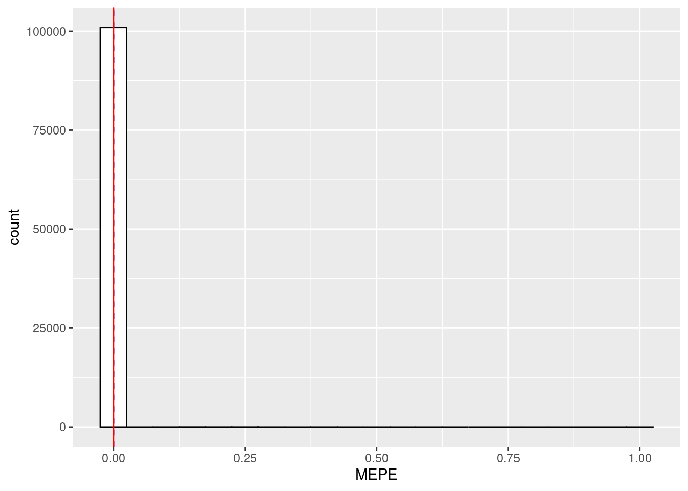
ggplot(z.l.tot.genes, aes(x=SOST)) +
geom_histogram(binwidth=0.05, color="black", fill="white") +
geom_vline(aes(xintercept=mean(SOST)), color="blue", linetype="dashed", size=0.5) +
geom_vline(aes(xintercept=median(SOST)), color="red", linetype="dashed", size=0.5) +
geom_vline(aes(xintercept=quantile(SOST,prob=0.25)), color="red", linetype="solid", size=0.5) +
geom_vline(aes(xintercept=quantile(SOST,prob=0.75)), color="red", linetype="solid", size=0.5)
ggplot(z.l.tot.genes, aes(x=HYOU1)) +
geom_histogram(binwidth=0.05, color="black", fill="white") +
geom_vline(aes(xintercept=mean(HYOU1)), color="blue", linetype="dashed", size=0.5) +
geom_vline(aes(xintercept=median(HYOU1)), color="red", linetype="dashed", size=0.5) +
geom_vline(aes(xintercept=quantile(HYOU1,prob=0.25)), color="red", linetype="solid", size=0.5) +
geom_vline(aes(xintercept=quantile(HYOU1,prob=0.75)), color="red", linetype="solid", size=0.5)
ggplot(z.l.tot.genes, aes(x=ACAN)) +
geom_histogram(binwidth=0.05, color="black", fill="white") +
geom_vline(aes(xintercept=mean(ACAN)), color="blue", linetype="dashed", size=0.5) +
geom_vline(aes(xintercept=median(ACAN)), color="red", linetype="dashed", size=0.5) +
geom_vline(aes(xintercept=quantile(ACAN,prob=0.25)), color="red", linetype="solid", size=0.5) +
geom_vline(aes(xintercept=quantile(ACAN,prob=0.75)), color="red", linetype="solid", size=0.5)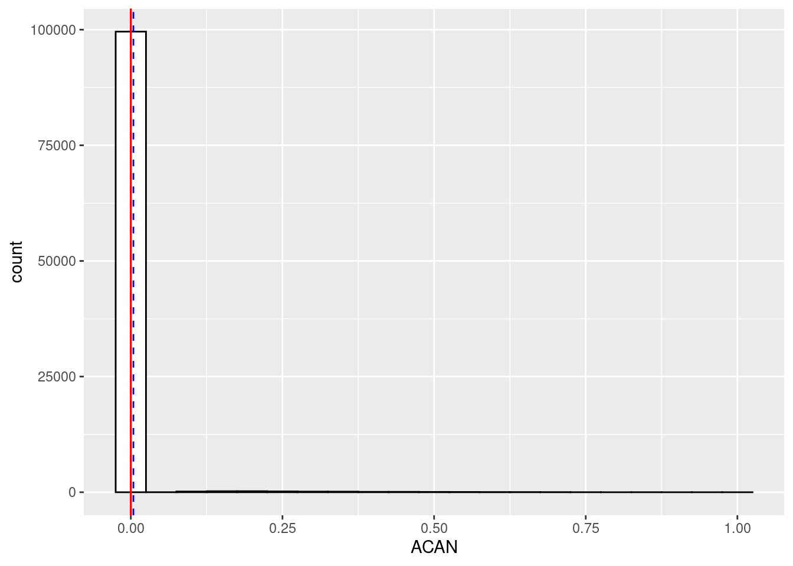
ggplot(z.l.tot.genes, aes(x=COL2A1)) +
geom_histogram(binwidth=0.05, color="black", fill="white") +
geom_vline(aes(xintercept=mean(COL2A1)), color="blue", linetype="dashed", size=0.5) +
geom_vline(aes(xintercept=median(COL2A1)), color="red", linetype="dashed", size=0.5) +
geom_vline(aes(xintercept=quantile(COL2A1,prob=0.25)), color="red", linetype="solid", size=0.5) +
geom_vline(aes(xintercept=quantile(COL2A1,prob=0.75)), color="red", linetype="solid", size=0.5)
ggplot(z.l.tot.genes, aes(x=SOX9)) +
geom_histogram(binwidth=0.05, color="black", fill="white") +
geom_vline(aes(xintercept=mean(SOX9)), color="blue", linetype="dashed", size=0.5) +
geom_vline(aes(xintercept=median(SOX9)), color="red", linetype="dashed", size=0.5) +
geom_vline(aes(xintercept=quantile(SOX9,prob=0.25)), color="red", linetype="solid", size=0.5) +
geom_vline(aes(xintercept=quantile(SOX9,prob=0.75)), color="red", linetype="solid", size=0.5)ggplot(z.l.tot.genes, aes(x=FABP4)) +
geom_histogram(binwidth=0.05, color="black", fill="white") +
geom_vline(aes(xintercept=mean(FABP4)), color="blue", linetype="dashed", size=0.5) +
geom_vline(aes(xintercept=median(FABP4)), color="red", linetype="dashed", size=0.5) +
geom_vline(aes(xintercept=quantile(FABP4,prob=0.25)), color="red", linetype="solid", size=0.5) +
geom_vline(aes(xintercept=quantile(FABP4,prob=0.75)), color="red", linetype="solid", size=0.5)
ggplot(z.l.tot.genes, aes(x=PPARG)) +
geom_histogram(binwidth=0.05, color="black", fill="white") +
geom_vline(aes(xintercept=mean(PPARG)), color="blue", linetype="dashed", size=0.5) +
geom_vline(aes(xintercept=median(PPARG)), color="red", linetype="dashed", size=0.5) +
geom_vline(aes(xintercept=quantile(PPARG,prob=0.25)), color="red", linetype="solid", size=0.5) +
geom_vline(aes(xintercept=quantile(PPARG,prob=0.75)), color="red", linetype="solid", size=0.5)ggplot(z.l.tot.genes, aes(x=EBF2)) +
geom_histogram(binwidth=0.05, color="black", fill="white") +
geom_vline(aes(xintercept=mean(EBF2)), color="blue", linetype="dashed", size=0.5) +
geom_vline(aes(xintercept=median(EBF2)), color="red", linetype="dashed", size=0.5) +
geom_vline(aes(xintercept=quantile(EBF2,prob=0.25)), color="red", linetype="solid", size=0.5) +
geom_vline(aes(xintercept=quantile(EBF2,prob=0.75)), color="red", linetype="solid", size=0.5)
ggplot(z.l.tot.genes, aes(x=TNC)) +
geom_histogram(binwidth=0.05, color="black", fill="white") +
geom_vline(aes(xintercept=mean(TNC)), color="blue", linetype="dashed", size=0.5) +
geom_vline(aes(xintercept=median(TNC)), color="red", linetype="dashed", size=0.5) +
geom_vline(aes(xintercept=quantile(TNC,prob=0.25)), color="red", linetype="solid", size=0.5) +
geom_vline(aes(xintercept=quantile(TNC,prob=0.75)), color="red", linetype="solid", size=0.5)ggplot(z.l.tot.genes, aes(x=PDPN)) +
geom_histogram(binwidth=0.05, color="black", fill="white") +
geom_vline(aes(xintercept=mean(PDPN)), color="blue", linetype="dashed", size=0.5) +
geom_vline(aes(xintercept=median(PDPN)), color="red", linetype="dashed", size=0.5) +
geom_vline(aes(xintercept=quantile(PDPN,prob=0.25)), color="red", linetype="solid", size=0.5) +
geom_vline(aes(xintercept=quantile(PDPN,prob=0.75)), color="red", linetype="solid", size=0.5)
ggplot(z.l.tot.genes, aes(x=FBLN7)) +
geom_histogram(binwidth=0.05, color="black", fill="white") +
geom_vline(aes(xintercept=mean(FBLN7)), color="blue", linetype="dashed", size=0.5) +
geom_vline(aes(xintercept=median(FBLN7)), color="red", linetype="dashed", size=0.5) +
geom_vline(aes(xintercept=quantile(FBLN7,prob=0.25)), color="red", linetype="solid", size=0.5) +
geom_vline(aes(xintercept=quantile(FBLN7,prob=0.75)), color="red", linetype="solid", size=0.5)
Non-scaled integrated data (with confounding variables regressed out)
#Non-scaled integrated data (with confounding variables regressed out)
ggplot(d.tot.genes, aes(x=POU5F1)) +
geom_histogram(binwidth=0.05, color="black", fill="white") +
geom_vline(aes(xintercept=mean(POU5F1)), color="blue", linetype="dashed", size=0.5) +
geom_vline(aes(xintercept=median(POU5F1)), color="red", linetype="dashed", size=0.5) +
geom_vline(aes(xintercept=quantile(POU5F1,prob=0.25)), color="red", linetype="solid", size=0.5) +
geom_vline(aes(xintercept=quantile(POU5F1,prob=0.75)), color="red", linetype="solid", size=0.5)ggplot(d.tot.genes, aes(x=TDGF1)) +
geom_histogram(binwidth=0.05, color="black", fill="white") +
geom_vline(aes(xintercept=mean(TDGF1)), color="blue", linetype="dashed", size=0.5) +
geom_vline(aes(xintercept=median(TDGF1)), color="red", linetype="dashed", size=0.5) +
geom_vline(aes(xintercept=quantile(TDGF1,prob=0.25)), color="red", linetype="solid", size=0.5) +
geom_vline(aes(xintercept=quantile(TDGF1,prob=0.75)), color="red", linetype="solid", size=0.5)ggplot(d.tot.genes, aes(x=SOX2)) +
geom_histogram(binwidth=0.05, color="black", fill="white") +
geom_vline(aes(xintercept=mean(SOX2)), color="blue", linetype="dashed", size=0.5) +
geom_vline(aes(xintercept=median(SOX2)), color="red", linetype="dashed", size=0.5) +
geom_vline(aes(xintercept=quantile(SOX2,prob=0.25)), color="red", linetype="solid", size=0.5) +
geom_vline(aes(xintercept=quantile(SOX2,prob=0.75)), color="red", linetype="solid", size=0.5)
ggplot(d.tot.genes, aes(x=EPCAM)) +
geom_histogram(binwidth=0.05, color="black", fill="white") +
geom_vline(aes(xintercept=mean(EPCAM)), color="blue", linetype="dashed", size=0.5) +
geom_vline(aes(xintercept=median(EPCAM)), color="red", linetype="dashed", size=0.5) +
geom_vline(aes(xintercept=quantile(EPCAM,prob=0.25)), color="red", linetype="solid", size=0.5) +
geom_vline(aes(xintercept=quantile(EPCAM,prob=0.75)), color="red", linetype="solid", size=0.5)ggplot(d.tot.genes, aes(x=THY1)) +
geom_histogram(binwidth=0.05, color="black", fill="white") +
geom_vline(aes(xintercept=mean(THY1)), color="blue", linetype="dashed", size=0.5) +
geom_vline(aes(xintercept=median(THY1)), color="red", linetype="dashed", size=0.5) +
geom_vline(aes(xintercept=quantile(THY1,prob=0.25)), color="red", linetype="solid", size=0.5) +
geom_vline(aes(xintercept=quantile(THY1,prob=0.75)), color="red", linetype="solid", size=0.5)ggplot(d.tot.genes, aes(x=NT5E)) +
geom_histogram(binwidth=0.05, color="black", fill="white") +
geom_vline(aes(xintercept=mean(NT5E)), color="blue", linetype="dashed", size=0.5) +
geom_vline(aes(xintercept=median(NT5E)), color="red", linetype="dashed", size=0.5) +
geom_vline(aes(xintercept=quantile(NT5E,prob=0.25)), color="red", linetype="solid", size=0.5) +
geom_vline(aes(xintercept=quantile(NT5E,prob=0.75)), color="red", linetype="solid", size=0.5)ggplot(d.tot.genes, aes(x=ENG)) +
geom_histogram(binwidth=0.05, color="black", fill="white") +
geom_vline(aes(xintercept=mean(ENG)), color="blue", linetype="dashed", size=0.5) +
geom_vline(aes(xintercept=median(ENG)), color="red", linetype="dashed", size=0.5) +
geom_vline(aes(xintercept=quantile(ENG,prob=0.25)), color="red", linetype="solid", size=0.5) +
geom_vline(aes(xintercept=quantile(ENG,prob=0.75)), color="red", linetype="solid", size=0.5)ggplot(d.tot.genes, aes(x=CD44)) +
geom_histogram(binwidth=0.05, color="black", fill="white") +
geom_vline(aes(xintercept=mean(CD44)), color="blue", linetype="dashed", size=0.5) +
geom_vline(aes(xintercept=median(CD44)), color="red", linetype="dashed", size=0.5) +
geom_vline(aes(xintercept=quantile(CD44,prob=0.25)), color="red", linetype="solid", size=0.5) +
geom_vline(aes(xintercept=quantile(CD44,prob=0.75)), color="red", linetype="solid", size=0.5)ggplot(d.tot.genes, aes(x=COL1A1)) +
geom_histogram(binwidth=0.05, color="black", fill="white") +
geom_vline(aes(xintercept=mean(COL1A1)), color="blue", linetype="dashed", size=0.5) +
geom_vline(aes(xintercept=median(COL1A1)), color="red", linetype="dashed", size=0.5) +
geom_vline(aes(xintercept=quantile(COL1A1,prob=0.25)), color="red", linetype="solid", size=0.5) +
geom_vline(aes(xintercept=quantile(COL1A1,prob=0.75)), color="red", linetype="solid", size=0.5)
ggplot(d.tot.genes, aes(x=COL1A2)) +
geom_histogram(binwidth=0.05, color="black", fill="white") +
geom_vline(aes(xintercept=mean(COL1A2)), color="blue", linetype="dashed", size=0.5) +
geom_vline(aes(xintercept=median(COL1A2)), color="red", linetype="dashed", size=0.5) +
geom_vline(aes(xintercept=quantile(COL1A2,prob=0.25)), color="red", linetype="solid", size=0.5) +
geom_vline(aes(xintercept=quantile(COL1A2,prob=0.75)), color="red", linetype="solid", size=0.5)ggplot(d.tot.genes, aes(x=ALPL)) +
geom_histogram(binwidth=0.05, color="black", fill="white") +
geom_vline(aes(xintercept=mean(ALPL)), color="blue", linetype="dashed", size=0.5) +
geom_vline(aes(xintercept=median(ALPL)), color="red", linetype="dashed", size=0.5) +
geom_vline(aes(xintercept=quantile(ALPL,prob=0.25)), color="red", linetype="solid", size=0.5) +
geom_vline(aes(xintercept=quantile(ALPL,prob=0.75)), color="red", linetype="solid", size=0.5)ggplot(d.tot.genes, aes(x=RUNX2)) +
geom_histogram(binwidth=0.05, color="black", fill="white") +
geom_vline(aes(xintercept=mean(RUNX2)), color="blue", linetype="dashed", size=0.5) +
geom_vline(aes(xintercept=median(RUNX2)), color="red", linetype="dashed", size=0.5) +
geom_vline(aes(xintercept=quantile(RUNX2,prob=0.25)), color="red", linetype="solid", size=0.5) +
geom_vline(aes(xintercept=quantile(RUNX2,prob=0.75)), color="red", linetype="solid", size=0.5)
ggplot(d.tot.genes, aes(x=BGLAP)) +
geom_histogram(binwidth=0.05, color="black", fill="white") +
geom_vline(aes(xintercept=mean(BGLAP)), color="blue", linetype="dashed", size=0.5) +
geom_vline(aes(xintercept=median(BGLAP)), color="red", linetype="dashed", size=0.5) +
geom_vline(aes(xintercept=quantile(BGLAP,prob=0.25)), color="red", linetype="solid", size=0.5) +
geom_vline(aes(xintercept=quantile(BGLAP,prob=0.75)), color="red", linetype="solid", size=0.5)
ggplot(d.tot.genes, aes(x=CAPG)) +
geom_histogram(binwidth=0.05, color="black", fill="white") +
geom_vline(aes(xintercept=mean(CAPG)), color="blue", linetype="dashed", size=0.5) +
geom_vline(aes(xintercept=median(CAPG)), color="red", linetype="dashed", size=0.5) +
geom_vline(aes(xintercept=quantile(CAPG,prob=0.25)), color="red", linetype="solid", size=0.5) +
geom_vline(aes(xintercept=quantile(CAPG,prob=0.75)), color="red", linetype="solid", size=0.5)
ggplot(d.tot.genes, aes(x=DMP1)) +
geom_histogram(binwidth=0.05, color="black", fill="white") +
geom_vline(aes(xintercept=mean(DMP1)), color="blue", linetype="dashed", size=0.5) +
geom_vline(aes(xintercept=median(DMP1)), color="red", linetype="dashed", size=0.5) +
geom_vline(aes(xintercept=quantile(DMP1,prob=0.25)), color="red", linetype="solid", size=0.5) +
geom_vline(aes(xintercept=quantile(DMP1,prob=0.75)), color="red", linetype="solid", size=0.5)ggplot(d.tot.genes, aes(x=PHEX)) +
geom_histogram(binwidth=0.05, color="black", fill="white") +
geom_vline(aes(xintercept=mean(PHEX)), color="blue", linetype="dashed", size=0.5) +
geom_vline(aes(xintercept=median(PHEX)), color="red", linetype="dashed", size=0.5) +
geom_vline(aes(xintercept=quantile(PHEX,prob=0.25)), color="red", linetype="solid", size=0.5) +
geom_vline(aes(xintercept=quantile(PHEX,prob=0.75)), color="red", linetype="solid", size=0.5)
ggplot(d.tot.genes, aes(x=MEPE)) +
geom_histogram(binwidth=0.05, color="black", fill="white") +
geom_vline(aes(xintercept=mean(MEPE)), color="blue", linetype="dashed", size=0.5) +
geom_vline(aes(xintercept=median(MEPE)), color="red", linetype="dashed", size=0.5) +
geom_vline(aes(xintercept=quantile(MEPE,prob=0.25)), color="red", linetype="solid", size=0.5) +
geom_vline(aes(xintercept=quantile(MEPE,prob=0.75)), color="red", linetype="solid", size=0.5)
ggplot(d.tot.genes, aes(x=SOST)) +
geom_histogram(binwidth=0.05, color="black", fill="white") +
geom_vline(aes(xintercept=mean(SOST)), color="blue", linetype="dashed", size=0.5) +
geom_vline(aes(xintercept=median(SOST)), color="red", linetype="dashed", size=0.5) +
geom_vline(aes(xintercept=quantile(SOST,prob=0.25)), color="red", linetype="solid", size=0.5) +
geom_vline(aes(xintercept=quantile(SOST,prob=0.75)), color="red", linetype="solid", size=0.5)
ggplot(d.tot.genes, aes(x=HYOU1)) +
geom_histogram(binwidth=0.05, color="black", fill="white") +
geom_vline(aes(xintercept=mean(HYOU1)), color="blue", linetype="dashed", size=0.5) +
geom_vline(aes(xintercept=median(HYOU1)), color="red", linetype="dashed", size=0.5) +
geom_vline(aes(xintercept=quantile(HYOU1,prob=0.25)), color="red", linetype="solid", size=0.5) +
geom_vline(aes(xintercept=quantile(HYOU1,prob=0.75)), color="red", linetype="solid", size=0.5)
ggplot(d.tot.genes, aes(x=ACAN)) +
geom_histogram(binwidth=0.05, color="black", fill="white") +
geom_vline(aes(xintercept=mean(ACAN)), color="blue", linetype="dashed", size=0.5) +
geom_vline(aes(xintercept=median(ACAN)), color="red", linetype="dashed", size=0.5) +
geom_vline(aes(xintercept=quantile(ACAN,prob=0.25)), color="red", linetype="solid", size=0.5) +
geom_vline(aes(xintercept=quantile(ACAN,prob=0.75)), color="red", linetype="solid", size=0.5)
ggplot(d.tot.genes, aes(x=COL2A1)) +
geom_histogram(binwidth=0.05, color="black", fill="white") +
geom_vline(aes(xintercept=mean(COL2A1)), color="blue", linetype="dashed", size=0.5) +
geom_vline(aes(xintercept=median(COL2A1)), color="red", linetype="dashed", size=0.5) +
geom_vline(aes(xintercept=quantile(COL2A1,prob=0.25)), color="red", linetype="solid", size=0.5) +
geom_vline(aes(xintercept=quantile(COL2A1,prob=0.75)), color="red", linetype="solid", size=0.5)ggplot(d.tot.genes, aes(x=SOX9)) +
geom_histogram(binwidth=0.05, color="black", fill="white") +
geom_vline(aes(xintercept=mean(SOX9)), color="blue", linetype="dashed", size=0.5) +
geom_vline(aes(xintercept=median(SOX9)), color="red", linetype="dashed", size=0.5) +
geom_vline(aes(xintercept=quantile(SOX9,prob=0.25)), color="red", linetype="solid", size=0.5) +
geom_vline(aes(xintercept=quantile(SOX9,prob=0.75)), color="red", linetype="solid", size=0.5)ggplot(d.tot.genes, aes(x=FABP4)) +
geom_histogram(binwidth=0.05, color="black", fill="white") +
geom_vline(aes(xintercept=mean(FABP4)), color="blue", linetype="dashed", size=0.5) +
geom_vline(aes(xintercept=median(FABP4)), color="red", linetype="dashed", size=0.5) +
geom_vline(aes(xintercept=quantile(FABP4,prob=0.25)), color="red", linetype="solid", size=0.5) +
geom_vline(aes(xintercept=quantile(FABP4,prob=0.75)), color="red", linetype="solid", size=0.5)
ggplot(d.tot.genes, aes(x=PPARG)) +
geom_histogram(binwidth=0.05, color="black", fill="white") +
geom_vline(aes(xintercept=mean(PPARG)), color="blue", linetype="dashed", size=0.5) +
geom_vline(aes(xintercept=median(PPARG)), color="red", linetype="dashed", size=0.5) +
geom_vline(aes(xintercept=quantile(PPARG,prob=0.25)), color="red", linetype="solid", size=0.5) +
geom_vline(aes(xintercept=quantile(PPARG,prob=0.75)), color="red", linetype="solid", size=0.5)ggplot(d.tot.genes, aes(x=EBF2)) +
geom_histogram(binwidth=0.05, color="black", fill="white") +
geom_vline(aes(xintercept=mean(EBF2)), color="blue", linetype="dashed", size=0.5) +
geom_vline(aes(xintercept=median(EBF2)), color="red", linetype="dashed", size=0.5) +
geom_vline(aes(xintercept=quantile(EBF2,prob=0.25)), color="red", linetype="solid", size=0.5) +
geom_vline(aes(xintercept=quantile(EBF2,prob=0.75)), color="red", linetype="solid", size=0.5)ggplot(d.tot.genes, aes(x=TNC)) +
geom_histogram(binwidth=0.05, color="black", fill="white") +
geom_vline(aes(xintercept=mean(TNC)), color="blue", linetype="dashed", size=0.5) +
geom_vline(aes(xintercept=median(TNC)), color="red", linetype="dashed", size=0.5) +
geom_vline(aes(xintercept=quantile(TNC,prob=0.25)), color="red", linetype="solid", size=0.5) +
geom_vline(aes(xintercept=quantile(TNC,prob=0.75)), color="red", linetype="solid", size=0.5)
ggplot(d.tot.genes, aes(x=PDPN)) +
geom_histogram(binwidth=0.05, color="black", fill="white") +
geom_vline(aes(xintercept=mean(PDPN)), color="blue", linetype="dashed", size=0.5) +
geom_vline(aes(xintercept=median(PDPN)), color="red", linetype="dashed", size=0.5) +
geom_vline(aes(xintercept=quantile(PDPN,prob=0.25)), color="red", linetype="solid", size=0.5) +
geom_vline(aes(xintercept=quantile(PDPN,prob=0.75)), color="red", linetype="solid", size=0.5)
ggplot(d.tot.genes, aes(x=FBLN7)) +
geom_histogram(binwidth=0.05, color="black", fill="white") +
geom_vline(aes(xintercept=mean(FBLN7)), color="blue", linetype="dashed", size=0.5) +
geom_vline(aes(xintercept=median(FBLN7)), color="red", linetype="dashed", size=0.5) +
geom_vline(aes(xintercept=quantile(FBLN7,prob=0.25)), color="red", linetype="solid", size=0.5) +
geom_vline(aes(xintercept=quantile(FBLN7,prob=0.75)), color="red", linetype="solid", size=0.5)Visualize Ad Hoc Assignments
Define functions for visualizing ad hoc assignments.
#Define functions for making upsetr plots
plot.upset.HCcellcompare <- function(data, genes, ymax) {
x=1
T0.H.geneList=c()
T1.H.geneList=c()
T2.H.geneList=c()
T0.C.geneList=c()
T1.C.geneList=c()
T2.C.geneList=c()
while(x <= length(genes)) {
if(sum(data[which(data$Stage=="Time 0" & data$Species=="Human"),genes[x]])>0){ T0.H.geneList=c(T0.H.geneList,genes[x]) }
if(sum(data[which(data$Stage=="Time 1" & data$Species=="Human"),genes[x]])>0){ T1.H.geneList=c(T1.H.geneList,genes[x]) }
if(sum(data[which(data$Stage=="Time 2" & data$Species=="Human"),genes[x]])>0){ T2.H.geneList=c(T2.H.geneList,genes[x]) }
if(sum(data[which(data$Stage=="Time 0" & data$Species=="Chimp"),genes[x]])>0){ T0.C.geneList=c(T0.C.geneList,genes[x]) }
if(sum(data[which(data$Stage=="Time 1" & data$Species=="Chimp"),genes[x]])>0){ T1.C.geneList=c(T1.C.geneList,genes[x]) }
if(sum(data[which(data$Stage=="Time 2" & data$Species=="Chimp"),genes[x]])>0){ T2.C.geneList=c(T2.C.geneList,genes[x]) }
x=x+1
}
plot.ls <- list(
T0.Human = upset(data[which(data$Stage=="Time 0" & data$Species=="Human"),T0.H.geneList],
nintersects=NA, empty.intersections="on", keep.order=TRUE,
order.by="degree", decreasing=TRUE, sets=T0.H.geneList, mainbar.y.max=ymax),
T1.Human = upset(data[which(data$Stage=="Time 1" & data$Species=="Human"),T1.H.geneList],
nintersects=NA, empty.intersections="on", keep.order=TRUE,
order.by="degree", decreasing=TRUE, sets=T1.H.geneList, mainbar.y.max=ymax),
T2.Human = upset(data[which(data$Stage=="Time 2" & data$Species=="Human"),T2.H.geneList],
nintersects=NA, empty.intersections="on", keep.order=TRUE,
order.by="degree", decreasing=TRUE, sets=T2.H.geneList, mainbar.y.max=ymax),
T0.Chimp = upset(data[which(data$Stage=="Time 0" & data$Species=="Chimp"),T0.C.geneList],
nintersects=NA, empty.intersections="on", keep.order=TRUE,
order.by="degree", decreasing=TRUE, sets=T0.C.geneList, mainbar.y.max=ymax),
T1.Chimp = upset(data[which(data$Stage=="Time 1" & data$Species=="Chimp"),T1.C.geneList],
nintersects=NA, empty.intersections="on", keep.order=TRUE,
order.by="degree", decreasing=TRUE, sets=T1.C.geneList, mainbar.y.max=ymax),
T2.Chimp = upset(data[which(data$Stage=="Time 2" & data$Species=="Chimp"),T2.C.geneList],
nintersects=NA, empty.intersections="on", keep.order=TRUE,
order.by="degree", decreasing=TRUE, sets=T2.C.geneList, mainbar.y.max=ymax)
)
for (v in names(plot.ls)) {
print(plot.ls[[v]])
grid.text(v, x=0.65, y=0.97, gp=gpar(fontsize=10))
}
}
plot.upset.sub.HCcellcompare <- function(data, genes, intersections, ymax) {
plot.ls <- list(
T0.Human = upset(data[which(data$Stage=="Time 0" & data$Species=="Human"),genes],
nintersects=NA, empty.intersections="on", keep.order=TRUE, order.by="degree", decreasing=FALSE,
sets=genes, intersections=intersections, mainbar.y.max=ymax),
T1.Human = upset(data[which(data$Stage=="Time 1" & data$Species=="Human"),genes],
nintersects=NA, empty.intersections="on", keep.order=TRUE, order.by="degree", decreasing=FALSE,
sets=genes, intersections=intersections, mainbar.y.max=ymax),
T2.Human = upset(data[which(data$Stage=="Time 2" & data$Species=="Human"),genes],
nintersects=NA, empty.intersections="on", keep.order=TRUE, order.by="degree", decreasing=FALSE,
sets=genes, intersections=intersections, mainbar.y.max=ymax),
T0.Chimp = upset(data[which(data$Stage=="Time 0" & data$Species=="Chimp"),genes],
nintersects=NA, empty.intersections="on", keep.order=TRUE, order.by="degree", decreasing=FALSE,
sets=genes, intersections=intersections, mainbar.y.max=ymax),
T1.Chimp = upset(data[which(data$Stage=="Time 1" & data$Species=="Chimp"),genes],
nintersects=NA, empty.intersections="on", keep.order=TRUE, order.by="degree", decreasing=FALSE,
sets=genes, intersections=intersections, mainbar.y.max=ymax),
T2.Chimp = upset(data[which(data$Stage=="Time 2" & data$Species=="Chimp"),genes],
nintersects=NA, empty.intersections="on", keep.order=TRUE, order.by="degree", decreasing=FALSE,
sets=genes, intersections=intersections, mainbar.y.max=ymax)
)
for (v in names(plot.ls)) {
print(plot.ls[[v]])
grid.text(v, x=0.65, y=0.97, gp=gpar(fontsize=10))
}
}Visualize General Ad Hoc Assignments
Look at which cells meet threshold cutoffs. (note: if all cells in a subset were negative for a marker gene, that gene is excludeded from the upsetr plot)
Takeaways regarding assignment cutoffs (number of cells reaching cutoffs):
- for scaled integrated data (with confounding variables regressed out):
- mean = thresh0
- threshN0.1 > threshN0.05 > threshN0.01 > thresh0 > thresh0.01 > thresh0.05 > thresh0.1 > thresh0.3 > thresh0.5 > thresh0.7 > thresh0.9 > thresh1
- q1 > median > q3
- for log normalized data:
- thresh0 = thresh0.01 = thresh0.05 = thresh0.1 > thresh0.3 > thresh0.5 > thresh0.7 > thresh0.9 > thresh1
- q1 > median ~ mean > q3
- for rescaled integrated gene expression data to range from 0 to 1:
- mean and median cutoffs produce the same results as those for scaled integrated data (with confounding variables regressed out)
- for rescaled log normalized gene expression data to range from 0 to 1
- thresh0, mean, and median cutoffs produce the same results as those for log normalized data
- for non-scaled integrated data (with confounding variables regressed out)
- most of these cutoffs look too lenient
The most sensible cutoff for general cell types (iPSC, MSC, Osteogenic):
- thresh0 (or mean) for scaled integrated data (with confounding variables regressed out)
- for good measure run a couple other assignments at different cutoffs (thresh-0.01,thresh-0.05,thresh-0.1,thresh0.01,thresh0.05,thresh0.1)
- ips = +POU5F1,+TDGF,+SOX2,+EPCAM
- msc = +THY1,+NT5E,+ENG,+CD44
- ost = -POU5F1,+COL1A1,+COL1A2,+ALPL
Scaled integrated data (with confounding variables regressed out)
#Scaled integrated data (with confounding variables regressed out)
assignments <- list("thresh0"=assign.thresh0,
"thresh0.01"=assign.thresh0.01,
"thresh0.05"=assign.thresh0.05,
"thresh0.1"=assign.thresh0.1,
"thresh0.3"=assign.thresh0.3,
"thresh0.5"=assign.thresh0.5,
"thresh0.7"=assign.thresh0.7,
"thresh0.9"=assign.thresh0.9,
"thresh1"=assign.thresh1,
"threshN0.01"=assign.threshN0.01,
"threshN0.05"=assign.threshN0.05,
"threshN0.1"=assign.threshN0.1,
"median"=assign.median,
"q1"=assign.q1,
"q3"=assign.q3,
"mean"=assign.mean)
x=1
while (x <= length(assignments)) {
assignment <- as.data.frame(assignments[[x]])
#ipsc candidate genes
print(paste0(names(assignments[x]),": iPSC Candidate Genes"))
plot.upset.HCcellcompare(assignment,genes[1:4],20000)
#msc candidate genes
print(paste0(names(assignments[x]),": MSC Candidate Genes"))
plot.upset.HCcellcompare(assignment,genes[5:8],20000)
#osteogenic candidate genes
print(paste0(names(assignments[x]),": Osteogenic Candidate Genes"))
plot.upset.HCcellcompare(assignment,genes[c(1,17:19)],20000) #include ipsc marker to better distinguish time 2
#chondrogenic candidate genes
print(paste0(names(assignments[x]),": Chondrogenic Candidate Genes"))
plot.upset.HCcellcompare(assignment,genes[20:22],20000)
#adipogenic candidate genes
print(paste0(names(assignments[x]),": Adipogenic Candidate Genes"))
plot.upset.HCcellcompare(assignment,genes[23:25],20000)
x=x+1
}[1] "thresh0: iPSC Candidate Genes"


[1] "thresh0: MSC Candidate Genes"


[1] "thresh0: Osteogenic Candidate Genes"


[1] "thresh0: Chondrogenic Candidate Genes"

[1] "thresh0: Adipogenic Candidate Genes"


[1] "thresh0.01: iPSC Candidate Genes"
[1] "thresh0.01: MSC Candidate Genes"


[1] "thresh0.01: Osteogenic Candidate Genes"


[1] "thresh0.01: Chondrogenic Candidate Genes"


[1] "thresh0.01: Adipogenic Candidate Genes"


[1] "thresh0.05: iPSC Candidate Genes"


[1] "thresh0.05: MSC Candidate Genes"


[1] "thresh0.05: Osteogenic Candidate Genes"


[1] "thresh0.05: Chondrogenic Candidate Genes"


[1] "thresh0.05: Adipogenic Candidate Genes"


[1] "thresh0.1: iPSC Candidate Genes"


[1] "thresh0.1: MSC Candidate Genes"


[1] "thresh0.1: Osteogenic Candidate Genes"


[1] "thresh0.1: Chondrogenic Candidate Genes"


[1] "thresh0.1: Adipogenic Candidate Genes"


[1] "thresh0.3: iPSC Candidate Genes"


[1] "thresh0.3: MSC Candidate Genes"

[1] "thresh0.3: Osteogenic Candidate Genes"

[1] "thresh0.3: Chondrogenic Candidate Genes"


[1] "thresh0.3: Adipogenic Candidate Genes"

[1] "thresh0.5: iPSC Candidate Genes"

[1] "thresh0.5: MSC Candidate Genes"


[1] "thresh0.5: Osteogenic Candidate Genes"


[1] "thresh0.5: Chondrogenic Candidate Genes"


[1] "thresh0.5: Adipogenic Candidate Genes"


[1] "thresh0.7: iPSC Candidate Genes"


[1] "thresh0.7: MSC Candidate Genes"


[1] "thresh0.7: Osteogenic Candidate Genes"


[1] "thresh0.7: Chondrogenic Candidate Genes"


[1] "thresh0.7: Adipogenic Candidate Genes"


[1] "thresh0.9: iPSC Candidate Genes"

[1] "thresh0.9: MSC Candidate Genes"


[1] "thresh0.9: Osteogenic Candidate Genes"


[1] "thresh0.9: Chondrogenic Candidate Genes"


[1] "thresh0.9: Adipogenic Candidate Genes"


[1] "thresh1: iPSC Candidate Genes"

[1] "thresh1: MSC Candidate Genes"


[1] "thresh1: Osteogenic Candidate Genes"
[1] "thresh1: Chondrogenic Candidate Genes"


[1] "thresh1: Adipogenic Candidate Genes"


[1] "threshN0.01: iPSC Candidate Genes"


[1] "threshN0.01: MSC Candidate Genes"

[1] "threshN0.01: Osteogenic Candidate Genes"

[1] "threshN0.01: Chondrogenic Candidate Genes"


[1] "threshN0.01: Adipogenic Candidate Genes"


[1] "threshN0.05: iPSC Candidate Genes"


[1] "threshN0.05: MSC Candidate Genes"


[1] "threshN0.05: Osteogenic Candidate Genes"


[1] "threshN0.05: Chondrogenic Candidate Genes"

[1] "threshN0.05: Adipogenic Candidate Genes"


[1] "threshN0.1: iPSC Candidate Genes"


[1] "threshN0.1: MSC Candidate Genes"


[1] "threshN0.1: Osteogenic Candidate Genes"

[1] "threshN0.1: Chondrogenic Candidate Genes"

[1] "threshN0.1: Adipogenic Candidate Genes"

[1] "median: iPSC Candidate Genes"


[1] "median: MSC Candidate Genes"


[1] "median: Osteogenic Candidate Genes"


[1] "median: Chondrogenic Candidate Genes"


[1] "median: Adipogenic Candidate Genes"


[1] "q1: iPSC Candidate Genes"


[1] "q1: MSC Candidate Genes"

[1] "q1: Osteogenic Candidate Genes"


[1] "q1: Chondrogenic Candidate Genes"

[1] "q1: Adipogenic Candidate Genes"


[1] "q3: iPSC Candidate Genes"


[1] "q3: MSC Candidate Genes"


[1] "q3: Osteogenic Candidate Genes"
[1] "q3: Chondrogenic Candidate Genes"


[1] "q3: Adipogenic Candidate Genes"


[1] "mean: iPSC Candidate Genes"


[1] "mean: MSC Candidate Genes"


[1] "mean: Osteogenic Candidate Genes"


[1] "mean: Chondrogenic Candidate Genes"


[1] "mean: Adipogenic Candidate Genes"


Log normalized data
#Log normalized data
assignments <- list("l.thresh0"=l.assign.thresh0,
"l.thresh0.01"=l.assign.thresh0.01,
"l.thresh0.05"=l.assign.thresh0.05,
"l.thresh0.1"=l.assign.thresh0.1,
"l.thresh0.3"=l.assign.thresh0.3,
"l.thresh0.5"=l.assign.thresh0.5,
"l.thresh0.7"=l.assign.thresh0.7,
"l.thresh0.9"=l.assign.thresh0.9,
"l.thresh1"=l.assign.thresh1,
"l.median"=l.assign.median,
"l.q1"=l.assign.q1,
"l.q3"=l.assign.q3,
"l.mean"=l.assign.mean)
x=1
while (x <= length(assignments)) {
assignment <- as.data.frame(assignments[[x]])
#ipsc candidate genes
print(paste0(names(assignments[x]),": iPSC Candidate Genes"))
plot.upset.HCcellcompare(assignment,genes[1:4],20000)
#msc candidate genes
print(paste0(names(assignments[x]),": MSC Candidate Genes"))
plot.upset.HCcellcompare(assignment,genes[5:8],20000)
#osteogenic candidate genes
print(paste0(names(assignments[x]),": Osteogenic Candidate Genes"))
plot.upset.HCcellcompare(assignment,genes[c(1,17:19)],20000) #include ipsc marker to better distinguish time 2
#chondrogenic candidate genes
print(paste0(names(assignments[x]),": Chondrogenic Candidate Genes"))
plot.upset.HCcellcompare(assignment,genes[20:22],20000)
#adipogenic candidate genes
print(paste0(names(assignments[x]),": Adipogenic Candidate Genes"))
plot.upset.HCcellcompare(assignment,genes[23:25],20000)
x=x+1
}[1] "l.thresh0: iPSC Candidate Genes"


[1] "l.thresh0: MSC Candidate Genes"


[1] "l.thresh0: Osteogenic Candidate Genes"


[1] "l.thresh0: Chondrogenic Candidate Genes"


[1] "l.thresh0: Adipogenic Candidate Genes"


[1] "l.thresh0.01: iPSC Candidate Genes"


[1] "l.thresh0.01: MSC Candidate Genes"


[1] "l.thresh0.01: Osteogenic Candidate Genes"


[1] "l.thresh0.01: Chondrogenic Candidate Genes"


[1] "l.thresh0.01: Adipogenic Candidate Genes"


[1] "l.thresh0.05: iPSC Candidate Genes"


[1] "l.thresh0.05: MSC Candidate Genes"


[1] "l.thresh0.05: Osteogenic Candidate Genes"


[1] "l.thresh0.05: Chondrogenic Candidate Genes"


[1] "l.thresh0.05: Adipogenic Candidate Genes"


[1] "l.thresh0.1: iPSC Candidate Genes"


[1] "l.thresh0.1: MSC Candidate Genes"


[1] "l.thresh0.1: Osteogenic Candidate Genes"


[1] "l.thresh0.1: Chondrogenic Candidate Genes"


[1] "l.thresh0.1: Adipogenic Candidate Genes"


[1] "l.thresh0.3: iPSC Candidate Genes"


[1] "l.thresh0.3: MSC Candidate Genes"


[1] "l.thresh0.3: Osteogenic Candidate Genes"


[1] "l.thresh0.3: Chondrogenic Candidate Genes"


[1] "l.thresh0.3: Adipogenic Candidate Genes"


[1] "l.thresh0.5: iPSC Candidate Genes"
[1] "l.thresh0.5: MSC Candidate Genes"


[1] "l.thresh0.5: Osteogenic Candidate Genes"


[1] "l.thresh0.5: Chondrogenic Candidate Genes"


[1] "l.thresh0.5: Adipogenic Candidate Genes"

[1] "l.thresh0.7: iPSC Candidate Genes"[1] "l.thresh0.7: MSC Candidate Genes"


[1] "l.thresh0.7: Osteogenic Candidate Genes"


[1] "l.thresh0.7: Chondrogenic Candidate Genes"

[1] "l.thresh0.7: Adipogenic Candidate Genes"


[1] "l.thresh0.9: iPSC Candidate Genes"


[1] "l.thresh0.9: MSC Candidate Genes"


[1] "l.thresh0.9: Osteogenic Candidate Genes"


[1] "l.thresh0.9: Chondrogenic Candidate Genes"

[1] "l.thresh0.9: Adipogenic Candidate Genes"


[1] "l.thresh1: iPSC Candidate Genes"

[1] "l.thresh1: MSC Candidate Genes"

[1] "l.thresh1: Osteogenic Candidate Genes"


[1] "l.thresh1: Chondrogenic Candidate Genes"

[1] "l.thresh1: Adipogenic Candidate Genes"


[1] "l.median: iPSC Candidate Genes"


[1] "l.median: MSC Candidate Genes"


[1] "l.median: Osteogenic Candidate Genes"


[1] "l.median: Chondrogenic Candidate Genes"


[1] "l.median: Adipogenic Candidate Genes"


[1] "l.q1: iPSC Candidate Genes"


[1] "l.q1: MSC Candidate Genes"


[1] "l.q1: Osteogenic Candidate Genes"


[1] "l.q1: Chondrogenic Candidate Genes"


[1] "l.q1: Adipogenic Candidate Genes"


[1] "l.q3: iPSC Candidate Genes"
[1] "l.q3: MSC Candidate Genes"


[1] "l.q3: Osteogenic Candidate Genes"

[1] "l.q3: Chondrogenic Candidate Genes"


[1] "l.q3: Adipogenic Candidate Genes"


[1] "l.mean: iPSC Candidate Genes"


[1] "l.mean: MSC Candidate Genes"


[1] "l.mean: Osteogenic Candidate Genes"


[1] "l.mean: Chondrogenic Candidate Genes"


[1] "l.mean: Adipogenic Candidate Genes"


Rescaled integrated gene expression data to range from 0 to 1
#Rescaled integrated gene expression data to range from 0 to 1
assignments <- list("z.median"=z.assign.median,
"z.mean"=z.assign.mean)
x=1
while (x <= length(assignments)) {
assignment <- as.data.frame(assignments[[x]])
#ipsc candidate genes
print(paste0(names(assignments[x]),": iPSC Candidate Genes"))
plot.upset.HCcellcompare(assignment,genes[1:4],20000)
#msc candidate genes
print(paste0(names(assignments[x]),": MSC Candidate Genes"))
plot.upset.HCcellcompare(assignment,genes[5:8],20000)
#osteogenic candidate genes
print(paste0(names(assignments[x]),": Osteogenic Candidate Genes"))
plot.upset.HCcellcompare(assignment,genes[c(1,17:19)],20000) #include ipsc marker to better distinguish time 2
#chondrogenic candidate genes
print(paste0(names(assignments[x]),": Chondrogenic Candidate Genes"))
plot.upset.HCcellcompare(assignment,genes[20:22],20000)
#adipogenic candidate genes
print(paste0(names(assignments[x]),": Adipogenic Candidate Genes"))
plot.upset.HCcellcompare(assignment,genes[23:25],20000)
x=x+1
}[1] "z.median: iPSC Candidate Genes"

[1] "z.median: MSC Candidate Genes"


[1] "z.median: Osteogenic Candidate Genes"

[1] "z.median: Chondrogenic Candidate Genes"


[1] "z.median: Adipogenic Candidate Genes"


[1] "z.mean: iPSC Candidate Genes"


[1] "z.mean: MSC Candidate Genes"


[1] "z.mean: Osteogenic Candidate Genes"


[1] "z.mean: Chondrogenic Candidate Genes"


[1] "z.mean: Adipogenic Candidate Genes"


Rescaled log normalized gene expression data to range from 0 to 1
#Rescaled log normalized gene expression data to range from 0 to 1
assignments <- list("z.l.thresh0"=z.l.assign.thresh0,
"z.l.thresh0.01"=z.l.assign.thresh0.01,
"z.l.thresh0.05"=z.l.assign.thresh0.05,
"z.l.thresh0.1"=z.l.assign.thresh0.1,
"z.l.median"=z.l.assign.median,
"z.l.mean"=z.l.assign.mean)
x=1
while (x <= length(assignments)) {
assignment <- as.data.frame(assignments[[x]])
#ipsc candidate genes
print(paste0(names(assignments[x]),": iPSC Candidate Genes"))
plot.upset.HCcellcompare(assignment,genes[1:4],20000)
#msc candidate genes
print(paste0(names(assignments[x]),": MSC Candidate Genes"))
plot.upset.HCcellcompare(assignment,genes[5:8],20000)
#osteogenic candidate genes
print(paste0(names(assignments[x]),": Osteogenic Candidate Genes"))
plot.upset.HCcellcompare(assignment,genes[c(1,17:19)],20000) #include ipsc marker to better distinguish time 2
#chondrogenic candidate genes
print(paste0(names(assignments[x]),": Chondrogenic Candidate Genes"))
plot.upset.HCcellcompare(assignment,genes[20:22],20000)
#adipogenic candidate genes
print(paste0(names(assignments[x]),": Adipogenic Candidate Genes"))
plot.upset.HCcellcompare(assignment,genes[23:25],20000)
x=x+1
}[1] "z.l.thresh0: iPSC Candidate Genes"


[1] "z.l.thresh0: MSC Candidate Genes"


[1] "z.l.thresh0: Osteogenic Candidate Genes"


[1] "z.l.thresh0: Chondrogenic Candidate Genes"


[1] "z.l.thresh0: Adipogenic Candidate Genes"


[1] "z.l.thresh0.01: iPSC Candidate Genes"


[1] "z.l.thresh0.01: MSC Candidate Genes"


[1] "z.l.thresh0.01: Osteogenic Candidate Genes"


[1] "z.l.thresh0.01: Chondrogenic Candidate Genes"


[1] "z.l.thresh0.01: Adipogenic Candidate Genes"


[1] "z.l.thresh0.05: iPSC Candidate Genes"

[1] "z.l.thresh0.05: MSC Candidate Genes"


[1] "z.l.thresh0.05: Osteogenic Candidate Genes"


[1] "z.l.thresh0.05: Chondrogenic Candidate Genes"


[1] "z.l.thresh0.05: Adipogenic Candidate Genes"
[1] "z.l.thresh0.1: iPSC Candidate Genes"


[1] "z.l.thresh0.1: MSC Candidate Genes"


[1] "z.l.thresh0.1: Osteogenic Candidate Genes"


[1] "z.l.thresh0.1: Chondrogenic Candidate Genes"


[1] "z.l.thresh0.1: Adipogenic Candidate Genes"

[1] "z.l.median: iPSC Candidate Genes"


[1] "z.l.median: MSC Candidate Genes"


[1] "z.l.median: Osteogenic Candidate Genes"


[1] "z.l.median: Chondrogenic Candidate Genes"


[1] "z.l.median: Adipogenic Candidate Genes"


[1] "z.l.mean: iPSC Candidate Genes"


[1] "z.l.mean: MSC Candidate Genes"


[1] "z.l.mean: Osteogenic Candidate Genes"


[1] "z.l.mean: Chondrogenic Candidate Genes"


[1] "z.l.mean: Adipogenic Candidate Genes"


Non-scaled integrated data (with confounding variables regressed out)
#Non-scaled integrated data (with confounding variables regressed out)
assignments <- list("d.thresh0"=d.assign.thresh0,
"d.thresh0.01"=d.assign.thresh0.01,
"d.thresh0.05"=d.assign.thresh0.05,
"d.thresh0.1"=d.assign.thresh0.1,
"d.thresh0.3"=d.assign.thresh0.3,
"d.thresh0.5"=d.assign.thresh0.5,
"d.thresh0.7"=d.assign.thresh0.7,
"d.thresh0.9"=d.assign.thresh0.9,
"d.thresh1"=d.assign.thresh1,
"d.threshN0.01"=d.assign.threshN0.01,
"d.threshN0.05"=d.assign.threshN0.05,
"d.threshN0.1"=d.assign.threshN0.1,
"d.median"=d.assign.median,
"d.q1"=d.assign.q1,
"d.q3"=d.assign.q3,
"d.mean"=d.assign.mean)
x=1
while (x <= length(assignments)) {
assignment <- as.data.frame(assignments[[x]])
#ipsc candidate genes
print(paste0(names(assignments[x]),": iPSC Candidate Genes"))
plot.upset.HCcellcompare(assignment,genes[1:4],20000)
#msc candidate genes
print(paste0(names(assignments[x]),": MSC Candidate Genes"))
plot.upset.HCcellcompare(assignment,genes[5:8],20000)
#osteogenic candidate genes
print(paste0(names(assignments[x]),": Osteogenic Candidate Genes"))
plot.upset.HCcellcompare(assignment,genes[c(1,17:19)],20000) #include ipsc marker to better distinguish time 2
#chondrogenic candidate genes
print(paste0(names(assignments[x]),": Chondrogenic Candidate Genes"))
plot.upset.HCcellcompare(assignment,genes[20:22],20000)
#adipogenic candidate genes
print(paste0(names(assignments[x]),": Adipogenic Candidate Genes"))
plot.upset.HCcellcompare(assignment,genes[23:25],20000)
x=x+1
}[1] "d.thresh0: iPSC Candidate Genes"

[1] "d.thresh0: MSC Candidate Genes"


[1] "d.thresh0: Osteogenic Candidate Genes"

[1] "d.thresh0: Chondrogenic Candidate Genes"

[1] "d.thresh0: Adipogenic Candidate Genes"


[1] "d.thresh0.01: iPSC Candidate Genes"

[1] "d.thresh0.01: MSC Candidate Genes"


[1] "d.thresh0.01: Osteogenic Candidate Genes"


[1] "d.thresh0.01: Chondrogenic Candidate Genes"


[1] "d.thresh0.01: Adipogenic Candidate Genes"
[1] "d.thresh0.05: iPSC Candidate Genes"

[1] "d.thresh0.05: MSC Candidate Genes"


[1] "d.thresh0.05: Osteogenic Candidate Genes"


[1] "d.thresh0.05: Chondrogenic Candidate Genes"


[1] "d.thresh0.05: Adipogenic Candidate Genes"


[1] "d.thresh0.1: iPSC Candidate Genes"


[1] "d.thresh0.1: MSC Candidate Genes"


[1] "d.thresh0.1: Osteogenic Candidate Genes"


[1] "d.thresh0.1: Chondrogenic Candidate Genes"


[1] "d.thresh0.1: Adipogenic Candidate Genes"


[1] "d.thresh0.3: iPSC Candidate Genes"

[1] "d.thresh0.3: MSC Candidate Genes"


[1] "d.thresh0.3: Osteogenic Candidate Genes"


[1] "d.thresh0.3: Chondrogenic Candidate Genes"


[1] "d.thresh0.3: Adipogenic Candidate Genes"


[1] "d.thresh0.5: iPSC Candidate Genes"


[1] "d.thresh0.5: MSC Candidate Genes"


[1] "d.thresh0.5: Osteogenic Candidate Genes"


[1] "d.thresh0.5: Chondrogenic Candidate Genes"


[1] "d.thresh0.5: Adipogenic Candidate Genes"

[1] "d.thresh0.7: iPSC Candidate Genes"


[1] "d.thresh0.7: MSC Candidate Genes"


[1] "d.thresh0.7: Osteogenic Candidate Genes"
[1] "d.thresh0.7: Chondrogenic Candidate Genes"


[1] "d.thresh0.7: Adipogenic Candidate Genes"


[1] "d.thresh0.9: iPSC Candidate Genes"


[1] "d.thresh0.9: MSC Candidate Genes"


[1] "d.thresh0.9: Osteogenic Candidate Genes"


[1] "d.thresh0.9: Chondrogenic Candidate Genes"


[1] "d.thresh0.9: Adipogenic Candidate Genes"


[1] "d.thresh1: iPSC Candidate Genes"


[1] "d.thresh1: MSC Candidate Genes"


[1] "d.thresh1: Osteogenic Candidate Genes"


[1] "d.thresh1: Chondrogenic Candidate Genes"


[1] "d.thresh1: Adipogenic Candidate Genes"


[1] "d.threshN0.01: iPSC Candidate Genes"


[1] "d.threshN0.01: MSC Candidate Genes"


[1] "d.threshN0.01: Osteogenic Candidate Genes"


[1] "d.threshN0.01: Chondrogenic Candidate Genes"

[1] "d.threshN0.01: Adipogenic Candidate Genes"
[1] "d.threshN0.05: iPSC Candidate Genes"


[1] "d.threshN0.05: MSC Candidate Genes"

[1] "d.threshN0.05: Osteogenic Candidate Genes"


[1] "d.threshN0.05: Chondrogenic Candidate Genes"


[1] "d.threshN0.05: Adipogenic Candidate Genes"
[1] "d.threshN0.1: iPSC Candidate Genes"

[1] "d.threshN0.1: MSC Candidate Genes"


[1] "d.threshN0.1: Osteogenic Candidate Genes"


[1] "d.threshN0.1: Chondrogenic Candidate Genes"


[1] "d.threshN0.1: Adipogenic Candidate Genes"


[1] "d.median: iPSC Candidate Genes"


[1] "d.median: MSC Candidate Genes"


[1] "d.median: Osteogenic Candidate Genes"

[1] "d.median: Chondrogenic Candidate Genes"


[1] "d.median: Adipogenic Candidate Genes"


[1] "d.q1: iPSC Candidate Genes"


[1] "d.q1: MSC Candidate Genes"


[1] "d.q1: Osteogenic Candidate Genes"


[1] "d.q1: Chondrogenic Candidate Genes"


[1] "d.q1: Adipogenic Candidate Genes"


[1] "d.q3: iPSC Candidate Genes"


[1] "d.q3: MSC Candidate Genes"

[1] "d.q3: Osteogenic Candidate Genes"


[1] "d.q3: Chondrogenic Candidate Genes"


[1] "d.q3: Adipogenic Candidate Genes"


[1] "d.mean: iPSC Candidate Genes"


[1] "d.mean: MSC Candidate Genes"


[1] "d.mean: Osteogenic Candidate Genes"


[1] "d.mean: Chondrogenic Candidate Genes"


[1] "d.mean: Adipogenic Candidate Genes"


Visualize Osteogenic Ad Hoc Assignments
Since the most sensible cutoff for general cell types (iPSC, MSC, Osteogenic) are
- thresh0 (or mean) for scaled integrated data (with confounding variables regressed out)
- for good measure run a couple other assignments at different cutoffs (thresh-0.01,thresh-0.05,thresh-0.1,thresh0.01,thresh0.05,thresh0.1)
we only consider these for more specific osteogenic ad hoc assignments.
The remaining question for these is which genes are the most appropriate to use. Decided to use the candidate genes specified in Dallas et al. 2013. Endocr Rev. (see Figure 3). However, not all of these genes may be appropriate:
- RUNX2 (good marker)
- directs early osteoblast differentiation
- BGLAP (good marker)
- expressed by mature osteoblasts and early osteocytes
- also known as osteocalcin (OCN)
- PHEX (okay marker)
- involved in phosphate homeostasis
- expressed in later stages of osteogenesis
- [in my data, this gene is lowly expressed across cell types]
- DMP1 (okay marker)
- expressed in mineralizing osteoblasts and mature osteocytes
- [in my data, this gene is lowly expressed across cell types]
- CAPG (okay marker)
- expressed in mineralizing osteoblasts and mature osteocytes
- [in my data, this gene appears widely expressed across cell types]
- MEPE (okay marker)
- expressed in mineralizing osteoblasts and mature osteocytes
- [in my data, this gene is lowly expressed across cell types]
- E11 (bad marker)
- earliest osteocyte marker expressed during differentiation but not found in mature osteocytes
- [in my data, this gene not part of the ortho-exon file]
- SOST (okay marker)
- expression is confined to mature osteocytes
- [in my data, this gene is lowly expressed across cell types]
- HYOU1 (bad marker)
- only found in mature osteocytes within the hypoxic environment of the mineralized bone matrix
- also known as ORP150
- [in my data, this gene appears widely expressed across cell types]
- [heat shock proteins might not be a good candidate markers for cell culture systems]
Notes on cutoffs and gene combinations:
- using higher cutoffs - increases the number of preosteoblasts and osteoblasts
- using fewer genes - increases the number of preosteoblasts and osteoblasts
- using lower cutoffs - increases the number of embedding osteoblasts
- using the -0.05 cutoff - seems excessive
- using 5B genes (RUNX2, BGLAP, CAPG, PHEX, and MEPE) - increases the number of mineralizing osteoblasts
The most sensible gene combination for osteogenic cell types (preosteoblasts, osteoblasts, embedding/mineralizing osteoblasts, maturing osteocytes):
- 8 genes - most consistent with literature even though it is the most conservative criteria
- 6A genes - intermediate number of genes that removes a highly expressed gene in all cell types (CAPG) and a heat-shock protein (HYOU1)
- 4 genes - simplest gene combination
Osteogenic Genes Only
#Scaled integrated data (with confounding variables regressed out)
assignments <- list("thresh0"=assign.thresh0,
"thresh0.01"=assign.thresh0.01,
"thresh0.05"=assign.thresh0.05,
"threshN0.01"=assign.threshN0.01,
"threshN0.05"=assign.threshN0.05,
"threshN0.1"=assign.threshN0.1)
x=1
while (x <= length(assignments)) {
assignment <- as.data.frame(assignments[[x]])
#more specific osteogenic candidate genes - all 8 potential genes
print(paste0(names(assignments[x]),": Osteogenic Candidate Genes (8 genes)"))
plot.upset.sub.HCcellcompare(data=assignment,
genes=genes[c(9:16)],
intersections=list(list("RUNX2"),
list("RUNX2","BGLAP"),
list("BGLAP","CAPG","DMP1","PHEX"),
list("BGLAP","CAPG","DMP1","PHEX","MEPE"),
list("CAPG","DMP1","PHEX","MEPE","SOST","HYOU1")),
ymax=15000)
#more specific osteogenic candidate genes - 7 potential genes (exclude HYOU1)
print(paste0(names(assignments[x]),": Osteogenic Candidate Genes (7 genes, option A)"))
plot.upset.sub.HCcellcompare(data=assignment,
genes=genes[c(9:15)],
intersections=list(list("RUNX2"),
list("RUNX2","BGLAP"),
list("BGLAP","CAPG","DMP1","PHEX"),
list("BGLAP","CAPG","DMP1","PHEX","MEPE"),
list("CAPG","DMP1","PHEX","MEPE","SOST")),
ymax=15000)
#more specific osteogenic candidate genes - 7 potential genes (exclude CAPG)
print(paste0(names(assignments[x]),": Osteogenic Candidate Genes (7 genes, option B)"))
plot.upset.sub.HCcellcompare(data=assignment,
genes=genes[c(9:10,12:16)],
intersections=list(list("RUNX2"),
list("RUNX2","BGLAP"),
list("BGLAP","DMP1","PHEX"),
list("BGLAP","DMP1","PHEX","MEPE"),
list("DMP1","PHEX","MEPE","SOST","HYOU1")),
ymax=15000)
#more specific osteogenic candidate genes - 7 potential genes (exclude DMP1)
print(paste0(names(assignments[x]),": Osteogenic Candidate Genes (7 genes, option C)"))
plot.upset.sub.HCcellcompare(data=assignment,
genes=genes[c(9:11,13:16)],
intersections=list(list("RUNX2"),
list("RUNX2","BGLAP"),
list("BGLAP","CAPG","PHEX"),
list("BGLAP","CAPG","PHEX","MEPE"),
list("CAPG","PHEX","MEPE","SOST","HYOU1")),
ymax=15000)
#more specific osteogenic candidate genes - 6 potential genes (exclude HYOU1+CAPG)
print(paste0(names(assignments[x]),": Osteogenic Candidate Genes (6 genes, option A)"))
plot.upset.sub.HCcellcompare(data=assignment,
genes=genes[c(9:10,12:15)],
intersections=list(list("RUNX2"),
list("RUNX2","BGLAP"),
list("BGLAP","DMP1","PHEX"),
list("BGLAP","DMP1","PHEX","MEPE"),
list("DMP1","PHEX","MEPE","SOST")),
ymax=15000)
#more specific osteogenic candidate genes - 6 potential genes (exclude HYOU1+DMP1)
print(paste0(names(assignments[x]),": Osteogenic Candidate Genes (6 genes, option B)"))
plot.upset.sub.HCcellcompare(data=assignment,
genes=genes[c(9:11,13:15)],
intersections=list(list("RUNX2"),
list("RUNX2","BGLAP"),
list("BGLAP","CAPG","PHEX"),
list("BGLAP","CAPG","PHEX","MEPE"),
list("CAPG","PHEX","MEPE","SOST")),
ymax=15000)
#more specific osteogenic candidate genes - 6 potential genes (exclude CAPG+DMP1)
print(paste0(names(assignments[x]),": Osteogenic Candidate Genes (6 genes, option C)"))
plot.upset.sub.HCcellcompare(data=assignment,
genes=genes[c(9:10,13:16)],
intersections=list(list("RUNX2"),
list("RUNX2","BGLAP"),
list("BGLAP","PHEX"),
list("BGLAP","PHEX","MEPE"),
list("PHEX","MEPE","SOST","HYOU1")),
ymax=15000)
#more specific osteogenic candidate genes - 5 potential genes (exclude HYOU1+CAPG+DMP1)
print(paste0(names(assignments[x]),": Osteogenic Candidate Genes (5 genes, option A)"))
plot.upset.sub.HCcellcompare(data=assignment,
genes=genes[c(9:10,13:15)],
intersections=list(list("RUNX2"),
list("RUNX2","BGLAP"),
list("BGLAP","PHEX"),
list("BGLAP","PHEX","MEPE"),
list("PHEX","MEPE","SOST")),
ymax=15000)
#more specific osteogenic candidate genes - 5 potential genes (exclude HYOU1+DMP1+SOST)
print(paste0(names(assignments[x]),": Osteogenic Candidate Genes (5 genes, option B)"))
plot.upset.sub.HCcellcompare(data=assignment,
genes=genes[c(9:11,13:14)],
intersections=list(list("RUNX2"),
list("RUNX2","BGLAP"),
list("BGLAP","CAPG","PHEX"),
list("BGLAP","CAPG","PHEX","MEPE"),
list("CAPG","PHEX","MEPE")),
ymax=15000)
#more specific osteogenic candidate genes - 4 potential genes (exclude HYOU1+CAPG+DMP1+SOST)
print(paste0(names(assignments[x]),": Osteogenic Candidate Genes (4 genes)"))
plot.upset.sub.HCcellcompare(data=assignment,
genes=genes[c(9:10,13:14)],
intersections=list(list("RUNX2"),
list("RUNX2","BGLAP"),
list("BGLAP","PHEX"),
list("BGLAP","PHEX","MEPE"),
list("PHEX","MEPE")),
ymax=15000)
x=x+1
}[1] "thresh0: Osteogenic Candidate Genes (8 genes)"


[1] "thresh0: Osteogenic Candidate Genes (7 genes, option A)"


[1] "thresh0: Osteogenic Candidate Genes (7 genes, option B)"


[1] "thresh0: Osteogenic Candidate Genes (7 genes, option C)"


[1] "thresh0: Osteogenic Candidate Genes (6 genes, option A)"


[1] "thresh0: Osteogenic Candidate Genes (6 genes, option B)"

[1] "thresh0: Osteogenic Candidate Genes (6 genes, option C)"

[1] "thresh0: Osteogenic Candidate Genes (5 genes, option A)"


[1] "thresh0: Osteogenic Candidate Genes (5 genes, option B)"


[1] "thresh0: Osteogenic Candidate Genes (4 genes)"


[1] "thresh0.01: Osteogenic Candidate Genes (8 genes)"


[1] "thresh0.01: Osteogenic Candidate Genes (7 genes, option A)"


[1] "thresh0.01: Osteogenic Candidate Genes (7 genes, option B)"
[1] "thresh0.01: Osteogenic Candidate Genes (7 genes, option C)"

[1] "thresh0.01: Osteogenic Candidate Genes (6 genes, option A)"

[1] "thresh0.01: Osteogenic Candidate Genes (6 genes, option B)"


[1] "thresh0.01: Osteogenic Candidate Genes (6 genes, option C)"
[1] "thresh0.01: Osteogenic Candidate Genes (5 genes, option A)"


[1] "thresh0.01: Osteogenic Candidate Genes (5 genes, option B)"


[1] "thresh0.01: Osteogenic Candidate Genes (4 genes)"


[1] "thresh0.05: Osteogenic Candidate Genes (8 genes)"


[1] "thresh0.05: Osteogenic Candidate Genes (7 genes, option A)"


[1] "thresh0.05: Osteogenic Candidate Genes (7 genes, option B)"


[1] "thresh0.05: Osteogenic Candidate Genes (7 genes, option C)"


[1] "thresh0.05: Osteogenic Candidate Genes (6 genes, option A)"
[1] "thresh0.05: Osteogenic Candidate Genes (6 genes, option B)"

[1] "thresh0.05: Osteogenic Candidate Genes (6 genes, option C)"


[1] "thresh0.05: Osteogenic Candidate Genes (5 genes, option A)"


[1] "thresh0.05: Osteogenic Candidate Genes (5 genes, option B)"


[1] "thresh0.05: Osteogenic Candidate Genes (4 genes)"


[1] "threshN0.01: Osteogenic Candidate Genes (8 genes)"


[1] "threshN0.01: Osteogenic Candidate Genes (7 genes, option A)"


[1] "threshN0.01: Osteogenic Candidate Genes (7 genes, option B)"


[1] "threshN0.01: Osteogenic Candidate Genes (7 genes, option C)"

[1] "threshN0.01: Osteogenic Candidate Genes (6 genes, option A)"

[1] "threshN0.01: Osteogenic Candidate Genes (6 genes, option B)"


[1] "threshN0.01: Osteogenic Candidate Genes (6 genes, option C)"


[1] "threshN0.01: Osteogenic Candidate Genes (5 genes, option A)"


[1] "threshN0.01: Osteogenic Candidate Genes (5 genes, option B)"


[1] "threshN0.01: Osteogenic Candidate Genes (4 genes)"

[1] "threshN0.05: Osteogenic Candidate Genes (8 genes)"
[1] "threshN0.05: Osteogenic Candidate Genes (7 genes, option A)"
[1] "threshN0.05: Osteogenic Candidate Genes (7 genes, option B)"


[1] "threshN0.05: Osteogenic Candidate Genes (7 genes, option C)"


[1] "threshN0.05: Osteogenic Candidate Genes (6 genes, option A)"
[1] "threshN0.05: Osteogenic Candidate Genes (6 genes, option B)"

[1] "threshN0.05: Osteogenic Candidate Genes (6 genes, option C)"


[1] "threshN0.05: Osteogenic Candidate Genes (5 genes, option A)"


[1] "threshN0.05: Osteogenic Candidate Genes (5 genes, option B)"


[1] "threshN0.05: Osteogenic Candidate Genes (4 genes)"


[1] "threshN0.1: Osteogenic Candidate Genes (8 genes)"

[1] "threshN0.1: Osteogenic Candidate Genes (7 genes, option A)"

[1] "threshN0.1: Osteogenic Candidate Genes (7 genes, option B)"


[1] "threshN0.1: Osteogenic Candidate Genes (7 genes, option C)"
[1] "threshN0.1: Osteogenic Candidate Genes (6 genes, option A)"

[1] "threshN0.1: Osteogenic Candidate Genes (6 genes, option B)"


[1] "threshN0.1: Osteogenic Candidate Genes (6 genes, option C)"
[1] "threshN0.1: Osteogenic Candidate Genes (5 genes, option A)"


[1] "threshN0.1: Osteogenic Candidate Genes (5 genes, option B)"


[1] "threshN0.1: Osteogenic Candidate Genes (4 genes)"


Osteogenic and General Genes Only
Include general iPSC markers to filter out non-osteogenic cells (-POU5F1, -TDGF, -SOX2, -EPCAM) and general osteogenic markers to ensure retention of osteogenic cells (+ALPL).
Using these general ad hoc markers improves the osteogenic ad hoc results. Thus, these will be used along with the following cutoff criteria to define osteogenic cell types (preosteoblasts, osteoblasts, embedding/mineralizing osteoblasts, maturing osteocytes):
- thresh0 (or mean) for scaled integrated data (with confounding variables regressed out)
- for good measure run a couple other assignments at different cutoffs but not as many as for the general ad hoc assignments (thresh-0.01,thresh0.01)
- 8 genes - most consistent with literature even though it is the most conservative criteria
- pre = +RUNX2,-BGLAP,-CAPG,-DMP1,-PHEX,-MEPE,-SOST,-HYOU1 & -POU5F1,-TDGF,-SOX2,-EPCAM,+ALPL
- obl = +RUNX2,+BGLAP,-CAPG,-DMP1,-PHEX,-MEPE,-SOST,-HYOU1 & -POU5F1,-TDGF,-SOX2,-EPCAM,+ALPL
- emb = -RUNX2,+BGLAP,+CAPG,+DMP1,+PHEX,-MEPE,-SOST,-HYOU1 & -POU5F1,-TDGF,-SOX2,-EPCAM,+ALPL
- min = -RUNX2,+BGLAP,+CAPG,+DMP1,+PHEX,+MEPE,-SOST,-HYOU1 & -POU5F1,-TDGF,-SOX2,-EPCAM,+ALPL
- mat = -RUNX2,-BGLAP,+CAPG,+DMP1,+PHEX,+MEPE,+SOST,+HYOU1 & -POU5F1,-TDGF,-SOX2,-EPCAM,+ALPL
- 6A genes - intermediate number of genes that removes a highly expressed gene in all cell types (CAPG) and a heat-shock protein (HYOU1)
- pre = +RUNX2,-BGLAP,-DMP1,-PHEX,-MEPE,-SOST & -POU5F1,-TDGF,-SOX2,-EPCAM,+ALPL
- obl = +RUNX2,+BGLAP,-DMP1,-PHEX,-MEPE,-SOST & -POU5F1,-TDGF,-SOX2,-EPCAM,+ALPL
- emb = -RUNX2,+BGLAP,+DMP1,+PHEX,-MEPE,-SOST & -POU5F1,-TDGF,-SOX2,-EPCAM,+ALPL
- min = -RUNX2,+BGLAP,+DMP1,+PHEX,+MEPE,-SOST & -POU5F1,-TDGF,-SOX2,-EPCAM,+ALPL
- mat = -RUNX2,-BGLAP,+DMP1,+PHEX,+MEPE,+SOST & -POU5F1,-TDGF,-SOX2,-EPCAM,+ALPL
- 4 genes - simplest gene combination
- pre = +RUNX2,-BGLAP,-PHEX,-MEPE & -POU5F1,-TDGF,-SOX2,-EPCAM,+ALPL
- obl = +RUNX2,+BGLAP,-PHEX,-MEPE & -POU5F1,-TDGF,-SOX2,-EPCAM,+ALPL
- emb = -RUNX2,+BGLAP,+PHEX,-MEPE & -POU5F1,-TDGF,-SOX2,-EPCAM,+ALPL
- min = -RUNX2,+BGLAP,+PHEX,+MEPE & -POU5F1,-TDGF,-SOX2,-EPCAM,+ALPL
- mat = -RUNX2,-BGLAP,+PHEX,+MEPE & -POU5F1,-TDGF,-SOX2,-EPCAM,+ALPL
#Scaled integrated data (with confounding variables regressed out)
assignments <- list("thresh0"=assign.thresh0,
"thresh0.01"=assign.thresh0.01,
"thresh0.05"=assign.thresh0.05,
"threshN0.01"=assign.threshN0.01,
"threshN0.05"=assign.threshN0.05,
"threshN0.1"=assign.threshN0.1)
x=1
while (x <= length(assignments)) {
assignment <- as.data.frame(assignments[[x]])
#more specific osteogenic candidate genes - all 8 potential genes
print(paste0(names(assignments[x]),": Osteogenic Candidate Genes (8 genes)"))
plot.upset.sub.HCcellcompare(data=assignment,
genes=genes[c(1:4,19,9:16)],
intersections=list(list("ALPL","RUNX2"),
list("ALPL","RUNX2","BGLAP"),
list("ALPL","BGLAP","CAPG","DMP1","PHEX"),
list("ALPL","BGLAP","CAPG","DMP1","PHEX","MEPE"),
list("ALPL","CAPG","DMP1","PHEX","MEPE","SOST","HYOU1")),
ymax=15000)
#more specific osteogenic candidate genes - 7 potential genes (exclude HYOU1)
print(paste0(names(assignments[x]),": Osteogenic Candidate Genes (7 genes, option A)"))
plot.upset.sub.HCcellcompare(data=assignment,
genes=genes[c(1:4,19,9:15)],
intersections=list(list("ALPL","RUNX2"),
list("ALPL","RUNX2","BGLAP"),
list("ALPL","BGLAP","CAPG","DMP1","PHEX"),
list("ALPL","BGLAP","CAPG","DMP1","PHEX","MEPE"),
list("ALPL","CAPG","DMP1","PHEX","MEPE","SOST")),
ymax=15000)
#more specific osteogenic candidate genes - 7 potential genes (exclude CAPG)
print(paste0(names(assignments[x]),": Osteogenic Candidate Genes (7 genes, option B)"))
plot.upset.sub.HCcellcompare(data=assignment,
genes=genes[c(1:4,19,9:10,12:16)],
intersections=list(list("ALPL","RUNX2"),
list("ALPL","RUNX2","BGLAP"),
list("ALPL","BGLAP","DMP1","PHEX"),
list("ALPL","BGLAP","DMP1","PHEX","MEPE"),
list("ALPL","DMP1","PHEX","MEPE","SOST","HYOU1")),
ymax=15000)
#more specific osteogenic candidate genes - 7 potential genes (exclude DMP1)
print(paste0(names(assignments[x]),": Osteogenic Candidate Genes (7 genes, option C)"))
plot.upset.sub.HCcellcompare(data=assignment,
genes=genes[c(1:4,19,9:11,13:16)],
intersections=list(list("ALPL","RUNX2"),
list("ALPL","RUNX2","BGLAP"),
list("ALPL","BGLAP","CAPG","PHEX"),
list("ALPL","BGLAP","CAPG","PHEX","MEPE"),
list("ALPL","CAPG","PHEX","MEPE","SOST","HYOU1")),
ymax=15000)
#more specific osteogenic candidate genes - 6 potential genes (exclude HYOU1+CAPG)
print(paste0(names(assignments[x]),": Osteogenic Candidate Genes (6 genes, option A)"))
plot.upset.sub.HCcellcompare(data=assignment,
genes=genes[c(1:4,19,9:10,12:15)],
intersections=list(list("ALPL","RUNX2"),
list("ALPL","RUNX2","BGLAP"),
list("ALPL","BGLAP","DMP1","PHEX"),
list("ALPL","BGLAP","DMP1","PHEX","MEPE"),
list("ALPL","DMP1","PHEX","MEPE","SOST")),
ymax=15000)
#more specific osteogenic candidate genes - 6 potential genes (exclude HYOU1+DMP1)
print(paste0(names(assignments[x]),": Osteogenic Candidate Genes (6 genes, option B)"))
plot.upset.sub.HCcellcompare(data=assignment,
genes=genes[c(1:4,19,9:11,13:15)],
intersections=list(list("ALPL","RUNX2"),
list("ALPL","RUNX2","BGLAP"),
list("ALPL","BGLAP","CAPG","PHEX"),
list("ALPL","BGLAP","CAPG","PHEX","MEPE"),
list("ALPL","CAPG","PHEX","MEPE","SOST")),
ymax=15000)
#more specific osteogenic candidate genes - 6 potential genes (exclude CAPG+DMP1)
print(paste0(names(assignments[x]),": Osteogenic Candidate Genes (6 genes, option C)"))
plot.upset.sub.HCcellcompare(data=assignment,
genes=genes[c(1:4,19,9:10,13:16)],
intersections=list(list("ALPL","RUNX2"),
list("ALPL","RUNX2","BGLAP"),
list("ALPL","BGLAP","PHEX"),
list("ALPL","BGLAP","PHEX","MEPE"),
list("ALPL","PHEX","MEPE","SOST","HYOU1")),
ymax=15000)
#more specific osteogenic candidate genes - 5 potential genes (exclude HYOU1+CAPG+DMP1)
print(paste0(names(assignments[x]),": Osteogenic Candidate Genes (5 genes, option A)"))
plot.upset.sub.HCcellcompare(data=assignment,
genes=genes[c(1:4,19,9:10,13:15)],
intersections=list(list("ALPL","RUNX2"),
list("ALPL","RUNX2","BGLAP"),
list("ALPL","BGLAP","PHEX"),
list("ALPL","BGLAP","PHEX","MEPE"),
list("ALPL","PHEX","MEPE","SOST")),
ymax=15000)
#more specific osteogenic candidate genes - 5 potential genes (exclude HYOU1+DMP1+SOST)
print(paste0(names(assignments[x]),": Osteogenic Candidate Genes (5 genes, option B)"))
plot.upset.sub.HCcellcompare(data=assignment,
genes=genes[c(1:4,19,9:11,13:14)],
intersections=list(list("ALPL","RUNX2"),
list("ALPL","RUNX2","BGLAP"),
list("ALPL","BGLAP","CAPG","PHEX"),
list("ALPL","BGLAP","CAPG","PHEX","MEPE"),
list("ALPL","CAPG","PHEX","MEPE")),
ymax=15000)
#more specific osteogenic candidate genes - 4 potential genes (exclude HYOU1+CAPG+DMP1+SOST)
print(paste0(names(assignments[x]),": Osteogenic Candidate Genes (4 genes)"))
plot.upset.sub.HCcellcompare(data=assignment,
genes=genes[c(1:4,19,9:10,13:14)],
intersections=list(list("ALPL","RUNX2"),
list("ALPL","RUNX2","BGLAP"),
list("ALPL","BGLAP","PHEX"),
list("ALPL","BGLAP","PHEX","MEPE"),
list("ALPL","PHEX","MEPE")),
ymax=15000)
x=x+1
}[1] "thresh0: Osteogenic Candidate Genes (8 genes)"
[1] "thresh0: Osteogenic Candidate Genes (7 genes, option A)"


[1] "thresh0: Osteogenic Candidate Genes (7 genes, option B)"


[1] "thresh0: Osteogenic Candidate Genes (7 genes, option C)"


[1] "thresh0: Osteogenic Candidate Genes (6 genes, option A)"

[1] "thresh0: Osteogenic Candidate Genes (6 genes, option B)"


[1] "thresh0: Osteogenic Candidate Genes (6 genes, option C)"

[1] "thresh0: Osteogenic Candidate Genes (5 genes, option A)"


[1] "thresh0: Osteogenic Candidate Genes (5 genes, option B)"


[1] "thresh0: Osteogenic Candidate Genes (4 genes)"


[1] "thresh0.01: Osteogenic Candidate Genes (8 genes)"


[1] "thresh0.01: Osteogenic Candidate Genes (7 genes, option A)"


[1] "thresh0.01: Osteogenic Candidate Genes (7 genes, option B)"


[1] "thresh0.01: Osteogenic Candidate Genes (7 genes, option C)"

[1] "thresh0.01: Osteogenic Candidate Genes (6 genes, option A)"

[1] "thresh0.01: Osteogenic Candidate Genes (6 genes, option B)"


[1] "thresh0.01: Osteogenic Candidate Genes (6 genes, option C)"


[1] "thresh0.01: Osteogenic Candidate Genes (5 genes, option A)"


[1] "thresh0.01: Osteogenic Candidate Genes (5 genes, option B)"

[1] "thresh0.01: Osteogenic Candidate Genes (4 genes)"


[1] "thresh0.05: Osteogenic Candidate Genes (8 genes)"


[1] "thresh0.05: Osteogenic Candidate Genes (7 genes, option A)"


[1] "thresh0.05: Osteogenic Candidate Genes (7 genes, option B)"


[1] "thresh0.05: Osteogenic Candidate Genes (7 genes, option C)"

[1] "thresh0.05: Osteogenic Candidate Genes (6 genes, option A)"


[1] "thresh0.05: Osteogenic Candidate Genes (6 genes, option B)"


[1] "thresh0.05: Osteogenic Candidate Genes (6 genes, option C)"

[1] "thresh0.05: Osteogenic Candidate Genes (5 genes, option A)"


[1] "thresh0.05: Osteogenic Candidate Genes (5 genes, option B)"


[1] "thresh0.05: Osteogenic Candidate Genes (4 genes)"


[1] "threshN0.01: Osteogenic Candidate Genes (8 genes)"


[1] "threshN0.01: Osteogenic Candidate Genes (7 genes, option A)"


[1] "threshN0.01: Osteogenic Candidate Genes (7 genes, option B)"

[1] "threshN0.01: Osteogenic Candidate Genes (7 genes, option C)"


[1] "threshN0.01: Osteogenic Candidate Genes (6 genes, option A)"


[1] "threshN0.01: Osteogenic Candidate Genes (6 genes, option B)"


[1] "threshN0.01: Osteogenic Candidate Genes (6 genes, option C)"


[1] "threshN0.01: Osteogenic Candidate Genes (5 genes, option A)"


[1] "threshN0.01: Osteogenic Candidate Genes (5 genes, option B)"


[1] "threshN0.01: Osteogenic Candidate Genes (4 genes)"


[1] "threshN0.05: Osteogenic Candidate Genes (8 genes)"
[1] "threshN0.05: Osteogenic Candidate Genes (7 genes, option A)"

[1] "threshN0.05: Osteogenic Candidate Genes (7 genes, option B)"


[1] "threshN0.05: Osteogenic Candidate Genes (7 genes, option C)"


[1] "threshN0.05: Osteogenic Candidate Genes (6 genes, option A)"


[1] "threshN0.05: Osteogenic Candidate Genes (6 genes, option B)"

[1] "threshN0.05: Osteogenic Candidate Genes (6 genes, option C)"


[1] "threshN0.05: Osteogenic Candidate Genes (5 genes, option A)"


[1] "threshN0.05: Osteogenic Candidate Genes (5 genes, option B)"


[1] "threshN0.05: Osteogenic Candidate Genes (4 genes)"


[1] "threshN0.1: Osteogenic Candidate Genes (8 genes)"


[1] "threshN0.1: Osteogenic Candidate Genes (7 genes, option A)"


[1] "threshN0.1: Osteogenic Candidate Genes (7 genes, option B)"


[1] "threshN0.1: Osteogenic Candidate Genes (7 genes, option C)"


[1] "threshN0.1: Osteogenic Candidate Genes (6 genes, option A)"


[1] "threshN0.1: Osteogenic Candidate Genes (6 genes, option B)"


[1] "threshN0.1: Osteogenic Candidate Genes (6 genes, option C)"


[1] "threshN0.1: Osteogenic Candidate Genes (5 genes, option A)"


[1] "threshN0.1: Osteogenic Candidate Genes (5 genes, option B)"

[1] "threshN0.1: Osteogenic Candidate Genes (4 genes)"


#Additional plots to possibly consider
#all genes
plot.upset.HCcellcompare(assignments,genes[c(1:8,17:19)],20000)
#msc candidate genes
plot.upset.HCcellcompare(assignments,genes[c(19,5:8)],20000) #include osteo marker to better distinguish time 1 and time 2
plot.upset.HCcellcompare(assignments,genes[c(17,5:8)],20000) #include osteo marker to better distinguish time 1 and time 2
plot.upset.HCcellcompare(assignments,genes[c(17:18,5:8)],20000) #include osteo marker to better distinguish time 1 and time 2
#osteogenic candidate genes
plot.upset.HCcellcompare(assignments,genes[17:19],20000)
#more specific osteogenic candidate genes
plot.upset.HCcellcompare(assignment,genes[c(9:11,13:14)],20000)
plot.upset.HCcellcompare(assignment,genes[c(9:10,13:14)],20000)
plot.upset.HCcellcompare(assignments,genes[c(9:16)],20000)
plot.upset.HCcellcompare(assignments,genes[c(9:11,17:18)],20000)
plot.upset.HCcellcompare(assignments,genes[c(11,13:14,17:18)],20000)
plot.upset.HCcellcompare(assignments[which(assignments$ALPL==1),],genes[c(9:11,13:14)],20000)
plot.upset.HCcellcompare(assignments[which(assignments$COL1A1==1 & assignments$COL1A2==1),],genes[c(9:11,13:14)],20000)
plot.upset.HCcellcompare(assignments[which(assignments$COL1A1==1 & assignments$COL1A2==1 & assignments$ALPL==1),],genes[c(9:11,13:14)],20000)Examine General Ad Hoc Plots
Cutoff scheme:
- thresh0 (or mean) for scaled integrated data (with confounding variables regressed out)
- for good measure run a couple other assignments at different cutoffs (thresh-0.01,thresh-0.05,thresh-0.1,thresh0.01,thresh0.05,thresh0.1)
- ips = +POU5F1,+TDGF,+SOX2,+EPCAM
- msc = +THY1,+NT5E,+ENG,+CD44
- ost = -POU5F1,+COL1A1,+COL1A2,+ALPL
To make this cutoff scheme work, the coded cutoff actually needs to be:
- ips = +POU5F1 [or] +TDGF [or] +SOX2 [or] +EPCAM [&] -NT5E,-ENG,-CD44
- msc = +THY1 [or] +NT5E [or] +ENG [or] +CD44 [&] -POU5F1,-TDGF,-SOX2,-EPCAM,-ALPL
- ost = +ALPL [&] -POU5F1,-TDGF,-SOX2,-EPCAM
hoc.assign <- function(assignments) {
assignments$assign <- "other"
i=1
while(i <= length(rownames(assignments))) {
if((assignments$POU5F1[i] == 1 & assignments$NT5E[i] == 0 & assignments$ENG[i] == 0 & assignments$CD44[i] == 0) |
(assignments$TDGF1[i] == 1 & assignments$NT5E[i] == 0 & assignments$ENG[i] == 0 & assignments$CD44[i] == 0) |
(assignments$SOX2[i] == 1 & assignments$NT5E[i] == 0 & assignments$ENG[i] == 0 & assignments$CD44[i] == 0) |
(assignments$EPCAM[i] == 1 & assignments$NT5E[i] == 0 & assignments$ENG[i] == 0 & assignments$CD44[i] == 0))
{assignments$assign[i] <- "iPSC"}
if((assignments$THY1[i] == 1 & assignments$POU5F1[i] == 0 & assignments$TDGF1[i] == 0 & assignments$SOX2[i] == 0 & assignments$EPCAM[i] == 0 & assignments$ALPL[i] == 0) |
(assignments$NT5E[i] == 1 & assignments$POU5F1[i] == 0 & assignments$TDGF1[i] == 0 & assignments$SOX2[i] == 0 & assignments$EPCAM[i] == 0 & assignments$ALPL[i] == 0) |
(assignments$ENG[i] == 1 & assignments$POU5F1[i] == 0 & assignments$TDGF1[i] == 0 & assignments$SOX2[i] == 0 & assignments$EPCAM[i] == 0 & assignments$ALPL[i] == 0) |
(assignments$CD44[i] == 1 & assignments$POU5F1[i] == 0 & assignments$TDGF1[i] == 0 & assignments$SOX2[i] == 0 & assignments$EPCAM[i] == 0 & assignments$ALPL[i] == 0))
{assignments$assign[i] <- "MSC"}
if((assignments$ALPL[i] == 1 & assignments$POU5F1[i] == 0 & assignments$TDGF1[i] == 0 & assignments$SOX2[i] == 0 & assignments$EPCAM[i] == 0))
{assignments$assign[i] <- "Osteogenic"}
i=i+1
}
return(as.data.frame(assignments$assign, row.names=rownames(assignments)))
}#assign cell type labels based on ad hoc cutoffs (scaled integrated data, thresh0)
ad.hoc.assign <- hoc.assign(assign.thresh0)
table(ad.hoc.assign$`assignments$assign`)
iPSC MSC Osteogenic other
32182 43574 17575 7669 #data@meta.data$AdHoc.Assign.thresh0 <- ad.hoc.assign$`assignments$assign`
#data@meta.data$AdHoc.Assign.thresh0 <- factor(data@meta.data$AdHoc.Assign.thresh0,
# levels=c("iPSC","MSC","Osteogenic","other"))
#assign cell type labels based on ad hoc cutoffs (scaled integrated data, threshN0.01)
ad.hoc.assign <- hoc.assign(assign.threshN0.01)
table(ad.hoc.assign$`assignments$assign`)
iPSC MSC Osteogenic other
32132 43360 17881 7627 #data@meta.data$AdHoc.Assign.threshN0.01 <- ad.hoc.assign$`assignments$assign`
#data@meta.data$AdHoc.Assign.threshN0.01 <- factor(data@meta.data$AdHoc.Assign.threshN0.01,
# levels=c("iPSC","MSC","Osteogenic","other"))
#assign cell type labels based on ad hoc cutoffs (scaled integrated data, threshN0.05)
ad.hoc.assign <- hoc.assign(assign.threshN0.05)
table(ad.hoc.assign$`assignments$assign`)
iPSC MSC Osteogenic other
31893 42593 18971 7543 #data@meta.data$AdHoc.Assign.threshN0.05 <- ad.hoc.assign$`assignments$assign`
#data@meta.data$AdHoc.Assign.threshN0.05 <- factor(data@meta.data$AdHoc.Assign.threshN0.05,
# levels=c("iPSC","MSC","Osteogenic","other"))
#assign cell type labels based on ad hoc cutoffs (scaled integrated data, threshN0.1)
ad.hoc.assign <- hoc.assign(assign.threshN0.1)
table(ad.hoc.assign$`assignments$assign`)
iPSC MSC Osteogenic other
31574 41526 20386 7514 #data@meta.data$AdHoc.Assign.threshN0.1 <- ad.hoc.assign$`assignments$assign`
#data@meta.data$AdHoc.Assign.threshN0.1 <- factor(data@meta.data$AdHoc.Assign.threshN0.1,
# levels=c("iPSC","MSC","Osteogenic","other"))
#assign cell type labels based on ad hoc cutoffs (scaled integrated data, thresh0.01)
ad.hoc.assign <- hoc.assign(assign.thresh0.01)
table(ad.hoc.assign$`assignments$assign`)
iPSC MSC Osteogenic other
32245 43758 17287 7710 #data@meta.data$AdHoc.Assign.thresh0.01 <- ad.hoc.assign$`assignments$assign`
#data@meta.data$AdHoc.Assign.thresh0.01 <- factor(data@meta.data$AdHoc.Assign.thresh0.01,
# levels=c("iPSC","MSC","Osteogenic","other"))
#assign cell type labels based on ad hoc cutoffs (scaled integrated data, thresh0.05)
ad.hoc.assign <- hoc.assign(assign.thresh0.05)
table(ad.hoc.assign$`assignments$assign`)
iPSC MSC Osteogenic other
32434 44575 16142 7849 #data@meta.data$AdHoc.Assign.thresh0.05 <- ad.hoc.assign$`assignments$assign`
#data@meta.data$AdHoc.Assign.thresh0.05 <- factor(data@meta.data$AdHoc.Assign.thresh0.05,
# levels=c("iPSC","MSC","Osteogenic","other"))
#assign cell type labels based on ad hoc cutoffs (scaled integrated data, thresh0.1)
ad.hoc.assign <- hoc.assign(assign.thresh0.1)
table(ad.hoc.assign$`assignments$assign`)
iPSC MSC Osteogenic other
32673 45601 14648 8078 #data@meta.data$AdHoc.Assign.thresh0.1 <- ad.hoc.assign$`assignments$assign`
#data@meta.data$AdHoc.Assign.thresh0.1 <- factor(data@meta.data$AdHoc.Assign.thresh0.1,
# levels=c("iPSC","MSC","Osteogenic","other"))assignments <- list("AdHoc.Assign.thresh0"=data@meta.data[,c("Species","Stage","Individual","AdHoc.Assign.thresh0")],
"AdHoc.Assign.threshN0.01"=data@meta.data[,c("Species","Stage","Individual","AdHoc.Assign.threshN0.01")],
"AdHoc.Assign.threshN0.05"=data@meta.data[,c("Species","Stage","Individual","AdHoc.Assign.threshN0.05")],
"AdHoc.Assign.threshN0.1"=data@meta.data[,c("Species","Stage","Individual","AdHoc.Assign.threshN0.1")],
"AdHoc.Assign.thresh0.01"=data@meta.data[,c("Species","Stage","Individual","AdHoc.Assign.thresh0.01")],
"AdHoc.Assign.thresh0.05"=data@meta.data[,c("Species","Stage","Individual","AdHoc.Assign.thresh0.05")],
"AdHoc.Assign.thresh0.1"=data@meta.data[,c("Species","Stage","Individual","AdHoc.Assign.thresh0.1")])
x=1
while (x <= length(assignments)) {
assignment <- as.data.frame(assignments[[x]])
cutoff <-colnames(assignment)[4]
print(cutoff)
colnames(assignment) <- c("Species","Stage","Individual","AdHoc.Assign")
table(assignment$AdHoc.Assign[which(assignment$Species=="Human" & assignment$Stage=="Time 0")])
table(assignment$AdHoc.Assign[which(assignment$Species=="Human" & assignment$Stage=="Time 1")])
table(assignment$AdHoc.Assign[which(assignment$Species=="Human" & assignment$Stage=="Time 2")])
table(assignment$AdHoc.Assign[which(assignment$Species=="Chimp" & assignment$Stage=="Time 0")])
table(assignment$AdHoc.Assign[which(assignment$Species=="Chimp" & assignment$Stage=="Time 1")])
table(assignment$AdHoc.Assign[which(assignment$Species=="Chimp" & assignment$Stage=="Time 2")])
print(ggplot(assignment, aes(x=AdHoc.Assign, fill=Species)) +
geom_bar(stat="count", position="dodge") +
scale_fill_manual(values=c("grey","black")))
print(ggplot(assignment, aes(x=AdHoc.Assign, fill=Species)) +
geom_bar(mapping = aes(x=AdHoc.Assign, y=..prop.., group=Species), stat="count", position="dodge") +
scale_fill_manual(values=c("grey","black")))
print(ggplot(assignment, aes(x=AdHoc.Assign, fill=Individual)) +
geom_bar(stat="count", position="dodge"))
print(ggplot(assignment, aes(x=AdHoc.Assign, fill=Individual)) +
geom_bar(mapping = aes(x=AdHoc.Assign, y=..prop.., group=Individual), stat="count", position="dodge"))
print(DimPlot(data,
group.by="Species",
split.by=cutoff,
reduction="umap",
cols=c("grey","black")) +
labs(x="UMAP1",y="UMAP2"))
print(CombinePlots(plots=list((DimPlot(subset(data,subset=Species=="Human"),
group.by="Stage",
split.by=cutoff,
reduction="umap",
cols=c("pink","mediumorchid","dodgerblue")) +
labs(x="UMAP1",y="UMAP2")),
(DimPlot(subset(data,subset=Species=="Chimp"),
group.by="Stage",
split.by=cutoff,
reduction="umap",
cols=c("pink","mediumorchid","dodgerblue")) +
labs(x="UMAP1",y="UMAP2"))), ncol=1))
print(CombinePlots(plots=list((DimPlot(subset(data,subset=Stage=="Time 0"),
group.by="Stage",
split.by=cutoff,
reduction="umap",
cols=c("pink")) +
labs(x="UMAP1",y="UMAP2")),
(DimPlot(subset(data,subset=Stage=="Time 1"),
group.by="Stage",
split.by=cutoff,
reduction="umap",
cols=c("mediumorchid")) +
labs(x="UMAP1",y="UMAP2")),
(DimPlot(subset(data,subset=Stage=="Time 2"),
group.by="Stage",
split.by=cutoff,
reduction="umap",
cols=c("dodgerblue")) +
labs(x="UMAP1",y="UMAP2"))), ncol=1))
x=x+1
}[1] "AdHoc.Assign.thresh0"


[1] "AdHoc.Assign.threshN0.01"

[1] "AdHoc.Assign.threshN0.05"


[1] "AdHoc.Assign.threshN0.1"


[1] "AdHoc.Assign.thresh0.01"


[1] "AdHoc.Assign.thresh0.05"


[1] "AdHoc.Assign.thresh0.1"


Examine Osteogenic Ad Hoc Plots
Cutoff scheme:
- thresh0 (or mean) for scaled integrated data (with confounding variables regressed out)
- for good measure run a couple other assignments at different cutoffs but not as many as for the general ad hoc assignments (thresh-0.01,thresh0.01)
- 8 genes - most consistent with literature even though it is the most conservative criteria
- pre = +RUNX2,-BGLAP,-CAPG,-DMP1,-PHEX,-MEPE,-SOST,-HYOU1 & -POU5F1,-TDGF,-SOX2,-EPCAM,+ALPL
- obl = +RUNX2,+BGLAP,-CAPG,-DMP1,-PHEX,-MEPE,-SOST,-HYOU1 & -POU5F1,-TDGF,-SOX2,-EPCAM,+ALPL
- emb = -RUNX2,+BGLAP,+CAPG,+DMP1,+PHEX,-MEPE,-SOST,-HYOU1 & -POU5F1,-TDGF,-SOX2,-EPCAM,+ALPL
- min = -RUNX2,+BGLAP,+CAPG,+DMP1,+PHEX,+MEPE,-SOST,-HYOU1 & -POU5F1,-TDGF,-SOX2,-EPCAM,+ALPL
- mat = -RUNX2,-BGLAP,+CAPG,+DMP1,+PHEX,+MEPE,+SOST,+HYOU1 & -POU5F1,-TDGF,-SOX2,-EPCAM,+ALPL
- 6A genes - intermediate number of genes that removes a highly expressed gene in all cell types (CAPG) and a heat-shock protein (HYOU1)
- pre = +RUNX2,-BGLAP,-DMP1,-PHEX,-MEPE,-SOST & -POU5F1,-TDGF,-SOX2,-EPCAM,+ALPL
- obl = +RUNX2,+BGLAP,-DMP1,-PHEX,-MEPE,-SOST & -POU5F1,-TDGF,-SOX2,-EPCAM,+ALPL
- emb = -RUNX2,+BGLAP,+DMP1,+PHEX,-MEPE,-SOST & -POU5F1,-TDGF,-SOX2,-EPCAM,+ALPL
- min = -RUNX2,+BGLAP,+DMP1,+PHEX,+MEPE,-SOST & -POU5F1,-TDGF,-SOX2,-EPCAM,+ALPL
- mat = -RUNX2,-BGLAP,+DMP1,+PHEX,+MEPE,+SOST & -POU5F1,-TDGF,-SOX2,-EPCAM,+ALPL
- 4 genes - simplest gene combination
- pre = +RUNX2,-BGLAP,-PHEX,-MEPE & -POU5F1,-TDGF,-SOX2,-EPCAM,+ALPL
- obl = +RUNX2,+BGLAP,-PHEX,-MEPE & -POU5F1,-TDGF,-SOX2,-EPCAM,+ALPL
- emb = -RUNX2,+BGLAP,+PHEX,-MEPE & -POU5F1,-TDGF,-SOX2,-EPCAM,+ALPL
- min = -RUNX2,+BGLAP,+PHEX,+MEPE & -POU5F1,-TDGF,-SOX2,-EPCAM,+ALPL
- mat = -RUNX2,-BGLAP,+PHEX,+MEPE & -POU5F1,-TDGF,-SOX2,-EPCAM,+ALPL
This cutoff scheme should work as is, but closely related gene expression patterns are also defined as x.osteoblast, x.embedding osteoblast, x.mineralizing osteoblast, and x.maturing osteocyte:
- 8 genes
- x.obl = +BGLAP [and] -CAPG,-DMP1,-PHEX,-MEPE,-SOST,-HYOU1
- x.emb = +CAPG [or] +DMP1 [or] +PHEX [and] -MEPE,-SOST,-HYOU1
- x.min = +MEPE [and] -SOST,-HYOU1
- x.mat = +SOST [or] +HYOU1
- 6A genes
- x.obl = +BGLAP [and] -DMP1,-PHEX,-MEPE,-SOST
- x.emb = +DMP1 [or] +PHEX [and] -MEPE,-SOST
- x.min = +MEPE [and] -SOST
- x.mat = +SOST
- 4 genes
- x.obl = +BGLAP [and] -PHEX,-MEPE
- x.emb = +PHEX [and] -MEPE
- x.min = +MEPE
- x.mat = +MEPE [and] -RUNX2,-BGLAP
Assignments using 8 genes
#define function to assign osteogenic cell sub-type labels based on ad hoc cutoffs (8 genes)
hoc.assign.x.8 <- function(assignments) {
assignments$assign <- "not osteogenic"
i=1
while(i <= length(rownames(assignments))) {
if(assignments$ALPL[i]==1 & assignments$POU5F1[i]==0 & assignments$TDGF1[i]==0 & assignments$SOX2[i]==0 & assignments$EPCAM[i]==0) {
#lenient criteria
if((assignments$SOST[i] ==1) |
(assignments$HYOU1[i]==1)) {
assignments$assign[i] <- "x.maturing osteocyte"
}
if(assignments$MEPE[i]==1 & assignments$SOST[i]==0 & assignments$HYOU1[i]==0) {
assignments$assign[i] <- "x.mineralizing osteoblast"
}
if((assignments$CAPG[i]==1 & assignments$MEPE[i]==0 & assignments$SOST[i]==0 & assignments$HYOU1[i]==0) |
(assignments$DMP[i] ==1 & assignments$MEPE[i]==0 & assignments$SOST[i]==0 & assignments$HYOU1[i]==0) |
(assignments$PHEX[i]==1 & assignments$MEPE[i]==0 & assignments$SOST[i]==0 & assignments$HYOU1[i]==0)) {
assignments$assign[i] <- "x.embedding osteoblast"
}
if(assignments$BGLAP[i]==1 & assignments$CAPG[i]==0 & assignments$DMP[i]==0 & assignments$PHEX[i]==0 & assignments$MEPE[i]==0 & assignments$SOST[i]==0 & assignments$HYOU1[i]==0) {
assignments$assign[i] <- "x.osteoblast"
}
#strict criteria
if(assignments$RUNX2[i]==0 & assignments$BGLAP[i]==0 &
assignments$CAPG[i] ==0 & assignments$DMP[i] ==0 & assignments$PHEX[i] ==0 &
assignments$MEPE[i] ==0 & assignments$SOST[i] ==0 & assignments$HYOU1[i]==0) {assignments$assign[i] <- "unknown osteogenic"}
if(assignments$RUNX2[i]==1 & assignments$BGLAP[i]==0 &
assignments$CAPG[i] ==0 & assignments$DMP[i] ==0 & assignments$PHEX[i] ==0 &
assignments$MEPE[i] ==0 & assignments$SOST[i] ==0 & assignments$HYOU1[i]==0) {assignments$assign[i] <- "preosteoblast"}
if(assignments$RUNX2[i]==1 & assignments$BGLAP[i]==1 &
assignments$CAPG[i] ==0 & assignments$DMP[i] ==0 & assignments$PHEX[i] ==0 &
assignments$MEPE[i] ==0 & assignments$SOST[i] ==0 & assignments$HYOU1[i]==0) {assignments$assign[i] <- "osteoblast"}
if(assignments$RUNX2[i]==0 & assignments$BGLAP[i]==1 &
assignments$CAPG[i] ==1 & assignments$DMP[i] ==1 & assignments$PHEX[i] ==1 &
assignments$MEPE[i] ==0 & assignments$SOST[i] ==0 & assignments$HYOU1[i]==0) {assignments$assign[i] <- "embedding osteoblast"}
if(assignments$RUNX2[i]==0 & assignments$BGLAP[i]==1 &
assignments$CAPG[i] ==1 & assignments$DMP[i] ==1 & assignments$PHEX[i] ==1 &
assignments$MEPE[i] ==1 & assignments$SOST[i] ==0 & assignments$HYOU1[i]==0) {assignments$assign[i] <- "mineralizing osteoblast"}
if(assignments$RUNX2[i]==0 & assignments$BGLAP[i]==0 &
assignments$CAPG[i] ==1 & assignments$DMP[i] ==1 & assignments$PHEX[i] ==1 &
assignments$MEPE[i] ==1 & assignments$SOST[i] ==1 & assignments$HYOU1[i]==1) {assignments$assign[i] <- "maturing osteocyte"}
}
i=i+1
}
return(as.data.frame(assignments$assign, row.names=rownames(assignments)))
}
hoc.assign.8 <- function(assignments) {
assignments$assign <- "not osteogenic"
i=1
while(i <= length(rownames(assignments))) {
if(assignments$ALPL[i]==1 & assignments$POU5F1[i]==0 & assignments$TDGF1[i]==0 & assignments$SOX2[i]==0 & assignments$EPCAM[i]==0) {
#lenient criteria
if((assignments$SOST[i] ==1) |
(assignments$HYOU1[i]==1)) {
assignments$assign[i] <- "maturing osteocyte"
}
if(assignments$MEPE[i]==1 & assignments$SOST[i]==0 & assignments$HYOU1[i]==0) {
assignments$assign[i] <- "mineralizing osteoblast"
}
if((assignments$CAPG[i]==1 & assignments$MEPE[i]==0 & assignments$SOST[i]==0 & assignments$HYOU1[i]==0) |
(assignments$DMP[i] ==1 & assignments$MEPE[i]==0 & assignments$SOST[i]==0 & assignments$HYOU1[i]==0) |
(assignments$PHEX[i]==1 & assignments$MEPE[i]==0 & assignments$SOST[i]==0 & assignments$HYOU1[i]==0)) {
assignments$assign[i] <- "embedding osteoblast"
}
if(assignments$BGLAP[i]==1 & assignments$CAPG[i]==0 & assignments$DMP[i]==0 & assignments$PHEX[i]==0 & assignments$MEPE[i]==0 & assignments$SOST[i]==0 & assignments$HYOU1[i]==0) {
assignments$assign[i] <- "osteoblast"
}
#strict criteria
if(assignments$RUNX2[i]==0 & assignments$BGLAP[i]==0 &
assignments$CAPG[i] ==0 & assignments$DMP[i] ==0 & assignments$PHEX[i] ==0 &
assignments$MEPE[i] ==0 & assignments$SOST[i] ==0 & assignments$HYOU1[i]==0) {assignments$assign[i] <- "unknown osteogenic"}
if(assignments$RUNX2[i]==1 & assignments$BGLAP[i]==0 &
assignments$CAPG[i] ==0 & assignments$DMP[i] ==0 & assignments$PHEX[i] ==0 &
assignments$MEPE[i] ==0 & assignments$SOST[i] ==0 & assignments$HYOU1[i]==0) {assignments$assign[i] <- "preosteoblast"}
if(assignments$RUNX2[i]==1 & assignments$BGLAP[i]==1 &
assignments$CAPG[i] ==0 & assignments$DMP[i] ==0 & assignments$PHEX[i] ==0 &
assignments$MEPE[i] ==0 & assignments$SOST[i] ==0 & assignments$HYOU1[i]==0) {assignments$assign[i] <- "osteoblast"}
if(assignments$RUNX2[i]==0 & assignments$BGLAP[i]==1 &
assignments$CAPG[i] ==1 & assignments$DMP[i] ==1 & assignments$PHEX[i] ==1 &
assignments$MEPE[i] ==0 & assignments$SOST[i] ==0 & assignments$HYOU1[i]==0) {assignments$assign[i] <- "embedding osteoblast"}
if(assignments$RUNX2[i]==0 & assignments$BGLAP[i]==1 &
assignments$CAPG[i] ==1 & assignments$DMP[i] ==1 & assignments$PHEX[i] ==1 &
assignments$MEPE[i] ==1 & assignments$SOST[i] ==0 & assignments$HYOU1[i]==0) {assignments$assign[i] <- "mineralizing osteoblast"}
if(assignments$RUNX2[i]==0 & assignments$BGLAP[i]==0 &
assignments$CAPG[i] ==1 & assignments$DMP[i] ==1 & assignments$PHEX[i] ==1 &
assignments$MEPE[i] ==1 & assignments$SOST[i] ==1 & assignments$HYOU1[i]==1) {assignments$assign[i] <- "maturing osteocyte"}
}
i=i+1
}
return(as.data.frame(assignments$assign, row.names=rownames(assignments)))
}#assign osteogenic cell sub-type labels based on ad hoc cutoffs (8 genes) (scaled integrated data, thresh0)
ad.hoc.assign <- hoc.assign.x.8(assign.thresh0)
table(ad.hoc.assign$`assignments$assign`)
embedding osteoblast mineralizing osteoblast
362 25
not osteogenic osteoblast
83425 215
preosteoblast unknown osteogenic
273 202
x.embedding osteoblast x.maturing osteocyte
5654 6030
x.mineralizing osteoblast x.osteoblast
4657 157 #data@meta.data$OstAdHoc.Assign.x.8gene.thresh0 <- ad.hoc.assign$`assignments$assign`
#data@meta.data$OstAdHoc.Assign.x.8gene.thresh0 <- factor(data@meta.data$OstAdHoc.Assign.x.8gene.thresh0,
# levels=c("preosteoblast","osteoblast","embedding osteoblast","mineralizing osteoblast","maturing osteocyte",
# "x.osteoblast","x.embedding osteoblast","x.mineralizing osteoblast","x.maturing osteocyte",
# "unknown osteogenic","not osteogenic","other"))
ad.hoc.assign <- hoc.assign.8(assign.thresh0)
table(ad.hoc.assign$`assignments$assign`)
embedding osteoblast maturing osteocyte mineralizing osteoblast
6016 6030 4682
not osteogenic osteoblast preosteoblast
83425 372 273
unknown osteogenic
202 #data@meta.data$OstAdHoc.Assign.8gene.thresh0 <- ad.hoc.assign$`assignments$assign`
#data@meta.data$OstAdHoc.Assign.8gene.thresh0 <- factor(data@meta.data$OstAdHoc.Assign.8gene.thresh0,
# levels=c("preosteoblast","osteoblast","embedding osteoblast","mineralizing osteoblast","maturing osteocyte",
# "unknown osteogenic","not osteogenic","other"))
#assign osteogenic cell sub-type labels based on ad hoc cutoffs (8 genes) (scaled integrated data, threshN0.01)
ad.hoc.assign <- hoc.assign.x.8(assign.threshN0.01)
table(ad.hoc.assign$`assignments$assign`)
embedding osteoblast mineralizing osteoblast
445 51
not osteogenic osteoblast
83119 62
preosteoblast unknown osteogenic
70 45
x.embedding osteoblast x.maturing osteocyte
5506 7013
x.mineralizing osteoblast x.osteoblast
4671 18 #data@meta.data$OstAdHoc.Assign.x.8gene.threshN0.01 <- ad.hoc.assign$`assignments$assign`
#data@meta.data$OstAdHoc.Assign.x.8gene.threshN0.01 <- factor(data@meta.data$OstAdHoc.Assign.x.8gene.threshN0.01,
# levels=c("preosteoblast","osteoblast","embedding osteoblast","mineralizing osteoblast","maturing osteocyte",
# "x.osteoblast","x.embedding osteoblast","x.mineralizing osteoblast","x.maturing osteocyte",
# "unknown osteogenic","not osteogenic","other"))
ad.hoc.assign <- hoc.assign.8(assign.threshN0.01)
table(ad.hoc.assign$`assignments$assign`)
embedding osteoblast maturing osteocyte mineralizing osteoblast
5951 7013 4722
not osteogenic osteoblast preosteoblast
83119 80 70
unknown osteogenic
45 #data@meta.data$OstAdHoc.Assign.8gene.threshN0.01 <- ad.hoc.assign$`assignments$assign`
#data@meta.data$OstAdHoc.Assign.8gene.threshN0.01 <- factor(data@meta.data$OstAdHoc.Assign.8gene.threshN0.01,
# levels=c("preosteoblast","osteoblast","embedding osteoblast","mineralizing osteoblast","maturing osteocyte",
# "unknown osteogenic","not osteogenic","other"))
#assign osteogenic cell sub-type labels based on ad hoc cutoffs (8 genes) (scaled integrated data, thresh0.01)
ad.hoc.assign <- hoc.assign.x.8(assign.thresh0.01)
table(ad.hoc.assign$`assignments$assign`)
embedding osteoblast not osteogenic
4 83713
osteoblast preosteoblast
546 605
unknown osteogenic x.embedding osteoblast
740 5938
x.maturing osteocyte x.mineralizing osteoblast
5688 3200
x.osteoblast
566 #data@meta.data$OstAdHoc.Assign.x.8gene.thresh0.01 <- ad.hoc.assign$`assignments$assign`
#data@meta.data$OstAdHoc.Assign.x.8gene.thresh0.01 <- factor(data@meta.data$OstAdHoc.Assign.x.8gene.thresh0.01,
# levels=c("preosteoblast","osteoblast","embedding osteoblast","mineralizing osteoblast","maturing osteocyte",
# "x.osteoblast","x.embedding osteoblast","x.mineralizing osteoblast","x.maturing osteocyte",
# "unknown osteogenic","not osteogenic","other"))
ad.hoc.assign <- hoc.assign.8(assign.thresh0.01)
table(ad.hoc.assign$`assignments$assign`)
embedding osteoblast maturing osteocyte mineralizing osteoblast
5942 5688 3200
not osteogenic osteoblast preosteoblast
83713 1112 605
unknown osteogenic
740 #data@meta.data$OstAdHoc.Assign.8gene.thresh0.01 <- ad.hoc.assign$`assignments$assign`
#data@meta.data$OstAdHoc.Assign.8gene.thresh0.01 <- factor(data@meta.data$OstAdHoc.Assign.8gene.thresh0.01,
# levels=c("preosteoblast","osteoblast","embedding osteoblast","mineralizing osteoblast","maturing osteocyte",
# "unknown osteogenic","not osteogenic","other"))Assignments using 6A genes
#define function to assign osteogenic cell sub-type labels based on ad hoc cutoffs (6A genes)
hoc.assign.x.6 <- function(assignments) {
assignments$assign <- "not osteogenic"
i=1
while(i <= length(rownames(assignments))) {
if(assignments$ALPL[i]==1 & assignments$POU5F1[i]==0 & assignments$TDGF1[i]==0 & assignments$SOX2[i]==0 & assignments$EPCAM[i]==0) {
#lenient criteria
if(assignments$SOST[i]==1) {
assignments$assign[i] <- "x.maturing osteocyte"
}
if(assignments$MEPE[i]==1 & assignments$SOST[i]==0) {
assignments$assign[i] <- "x.mineralizing osteoblast"
}
if((assignments$DMP[i] ==1 & assignments$MEPE[i]==0 & assignments$SOST[i]==0) |
(assignments$PHEX[i]==1 & assignments$MEPE[i]==0 & assignments$SOST[i]==0)) {
assignments$assign[i] <- "x.embedding osteoblast"
}
if(assignments$BGLAP[i]==1 & assignments$DMP[i]==0 & assignments$PHEX[i]==0 & assignments$MEPE[i]==0 & assignments$SOST[i]==0) {
assignments$assign[i] <- "x.osteoblast"
}
#strict criteria
if(assignments$RUNX2[i]==0 & assignments$BGLAP[i]==0 & assignments$DMP[i]==0 & assignments$PHEX[i]==0 & assignments$MEPE[i]==0 & assignments$SOST[i]==0) {assignments$assign[i] <- "unknown osteogenic"}
if(assignments$RUNX2[i]==1 & assignments$BGLAP[i]==0 & assignments$DMP[i]==0 & assignments$PHEX[i]==0 & assignments$MEPE[i]==0 & assignments$SOST[i]==0) {assignments$assign[i] <- "preosteoblast"}
if(assignments$RUNX2[i]==1 & assignments$BGLAP[i]==1 & assignments$DMP[i]==0 & assignments$PHEX[i]==0 & assignments$MEPE[i]==0 & assignments$SOST[i]==0) {assignments$assign[i] <- "osteoblast"}
if(assignments$RUNX2[i]==0 & assignments$BGLAP[i]==1 & assignments$DMP[i]==1 & assignments$PHEX[i]==1 & assignments$MEPE[i]==0 & assignments$SOST[i]==0) {assignments$assign[i] <- "embedding osteoblast"}
if(assignments$RUNX2[i]==0 & assignments$BGLAP[i]==1 & assignments$DMP[i]==1 & assignments$PHEX[i]==1 & assignments$MEPE[i]==1 & assignments$SOST[i]==0) {assignments$assign[i] <- "mineralizing osteoblast"}
if(assignments$RUNX2[i]==0 & assignments$BGLAP[i]==0 & assignments$DMP[i]==1 & assignments$PHEX[i]==1 & assignments$MEPE[i]==1 & assignments$SOST[i]==1) {assignments$assign[i] <- "maturing osteocyte"}
}
i=i+1
}
return(as.data.frame(assignments$assign, row.names=rownames(assignments)))
}
hoc.assign.6 <- function(assignments) {
assignments$assign <- "not osteogenic"
i=1
while(i <= length(rownames(assignments))) {
if(assignments$ALPL[i]==1 & assignments$POU5F1[i]==0 & assignments$TDGF1[i]==0 & assignments$SOX2[i]==0 & assignments$EPCAM[i]==0) {
#lenient criteria
if(assignments$SOST[i]==1) {
assignments$assign[i] <- "maturing osteocyte"
}
if(assignments$MEPE[i]==1 & assignments$SOST[i]==0) {
assignments$assign[i] <- "mineralizing osteoblast"
}
if((assignments$DMP[i] ==1 & assignments$MEPE[i]==0 & assignments$SOST[i]==0) |
(assignments$PHEX[i]==1 & assignments$MEPE[i]==0 & assignments$SOST[i]==0)) {
assignments$assign[i] <- "embedding osteoblast"
}
if(assignments$BGLAP[i]==1 & assignments$DMP[i]==0 & assignments$PHEX[i]==0 & assignments$MEPE[i]==0 & assignments$SOST[i]==0) {
assignments$assign[i] <- "osteoblast"
}
#strict criteria
if(assignments$RUNX2[i]==0 & assignments$BGLAP[i]==0 & assignments$DMP[i]==0 & assignments$PHEX[i]==0 & assignments$MEPE[i]==0 & assignments$SOST[i]==0) {assignments$assign[i] <- "unknown osteogenic"}
if(assignments$RUNX2[i]==1 & assignments$BGLAP[i]==0 & assignments$DMP[i]==0 & assignments$PHEX[i]==0 & assignments$MEPE[i]==0 & assignments$SOST[i]==0) {assignments$assign[i] <- "preosteoblast"}
if(assignments$RUNX2[i]==1 & assignments$BGLAP[i]==1 & assignments$DMP[i]==0 & assignments$PHEX[i]==0 & assignments$MEPE[i]==0 & assignments$SOST[i]==0) {assignments$assign[i] <- "osteoblast"}
if(assignments$RUNX2[i]==0 & assignments$BGLAP[i]==1 & assignments$DMP[i]==1 & assignments$PHEX[i]==1 & assignments$MEPE[i]==0 & assignments$SOST[i]==0) {assignments$assign[i] <- "embedding osteoblast"}
if(assignments$RUNX2[i]==0 & assignments$BGLAP[i]==1 & assignments$DMP[i]==1 & assignments$PHEX[i]==1 & assignments$MEPE[i]==1 & assignments$SOST[i]==0) {assignments$assign[i] <- "mineralizing osteoblast"}
if(assignments$RUNX2[i]==0 & assignments$BGLAP[i]==0 & assignments$DMP[i]==1 & assignments$PHEX[i]==1 & assignments$MEPE[i]==1 & assignments$SOST[i]==1) {assignments$assign[i] <- "maturing osteocyte"}
}
i=i+1
}
return(as.data.frame(assignments$assign, row.names=rownames(assignments)))
}#assign osteogenic cell sub-type labels based on ad hoc cutoffs (6A genes) (scaled integrated data, thresh0)
ad.hoc.assign <- hoc.assign.x.6(assign.thresh0)
table(ad.hoc.assign$`assignments$assign`)
embedding osteoblast maturing osteocyte
755 45
mineralizing osteoblast not osteogenic
45 83425
osteoblast preosteoblast
1020 1509
unknown osteogenic x.embedding osteoblast
999 5722
x.maturing osteocyte x.mineralizing osteoblast
148 6688
x.osteoblast
644 #data@meta.data$OstAdHoc.Assign.x.6gene.thresh0 <- ad.hoc.assign$`assignments$assign`
#data@meta.data$OstAdHoc.Assign.x.6gene.thresh0 <- factor(data@meta.data$OstAdHoc.Assign.x.6gene.thresh0,
# levels=c("preosteoblast","osteoblast","embedding osteoblast","mineralizing osteoblast","maturing osteocyte",
# "x.osteoblast","x.embedding osteoblast","x.mineralizing osteoblast","x.maturing osteocyte",
# "unknown osteogenic","not osteogenic","other"))
ad.hoc.assign <- hoc.assign.6(assign.thresh0)
table(ad.hoc.assign$`assignments$assign`)
embedding osteoblast maturing osteocyte mineralizing osteoblast
6477 193 6733
not osteogenic osteoblast preosteoblast
83425 1664 1509
unknown osteogenic
999 #data@meta.data$OstAdHoc.Assign.6gene.thresh0 <- ad.hoc.assign$`assignments$assign`
#data@meta.data$OstAdHoc.Assign.6gene.thresh0 <- factor(data@meta.data$OstAdHoc.Assign.6gene.thresh0,
# levels=c("preosteoblast","osteoblast","embedding osteoblast","mineralizing osteoblast","maturing osteocyte",
# "unknown osteogenic","not osteogenic","other"))
#assign osteogenic cell sub-type labels based on ad hoc cutoffs (6A genes) (scaled integrated data, threshN0.01)
ad.hoc.assign <- hoc.assign.x.6(assign.threshN0.01)
table(ad.hoc.assign$`assignments$assign`)
embedding osteoblast maturing osteocyte
968 88
mineralizing osteoblast not osteogenic
123 83119
osteoblast preosteoblast
334 457
unknown osteogenic x.embedding osteoblast
259 7317
x.maturing osteocyte x.mineralizing osteoblast
983 7228
x.osteoblast
124 #data@meta.data$OstAdHoc.Assign.x.6gene.threshN0.01 <- ad.hoc.assign$`assignments$assign`
#data@meta.data$OstAdHoc.Assign.x.6gene.threshN0.01 <- factor(data@meta.data$OstAdHoc.Assign.x.6gene.threshN0.01,
# levels=c("preosteoblast","osteoblast","embedding osteoblast","mineralizing osteoblast","maturing osteocyte",
# "x.osteoblast","x.embedding osteoblast","x.mineralizing osteoblast","x.maturing osteocyte",
# "unknown osteogenic","not osteogenic","other"))
ad.hoc.assign <- hoc.assign.6(assign.threshN0.01)
table(ad.hoc.assign$`assignments$assign`)
embedding osteoblast maturing osteocyte mineralizing osteoblast
8285 1071 7351
not osteogenic osteoblast preosteoblast
83119 458 457
unknown osteogenic
259 #data@meta.data$OstAdHoc.Assign.6gene.threshN0.01 <- ad.hoc.assign$`assignments$assign`
#data@meta.data$OstAdHoc.Assign.6gene.threshN0.01 <- factor(data@meta.data$OstAdHoc.Assign.6gene.threshN0.01,
# levels=c("preosteoblast","osteoblast","embedding osteoblast","mineralizing osteoblast","maturing osteocyte",
# "unknown osteogenic","not osteogenic","other"))
#assign osteogenic cell sub-type labels based on ad hoc cutoffs (6A genes) (scaled integrated data, thresh0.01)
ad.hoc.assign <- hoc.assign.x.6(assign.thresh0.01)
table(ad.hoc.assign$`assignments$assign`)
embedding osteoblast mineralizing osteoblast
17 1
not osteogenic osteoblast
83713 2337
preosteoblast unknown osteogenic
2865 2658
x.embedding osteoblast x.maturing osteocyte
3123 2
x.mineralizing osteoblast x.osteoblast
4198 2086 #data@meta.data$OstAdHoc.Assign.x.6gene.thresh0.01 <- ad.hoc.assign$`assignments$assign`
#data@meta.data$OstAdHoc.Assign.x.6gene.thresh0.01 <- factor(data@meta.data$OstAdHoc.Assign.x.6gene.thresh0.01,
# levels=c("preosteoblast","osteoblast","embedding osteoblast","mineralizing osteoblast","maturing osteocyte",
# "x.osteoblast","x.embedding osteoblast","x.mineralizing osteoblast","x.maturing osteocyte",
# "unknown osteogenic","not osteogenic","other"))
ad.hoc.assign <- hoc.assign.6(assign.thresh0.01)
table(ad.hoc.assign$`assignments$assign`)
embedding osteoblast maturing osteocyte mineralizing osteoblast
3140 2 4199
not osteogenic osteoblast preosteoblast
83713 4423 2865
unknown osteogenic
2658 #data@meta.data$OstAdHoc.Assign.6gene.thresh0.01 <- ad.hoc.assign$`assignments$assign`
#data@meta.data$OstAdHoc.Assign.6gene.thresh0.01 <- factor(data@meta.data$OstAdHoc.Assign.6gene.thresh0.01,
# levels=c("preosteoblast","osteoblast","embedding osteoblast","mineralizing osteoblast","maturing osteocyte",
# "unknown osteogenic","not osteogenic","other"))Assignments using 4 genes
#define function to assign osteogenic cell sub-type labels based on ad hoc cutoffs (4 genes)
hoc.assign.x.4 <- function(assignments) {
assignments$assign <- "not osteogenic"
i=1
while(i <= length(rownames(assignments))) {
if(assignments$ALPL[i]==1 & assignments$POU5F1[i]==0 & assignments$TDGF1[i]==0 & assignments$SOX2[i]==0 & assignments$EPCAM[i]==0) {
#strict criteria
if(assignments$RUNX2[i]==0 & assignments$BGLAP[i]==0 & assignments$PHEX[i]==0 & assignments$MEPE[i]==0) {assignments$assign[i] <- "unknown osteogenic"}
if(assignments$RUNX2[i]==1 & assignments$BGLAP[i]==0 & assignments$PHEX[i]==0 & assignments$MEPE[i]==0) {assignments$assign[i] <- "preosteoblast"}
if(assignments$RUNX2[i]==1 & assignments$BGLAP[i]==1 & assignments$PHEX[i]==0 & assignments$MEPE[i]==0) {assignments$assign[i] <- "osteoblast"}
if(assignments$RUNX2[i]==0 & assignments$BGLAP[i]==1 & assignments$PHEX[i]==1 & assignments$MEPE[i]==0) {assignments$assign[i] <- "embedding osteoblast"}
if(assignments$RUNX2[i]==0 & assignments$BGLAP[i]==1 & assignments$PHEX[i]==1 & assignments$MEPE[i]==1) {assignments$assign[i] <- "mineralizing osteoblast"}
if(assignments$RUNX2[i]==0 & assignments$BGLAP[i]==0 & assignments$PHEX[i]==1 & assignments$MEPE[i]==1) {assignments$assign[i] <- "maturing osteocyte"}
#lenient criteria
if(assignments$RUNX2[i]==0 & assignments$BGLAP[i]==1 & assignments$PHEX[i]==0 & assignments$MEPE[i]==0) {assignments$assign[i] <- "x.osteoblast"}
if(assignments$RUNX2[i]==0 & assignments$BGLAP[i]==0 & assignments$PHEX[i]==1 & assignments$MEPE[i]==0) {assignments$assign[i] <- "x.embedding osteoblast"}
if(assignments$RUNX2[i]==1 & assignments$BGLAP[i]==0 & assignments$PHEX[i]==1 & assignments$MEPE[i]==0) {assignments$assign[i] <- "x.embedding osteoblast"}
if(assignments$RUNX2[i]==1 & assignments$BGLAP[i]==1 & assignments$PHEX[i]==1 & assignments$MEPE[i]==0) {assignments$assign[i] <- "x.embedding osteoblast"}
if(assignments$RUNX2[i]==1 & assignments$BGLAP[i]==0 & assignments$PHEX[i]==0 & assignments$MEPE[i]==1) {assignments$assign[i] <- "x.mineralizing osteoblast"}
if(assignments$RUNX2[i]==0 & assignments$BGLAP[i]==1 & assignments$PHEX[i]==0 & assignments$MEPE[i]==1) {assignments$assign[i] <- "x.mineralizing osteoblast"}
if(assignments$RUNX2[i]==1 & assignments$BGLAP[i]==1 & assignments$PHEX[i]==0 & assignments$MEPE[i]==1) {assignments$assign[i] <- "x.mineralizing osteoblast"}
if(assignments$RUNX2[i]==1 & assignments$BGLAP[i]==0 & assignments$PHEX[i]==1 & assignments$MEPE[i]==1) {assignments$assign[i] <- "x.mineralizing osteoblast"}
if(assignments$RUNX2[i]==1 & assignments$BGLAP[i]==1 & assignments$PHEX[i]==1 & assignments$MEPE[i]==1) {assignments$assign[i] <- "x.mineralizing osteoblast"}
if(assignments$RUNX2[i]==0 & assignments$BGLAP[i]==0 & assignments$PHEX[i]==0 & assignments$MEPE[i]==1) {assignments$assign[i] <- "x.maturing osteocyte"}
}
i=i+1
}
return(as.data.frame(assignments$assign, row.names=rownames(assignments)))
}
hoc.assign.4 <- function(assignments) {
assignments$assign <- "not osteogenic"
i=1
while(i <= length(rownames(assignments))) {
if(assignments$ALPL[i]==1 & assignments$POU5F1[i]==0 & assignments$TDGF1[i]==0 & assignments$SOX2[i]==0 & assignments$EPCAM[i]==0) {
#strict criteria
if(assignments$RUNX2[i]==0 & assignments$BGLAP[i]==0 & assignments$PHEX[i]==0 & assignments$MEPE[i]==0) {assignments$assign[i] <- "unknown osteogenic"}
if(assignments$RUNX2[i]==1 & assignments$BGLAP[i]==0 & assignments$PHEX[i]==0 & assignments$MEPE[i]==0) {assignments$assign[i] <- "preosteoblast"}
if(assignments$RUNX2[i]==1 & assignments$BGLAP[i]==1 & assignments$PHEX[i]==0 & assignments$MEPE[i]==0) {assignments$assign[i] <- "osteoblast"}
if(assignments$RUNX2[i]==0 & assignments$BGLAP[i]==1 & assignments$PHEX[i]==1 & assignments$MEPE[i]==0) {assignments$assign[i] <- "embedding osteoblast"}
if(assignments$RUNX2[i]==0 & assignments$BGLAP[i]==1 & assignments$PHEX[i]==1 & assignments$MEPE[i]==1) {assignments$assign[i] <- "mineralizing osteoblast"}
if(assignments$RUNX2[i]==0 & assignments$BGLAP[i]==0 & assignments$PHEX[i]==1 & assignments$MEPE[i]==1) {assignments$assign[i] <- "maturing osteocyte"}
#lenient criteria
if(assignments$RUNX2[i]==0 & assignments$BGLAP[i]==1 & assignments$PHEX[i]==0 & assignments$MEPE[i]==0) {assignments$assign[i] <- "osteoblast"}
if(assignments$RUNX2[i]==0 & assignments$BGLAP[i]==0 & assignments$PHEX[i]==1 & assignments$MEPE[i]==0) {assignments$assign[i] <- "embedding osteoblast"}
if(assignments$RUNX2[i]==1 & assignments$BGLAP[i]==0 & assignments$PHEX[i]==1 & assignments$MEPE[i]==0) {assignments$assign[i] <- "embedding osteoblast"}
if(assignments$RUNX2[i]==1 & assignments$BGLAP[i]==1 & assignments$PHEX[i]==1 & assignments$MEPE[i]==0) {assignments$assign[i] <- "embedding osteoblast"}
if(assignments$RUNX2[i]==1 & assignments$BGLAP[i]==0 & assignments$PHEX[i]==0 & assignments$MEPE[i]==1) {assignments$assign[i] <- "mineralizing osteoblast"}
if(assignments$RUNX2[i]==0 & assignments$BGLAP[i]==1 & assignments$PHEX[i]==0 & assignments$MEPE[i]==1) {assignments$assign[i] <- "mineralizing osteoblast"}
if(assignments$RUNX2[i]==1 & assignments$BGLAP[i]==1 & assignments$PHEX[i]==0 & assignments$MEPE[i]==1) {assignments$assign[i] <- "mineralizing osteoblast"}
if(assignments$RUNX2[i]==1 & assignments$BGLAP[i]==0 & assignments$PHEX[i]==1 & assignments$MEPE[i]==1) {assignments$assign[i] <- "mineralizing osteoblast"}
if(assignments$RUNX2[i]==1 & assignments$BGLAP[i]==1 & assignments$PHEX[i]==1 & assignments$MEPE[i]==1) {assignments$assign[i] <- "mineralizing osteoblast"}
if(assignments$RUNX2[i]==0 & assignments$BGLAP[i]==0 & assignments$PHEX[i]==0 & assignments$MEPE[i]==1) {assignments$assign[i] <- "maturing osteocyte"}
}
i=i+1
}
return(as.data.frame(assignments$assign, row.names=rownames(assignments)))
}#assign osteogenic cell sub-type labels based on ad hoc cutoffs (4 genes) (scaled integrated data, thresh0)
ad.hoc.assign <- hoc.assign.x.4(assign.thresh0)
table(ad.hoc.assign$`assignments$assign`)
embedding osteoblast maturing osteocyte
969 313
mineralizing osteoblast not osteogenic
86 83425
osteoblast preosteoblast
1909 2004
unknown osteogenic x.embedding osteoblast
1758 2050
x.maturing osteocyte x.mineralizing osteoblast
2130 4387
x.osteoblast
1969 #data@meta.data$OstAdHoc.Assign.x.4gene.thresh0 <- ad.hoc.assign$`assignments$assign`
#data@meta.data$OstAdHoc.Assign.x.4gene.thresh0 <- factor(data@meta.data$OstAdHoc.Assign.x.4gene.thresh0,
# levels=c("preosteoblast","osteoblast","embedding osteoblast","mineralizing osteoblast","maturing osteocyte",
# "x.osteoblast","x.embedding osteoblast","x.mineralizing osteoblast","x.maturing osteocyte",
# "unknown osteogenic","not osteogenic","other"))
ad.hoc.assign <- hoc.assign.4(assign.thresh0)
table(ad.hoc.assign$`assignments$assign`)
embedding osteoblast maturing osteocyte mineralizing osteoblast
3019 2443 4473
not osteogenic osteoblast preosteoblast
83425 3878 2004
unknown osteogenic
1758 #data@meta.data$OstAdHoc.Assign.4gene.thresh0 <- ad.hoc.assign$`assignments$assign`
#data@meta.data$OstAdHoc.Assign.4gene.thresh0 <- factor(data@meta.data$OstAdHoc.Assign.4gene.thresh0,
# levels=c("preosteoblast","osteoblast","embedding osteoblast","mineralizing osteoblast","maturing osteocyte",
# "unknown osteogenic","not osteogenic","other"))
#assign osteogenic cell sub-type labels based on ad hoc cutoffs (4 genes) (scaled integrated data, threshN0.01)
ad.hoc.assign <- hoc.assign.x.4(assign.threshN0.01)
table(ad.hoc.assign$`assignments$assign`)
embedding osteoblast maturing osteocyte
1017 388
mineralizing osteoblast not osteogenic
143 83119
osteoblast preosteoblast
1641 1651
unknown osteogenic x.embedding osteoblast
1470 2096
x.maturing osteocyte x.mineralizing osteoblast
2357 5395
x.osteoblast
1723 #data@meta.data$OstAdHoc.Assign.x.4gene.threshN0.01 <- ad.hoc.assign$`assignments$assign`
#data@meta.data$OstAdHoc.Assign.x.4gene.threshN0.01 <- factor(data@meta.data$OstAdHoc.Assign.x.4gene.threshN0.01,
# levels=c("preosteoblast","osteoblast","embedding osteoblast","mineralizing osteoblast","maturing osteocyte",
# "x.osteoblast","x.embedding osteoblast","x.mineralizing osteoblast","x.maturing osteocyte",
# "unknown osteogenic","not osteogenic","other"))
ad.hoc.assign <- hoc.assign.4(assign.threshN0.01)
table(ad.hoc.assign$`assignments$assign`)
embedding osteoblast maturing osteocyte mineralizing osteoblast
3113 2745 5538
not osteogenic osteoblast preosteoblast
83119 3364 1651
unknown osteogenic
1470 #data@meta.data$OstAdHoc.Assign.4gene.threshN0.01 <- ad.hoc.assign$`assignments$assign`
#data@meta.data$OstAdHoc.Assign.4gene.threshN0.01 <- factor(data@meta.data$OstAdHoc.Assign.4gene.threshN0.01,
# levels=c("preosteoblast","osteoblast","embedding osteoblast","mineralizing osteoblast","maturing osteocyte",
# "unknown osteogenic","not osteogenic","other"))
#assign osteogenic cell sub-type labels based on ad hoc cutoffs (4 genes) (scaled integrated data, thresh0.01)
ad.hoc.assign <- hoc.assign.x.4(assign.thresh0.01)
table(ad.hoc.assign$`assignments$assign`)
embedding osteoblast maturing osteocyte
896 184
mineralizing osteoblast not osteogenic
51 83713
osteoblast preosteoblast
2363 2897
unknown osteogenic x.embedding osteoblast
2739 2053
x.maturing osteocyte x.mineralizing osteoblast
1303 2661
x.osteoblast
2140 #data@meta.data$OstAdHoc.Assign.x.4gene.thresh0.01 <- ad.hoc.assign$`assignments$assign`
#data@meta.data$OstAdHoc.Assign.x.4gene.thresh0.01 <- factor(data@meta.data$OstAdHoc.Assign.x.4gene.thresh0.01,
# levels=c("preosteoblast","osteoblast","embedding osteoblast","mineralizing osteoblast","maturing osteocyte",
# "x.osteoblast","x.embedding osteoblast","x.mineralizing osteoblast","x.maturing osteocyte",
# "unknown osteogenic","not osteogenic","other"))
ad.hoc.assign <- hoc.assign.4(assign.thresh0.01)
table(ad.hoc.assign$`assignments$assign`)
embedding osteoblast maturing osteocyte mineralizing osteoblast
2949 1487 2712
not osteogenic osteoblast preosteoblast
83713 4503 2897
unknown osteogenic
2739 #data@meta.data$OstAdHoc.Assign.4gene.thresh0.01 <- ad.hoc.assign$`assignments$assign`
#data@meta.data$OstAdHoc.Assign.4gene.thresh0.01 <- factor(data@meta.data$OstAdHoc.Assign.4gene.thresh0.01,
# levels=c("preosteoblast","osteoblast","embedding osteoblast","mineralizing osteoblast","maturing osteocyte",
# "unknown osteogenic","not osteogenic","other"))assignments <- list("OstAdHoc.Assign.x.8gene.thresh0" =data@meta.data[,c("Species","Stage","Individual","OstAdHoc.Assign.x.8gene.thresh0")],
"OstAdHoc.Assign.x.8gene.threshN0.01"=data@meta.data[,c("Species","Stage","Individual","OstAdHoc.Assign.x.8gene.threshN0.01")],
"OstAdHoc.Assign.x.8gene.thresh0.01" =data@meta.data[,c("Species","Stage","Individual","OstAdHoc.Assign.x.8gene.thresh0.01")],
"OstAdHoc.Assign.x.6gene.thresh0" =data@meta.data[,c("Species","Stage","Individual","OstAdHoc.Assign.x.6gene.thresh0")],
"OstAdHoc.Assign.x.6gene.threshN0.01"=data@meta.data[,c("Species","Stage","Individual","OstAdHoc.Assign.x.6gene.threshN0.01")],
"OstAdHoc.Assign.x.6gene.thresh0.01" =data@meta.data[,c("Species","Stage","Individual","OstAdHoc.Assign.x.6gene.thresh0.01")],
"OstAdHoc.Assign.x.4gene.thresh0" =data@meta.data[,c("Species","Stage","Individual","OstAdHoc.Assign.x.4gene.thresh0")],
"OstAdHoc.Assign.x.4gene.threshN0.01"=data@meta.data[,c("Species","Stage","Individual","OstAdHoc.Assign.x.4gene.threshN0.01")],
"OstAdHoc.Assign.x.4gene.thresh0.01" =data@meta.data[,c("Species","Stage","Individual","OstAdHoc.Assign.x.4gene.thresh0.01")])
x=1
while (x <= length(assignments)) {
assignment <- as.data.frame(assignments[[x]])
cutoff <-colnames(assignment)[4]
print(cutoff)
colnames(assignment) <- c("Species","Stage","Individual","AdHoc.Assign")
table(assignment$AdHoc.Assign[which(assignment$Species=="Human" & assignment$Stage=="Time 0")])
table(assignment$AdHoc.Assign[which(assignment$Species=="Human" & assignment$Stage=="Time 1")])
table(assignment$AdHoc.Assign[which(assignment$Species=="Human" & assignment$Stage=="Time 2")])
table(assignment$AdHoc.Assign[which(assignment$Species=="Chimp" & assignment$Stage=="Time 0")])
table(assignment$AdHoc.Assign[which(assignment$Species=="Chimp" & assignment$Stage=="Time 1")])
table(assignment$AdHoc.Assign[which(assignment$Species=="Chimp" & assignment$Stage=="Time 2")])
assignment$AdHoc.Assign <- factor(assignment$AdHoc.Assign,
levels=c("preosteoblast","osteoblast","embedding osteoblast","mineralizing osteoblast","maturing osteocyte",
"x.osteoblast","x.embedding osteoblast","x.mineralizing osteoblast","x.maturing osteocyte","unknown osteogenic"),
labels=c("pre","obl","emb","min","mat","x.obl","x.emb","x.min","x.mat","unk"))
print(ggplot(subset(assignment, !is.na(AdHoc.Assign)), aes(x=AdHoc.Assign, fill=Species)) +
geom_bar(stat="count", position="dodge") +
scale_fill_manual(values=c("grey","black")))
print(ggplot(subset(assignment, !is.na(AdHoc.Assign)), aes(x=AdHoc.Assign, fill=Species)) +
geom_bar(mapping = aes(x=AdHoc.Assign, y=..prop.., group=Species), stat="count", position="dodge") +
scale_fill_manual(values=c("grey","black")))
print(ggplot(subset(assignment, !is.na(AdHoc.Assign)), aes(x=AdHoc.Assign, fill=Individual)) +
geom_bar(stat="count", position="dodge"))
print(ggplot(subset(assignment, !is.na(AdHoc.Assign)), aes(x=AdHoc.Assign, fill=Individual)) +
geom_bar(mapping = aes(x=AdHoc.Assign, y=..prop.., group=Individual), stat="count", position="dodge"))
print(DimPlot(data,
group.by="Species",
split.by=cutoff,
reduction="umap",
cols=c("grey","black")) +
labs(x="UMAP1",y="UMAP2"))
print(CombinePlots(plots=list((DimPlot(subset(data,subset=Species=="Human"),
group.by="Stage",
split.by=cutoff,
reduction="umap",
cols=c("lightgrey","lightgrey","dodgerblue")) +
labs(x="UMAP1",y="UMAP2")),
(DimPlot(subset(data,subset=Species=="Chimp"),
group.by="Stage",
split.by=cutoff,
reduction="umap",
cols=c("lightgrey","lightgrey","dodgerblue")) +
labs(x="UMAP1",y="UMAP2"))), ncol=1))
print(CombinePlots(plots=list((DimPlot(subset(data,subset=Stage=="Time 0"),
group.by="Stage",
split.by=cutoff,
reduction="umap",
cols=c("lightgrey")) +
labs(x="UMAP1",y="UMAP2")),
(DimPlot(subset(data,subset=Stage=="Time 1"),
group.by="Stage",
split.by=cutoff,
reduction="umap",
cols=c("lightgrey")) +
labs(x="UMAP1",y="UMAP2")),
(DimPlot(subset(data,subset=Stage=="Time 2"),
group.by="Stage",
split.by=cutoff,
reduction="umap",
cols=c("dodgerblue")) +
labs(x="UMAP1",y="UMAP2"))), ncol=1))
print(DimPlot(data,
group.by="Stage",
split.by=cutoff,
reduction="umap",
cols=c("lightgrey","lightgrey","dodgerblue")) +
labs(x="UMAP1",y="UMAP2"))
x=x+1
}[1] "OstAdHoc.Assign.x.8gene.thresh0"


Warning: Graphs cannot be vertically aligned unless the axis parameter is
set. Placing graphs unaligned.

[1] "OstAdHoc.Assign.x.8gene.threshN0.01"


Warning: Graphs cannot be vertically aligned unless the axis parameter is
set. Placing graphs unaligned.

[1] "OstAdHoc.Assign.x.8gene.thresh0.01"


Warning: Graphs cannot be vertically aligned unless the axis parameter is
set. Placing graphs unaligned.Warning: Graphs cannot be vertically aligned unless the axis parameter is
set. Placing graphs unaligned.

[1] "OstAdHoc.Assign.x.6gene.thresh0"


Warning: Graphs cannot be vertically aligned unless the axis parameter is
set. Placing graphs unaligned.

[1] "OstAdHoc.Assign.x.6gene.threshN0.01"

Warning: Graphs cannot be vertically aligned unless the axis parameter is
set. Placing graphs unaligned.

[1] "OstAdHoc.Assign.x.6gene.thresh0.01"
Warning: Graphs cannot be vertically aligned unless the axis parameter is
set. Placing graphs unaligned.
Warning: Graphs cannot be vertically aligned unless the axis parameter is
set. Placing graphs unaligned.


[1] "OstAdHoc.Assign.x.4gene.thresh0"


Warning: Graphs cannot be vertically aligned unless the axis parameter is
set. Placing graphs unaligned.

[1] "OstAdHoc.Assign.x.4gene.threshN0.01"


Warning: Graphs cannot be vertically aligned unless the axis parameter is
set. Placing graphs unaligned.

[1] "OstAdHoc.Assign.x.4gene.thresh0.01"

Warning: Graphs cannot be vertically aligned unless the axis parameter is
set. Placing graphs unaligned.
assignments <- list("OstAdHoc.Assign.8gene.thresh0" =data@meta.data[,c("Species","Stage","Individual","OstAdHoc.Assign.8gene.thresh0")],
"OstAdHoc.Assign.8gene.threshN0.01" =data@meta.data[,c("Species","Stage","Individual","OstAdHoc.Assign.8gene.threshN0.01")],
"OstAdHoc.Assign.8gene.thresh0.01" =data@meta.data[,c("Species","Stage","Individual","OstAdHoc.Assign.8gene.thresh0.01")],
"OstAdHoc.Assign.6gene.thresh0" =data@meta.data[,c("Species","Stage","Individual","OstAdHoc.Assign.6gene.thresh0")],
"OstAdHoc.Assign.6gene.threshN0.01" =data@meta.data[,c("Species","Stage","Individual","OstAdHoc.Assign.6gene.threshN0.01")],
"OstAdHoc.Assign.6gene.thresh0.01" =data@meta.data[,c("Species","Stage","Individual","OstAdHoc.Assign.6gene.thresh0.01")],
"OstAdHoc.Assign.4gene.thresh0" =data@meta.data[,c("Species","Stage","Individual","OstAdHoc.Assign.4gene.thresh0")],
"OstAdHoc.Assign.4gene.threshN0.01" =data@meta.data[,c("Species","Stage","Individual","OstAdHoc.Assign.4gene.threshN0.01")],
"OstAdHoc.Assign.4gene.thresh0.01" =data@meta.data[,c("Species","Stage","Individual","OstAdHoc.Assign.4gene.thresh0.01")])
x=1
while (x <= length(assignments)) {
assignment <- as.data.frame(assignments[[x]])
cutoff <-colnames(assignment)[4]
print(cutoff)
colnames(assignment) <- c("Species","Stage","Individual","AdHoc.Assign")
table(assignment$AdHoc.Assign[which(assignment$Species=="Human" & assignment$Stage=="Time 0")])
table(assignment$AdHoc.Assign[which(assignment$Species=="Human" & assignment$Stage=="Time 1")])
table(assignment$AdHoc.Assign[which(assignment$Species=="Human" & assignment$Stage=="Time 2")])
table(assignment$AdHoc.Assign[which(assignment$Species=="Chimp" & assignment$Stage=="Time 0")])
table(assignment$AdHoc.Assign[which(assignment$Species=="Chimp" & assignment$Stage=="Time 1")])
table(assignment$AdHoc.Assign[which(assignment$Species=="Chimp" & assignment$Stage=="Time 2")])
assignment$AdHoc.Assign <- factor(assignment$AdHoc.Assign,
levels=c("preosteoblast","osteoblast","embedding osteoblast","mineralizing osteoblast","maturing osteocyte","unknown osteogenic"),
labels=c("pre","obl","emb","min","mat","unk"))
print(ggplot(subset(assignment, !is.na(AdHoc.Assign)), aes(x=AdHoc.Assign, fill=Species)) +
geom_bar(stat="count", position="dodge") +
scale_fill_manual(values=c("grey","black")))
print(ggplot(subset(assignment, !is.na(AdHoc.Assign)), aes(x=AdHoc.Assign, fill=Species)) +
geom_bar(mapping = aes(x=AdHoc.Assign, y=..prop.., group=Species), stat="count", position="dodge") +
scale_fill_manual(values=c("grey","black")))
print(ggplot(subset(assignment, !is.na(AdHoc.Assign)), aes(x=AdHoc.Assign, fill=Individual)) +
geom_bar(stat="count", position="dodge"))
print(ggplot(subset(assignment, !is.na(AdHoc.Assign)), aes(x=AdHoc.Assign, fill=Individual)) +
geom_bar(mapping = aes(x=AdHoc.Assign, y=..prop.., group=Individual), stat="count", position="dodge"))
print(DimPlot(data,
group.by="Species",
split.by=cutoff,
reduction="umap",
cols=c("grey","black")) +
labs(x="UMAP1",y="UMAP2"))
print(CombinePlots(plots=list((DimPlot(subset(data,subset=Species=="Human"),
group.by="Stage",
split.by=cutoff,
reduction="umap",
cols=c("lightgrey","lightgrey","dodgerblue")) +
labs(x="UMAP1",y="UMAP2")),
(DimPlot(subset(data,subset=Species=="Chimp"),
group.by="Stage",
split.by=cutoff,
reduction="umap",
cols=c("lightgrey","lightgrey","dodgerblue")) +
labs(x="UMAP1",y="UMAP2"))), ncol=1))
print(CombinePlots(plots=list((DimPlot(subset(data,subset=Stage=="Time 0"),
group.by="Stage",
split.by=cutoff,
reduction="umap",
cols=c("lightgrey")) +
labs(x="UMAP1",y="UMAP2")),
(DimPlot(subset(data,subset=Stage=="Time 1"),
group.by="Stage",
split.by=cutoff,
reduction="umap",
cols=c("lightgrey")) +
labs(x="UMAP1",y="UMAP2")),
(DimPlot(subset(data,subset=Stage=="Time 2"),
group.by="Stage",
split.by=cutoff,
reduction="umap",
cols=c("dodgerblue")) +
labs(x="UMAP1",y="UMAP2"))), ncol=1))
print(DimPlot(data,
group.by="Stage",
split.by=cutoff,
reduction="umap",
cols=c("lightgrey","lightgrey","dodgerblue")) +
labs(x="UMAP1",y="UMAP2"))
x=x+1
}[1] "OstAdHoc.Assign.8gene.thresh0"
Warning: Graphs cannot be vertically aligned unless the axis parameter is
set. Placing graphs unaligned.
[1] "OstAdHoc.Assign.8gene.threshN0.01"


Warning: Graphs cannot be vertically aligned unless the axis parameter is
set. Placing graphs unaligned.

[1] "OstAdHoc.Assign.8gene.thresh0.01"


Warning: Graphs cannot be vertically aligned unless the axis parameter is
set. Placing graphs unaligned.

[1] "OstAdHoc.Assign.6gene.thresh0"


Warning: Graphs cannot be vertically aligned unless the axis parameter is
set. Placing graphs unaligned.


[1] "OstAdHoc.Assign.6gene.threshN0.01"


Warning: Graphs cannot be vertically aligned unless the axis parameter is
set. Placing graphs unaligned.[1] "OstAdHoc.Assign.6gene.thresh0.01"
Warning: Graphs cannot be vertically aligned unless the axis parameter is
set. Placing graphs unaligned.


[1] "OstAdHoc.Assign.4gene.thresh0"


Warning: Graphs cannot be vertically aligned unless the axis parameter is
set. Placing graphs unaligned.


[1] "OstAdHoc.Assign.4gene.threshN0.01"

Warning: Graphs cannot be vertically aligned unless the axis parameter is
set. Placing graphs unaligned.


[1] "OstAdHoc.Assign.4gene.thresh0.01"


Warning: Graphs cannot be vertically aligned unless the axis parameter is
set. Placing graphs unaligned.

sessionInfo()R version 3.6.1 (2019-07-05)
Platform: x86_64-pc-linux-gnu (64-bit)
Running under: Scientific Linux 7.4 (Nitrogen)
Matrix products: default
BLAS/LAPACK: /software/openblas-0.2.19-el7-x86_64/lib/libopenblas_haswellp-r0.2.19.so
locale:
[1] LC_CTYPE=en_US.UTF-8 LC_NUMERIC=C
[3] LC_TIME=en_US.UTF-8 LC_COLLATE=en_US.UTF-8
[5] LC_MONETARY=en_US.UTF-8 LC_MESSAGES=en_US.UTF-8
[7] LC_PAPER=en_US.UTF-8 LC_NAME=C
[9] LC_ADDRESS=C LC_TELEPHONE=C
[11] LC_MEASUREMENT=en_US.UTF-8 LC_IDENTIFICATION=C
attached base packages:
[1] grid stats graphics grDevices utils datasets methods
[8] base
other attached packages:
[1] UpSetR_1.4.0 Seurat_3.1.3 gridExtra_2.3 ggplot2_3.3.2
loaded via a namespace (and not attached):
[1] tsne_0.1-3 nlme_3.1-140 bitops_1.0-6
[4] fs_1.3.1 RcppAnnoy_0.0.12 RColorBrewer_1.1-2
[7] httr_1.4.2 rprojroot_2.0.2 sctransform_0.2.0
[10] tools_3.6.1 R6_2.5.0 irlba_2.3.3
[13] KernSmooth_2.23-15 uwot_0.1.5 lazyeval_0.2.2
[16] colorspace_2.0-0 npsurv_0.4-0 withr_2.3.0
[19] tidyselect_1.1.0 compiler_3.6.1 git2r_0.26.1
[22] plotly_4.9.2.1 labeling_0.4.2 caTools_1.17.1.2
[25] scales_1.1.1 lmtest_0.9-37 ggridges_0.5.1
[28] pbapply_1.4-0 rappdirs_0.3.1 stringr_1.4.0
[31] digest_0.6.27 rmarkdown_1.13 pkgconfig_2.0.3
[34] htmltools_0.5.0 bibtex_0.4.2 htmlwidgets_1.5.2
[37] rlang_0.4.9 farver_2.0.3 generics_0.1.0
[40] zoo_1.8-6 jsonlite_1.7.1 ica_1.0-2
[43] gtools_3.8.1 dplyr_1.0.2 magrittr_2.0.1
[46] Matrix_1.2-18 Rcpp_1.0.5 munsell_0.5.0
[49] ape_5.4-1 reticulate_1.16 lifecycle_0.2.0
[52] stringi_1.4.3 whisker_0.3-2 yaml_2.2.1
[55] gbRd_0.4-11 MASS_7.3-51.4 gplots_3.0.1.1
[58] Rtsne_0.15 plyr_1.8.4 parallel_3.6.1
[61] gdata_2.18.0 listenv_0.7.0 promises_1.1.1
[64] ggrepel_0.8.2 crayon_1.3.4 lattice_0.20-38
[67] cowplot_1.1.0 splines_3.6.1 knitr_1.23
[70] pillar_1.4.7 igraph_1.2.4.1 reshape2_1.4.3
[73] future.apply_1.3.0 codetools_0.2-16 leiden_0.3.1
[76] glue_1.4.2 evaluate_0.14 lsei_1.2-0
[79] metap_1.1 RcppParallel_5.0.2 data.table_1.13.2
[82] png_0.1-7 vctrs_0.3.5 httpuv_1.5.1
[85] Rdpack_0.11-0 tidyr_1.1.2 gtable_0.3.0
[88] RANN_2.6.1 purrr_0.3.4 future_1.14.0
[91] xfun_0.8 rsvd_1.0.1 later_1.1.0.1
[94] viridisLite_0.3.0 survival_2.44-1.1 tibble_3.0.4
[97] workflowr_1.6.2 cluster_2.1.0 globals_0.12.4
[100] fitdistrplus_1.0-14 ellipsis_0.3.1 ROCR_1.0-7